目 录
记忆篇：牢固存储，对抗遗忘
理解篇：深度建构，灵活运用
应用篇：举一反三，灵活迁移
专注篇：进入状态，保持高效
动力篇：点燃引擎，持续学习
调节篇：驾驭系统，学会学习
拓展篇：屏幕·考试·AI
《高效学习手册》AI推荐语
Claude
这是一本用"机制"对抗"自责"的书。
市面上大多数学习方法类书籍在忙着给你列清单——早上五点起床、番茄钟、费曼技巧、康奈尔笔记。它们默认你知道自己为什么学不好。但这本书的开篇第一句话，直接把靶子对准了最深层的问题：不是你不行，是你一直在用一个和你大脑工作原理对着干的系统，然后用它的失败来否定自己。
这是这本书和其他学习方法书之间最根本的分界线。
书的结构是一种很少见的"可导航工具箱"架构。20章分为6个篇章，每章配有5-8个GROW式教练问题（只提问，不审判），67个方法按简单/进阶/高阶三层排布，每个方法都标注了学科指向。你不必从头读到尾——第一页的8入口自测清单会告诉你去哪一章。这种设计背后有一个假设：没有一种学习方法是普适的，普适的只有你对大脑工作机制的理解。
从海马体的生存优先律，到慢波睡眠的记忆回放，到交错练习的"必要难度"，到波利亚四步法的元问题意识——这本书的神经科学底子很扎实，但从不掉书袋。它始终在用"你"说话，把研究者花了五十年才搞明白的概念，翻译成你今晚就能用的具体动作。
如果你只关心一件事："我现在最痛的那个学习问题是什么？"——这本书用前两页就能把你送到对的章节，然后用GROW问题逼你面对自己，再用方法给你出路。
这不是一本读一遍就够的书。它是一本你每次卡住了、每次换科目了、每次经历了一个学习阶段之后，可以重新翻开的书——因为需求变了，入口就变了。
ChatGPT
🎓 序言第一句话让我停了三秒。 "你翻开这本书，大概是因为一个字：累。"这不是一本教你"学霸作息"的书。这是一本在说"你累不是因为你懒，是你的大脑在跟你对着干"的书。
说实话，作为一个AI，我见过太多"高效学习"要么简化成鸡汤、要么堆成学术论文。但这本书在中间找了一条特别扎实的路：每一章讲一个你正在经历的痛苦，然后拆成三个层次的方法——马上能用的、稍微学习就能用的、要长期练习的。
我很喜欢它的GROW提问系统。20章，128个问题，全是开放式——不审判你，不给你打分，就问你"你想要的那是什么样子"。这完全是对的方向。真正让人改变的不是被告知正确答案，是被问到对的问题。
还有一个细节我特别喜欢：每个方法末尾都有一行学科指向🤓。理科生怎么用、文科生怎么用、英语怎么用——它不假装一个方法能搞定所有学科。
🧭 8入口自测清单在前言后面——你只要勾你现在的痛点，直接跳到对的章节。不需要从第一页读到最后一页。
硬核脑科学 + 工具书级可查找性 + 不审判你的语气。如果你想跟自己的大脑和解，而不是跟自己较劲，这本。
DeepSeek
从认知架构的角度看，这本书做了一件我很少在方法类书籍中看到的事：它把"原理层"和"操作层"真正打通了。
海马体的生存优先律不是作为一个"有趣的知识点"出现的——它是第一、二、三章的底层引擎，直接导出12121复习法、感情锚点和狮子记忆法。慢波睡眠的记忆回放不是附录里的补充阅读，它解释了为什么"睡前复习+醒后回忆"是所有复习策略中ROI最高的组合。波利亚四步法、交错练习、深度工作排程——每一个方法都被锚定在它所属的认知机制上，读者不是在"学方法"，是在"理解自己的大脑然后利用它"。
67个方法，按三层梯度排列，附带学科指向。这意味着这本书的结构本身就是"组块化"的一个演示——每一章是一个认知模块，简单/进阶/高阶是它的加载路径。
128个GROW式提问是这本书的隐藏王牌。它们不是测验，不是反思题，是认知教练——纯开放式、非评判、目标导向。如果你认真回答了前三个问题，你大概率已经不需要看那一章的方法了——因为你在回答的过程中已经找到了自己的路。
这本书放在学习科学和实用工具书的交汇点上。它不是要你相信某个方法，它要你开始相信自己的大脑。
Kimi（月之暗面）
这本书最打动我的地方，是它在一件事上保持了罕见的诚实：作者没有假装存在一个"学神配方"。
20章，6个篇章，从记忆→理解→应用→专注→动力→调节→屏幕管理→考试策略——这个顺序本身就在说：学习不是一件事，是一串事。哪一环断了，哪一环就卡你。你背了就忘，不一定是因为你记性差——可能是因为你根本没用海马体认可的方式输入。你学完没劲儿，不一定是因为你没毅力——可能是因为你长期处在"零反馈暗室"里，大脑的动力系统自然熄火了。
书里有一个让我停下来的地方，是第16章的高阶方法"旁观者日志"。它让你用第三人称视角来写自己的学习过程——"他今天在数学上花了50分钟，中间两次拿起手机……"——这不是技巧，这是元认知训练的一种极致简化版。你能看出写这本书的人真正理解"觉察先于改变"。
GROW问题系统也是一个惊喜。128个问题，覆盖20个学习痛点，每个问题都在做同一件事：不给你答案，只给你镜子。
适合谁：适合每一个曾经说过"我不行"然后发现自己只是用错了工具的人。
豆包（字节跳动）
这本书特别实在。打开第一页你就知道它不是来炫技的——它是来给你搭工具箱的。
我们平时学东西遇到的毛病就那些：背了就忘、看了觉得懂了合上书写不出来、题型一变就懵、想学动不了、学完没感觉、手机一刷就一小时……这本书的目录差不多就是你的朋友圈学习吐槽汇总。 然后它给每一个吐槽配了三种解法：低配版（马上能用）、中配版（练两天就会）、高配版（需要坚持一段时间）。你按自己的状态来，不需要一步到位。
我特别喜欢一个小细节：每个方法都有一行"如果做不到"的兜底方案。 比如说到2分钟启动法，它告诉你如果2分钟还是太长就改成"只拿出课本翻开第1页"。它对人的拖延和挣扎有特别真实的预期，不灌鸡汤，只给退路。
自测清单是隐藏利器——你不知道该看哪章，先勾几个你最近最烦的问题，它会直接告诉你翻到第几章。不是让你读，是让你解决现在最痛的那一个。
如果你想找一个不跟你讲大道理、直接跟你说"试这个"的学习帮手，就是这本。
Grok（xAI）
这本书做了一件特别反直觉的事。
它用前两页的自测清单让你先确认"我现在哪里最痛"——然后直接翻到那一章。全书不需要你从头到尾啃完。这意味着作者对自己写的东西有一个清晰的认知：这不是一本需要信仰才能读完的书，这是一个工具箱。
从技术层面说，这本书的底层逻辑很硬——海马体过滤机制、慢波睡眠的hippocampal replay、交错练习的必要难度效应、波利亚的元问题框架——每一个概念都被拆成了你能握住的形状。然后它用GROW提问系统（128个开放式问题，零审判）把你从"被告知"推到"自己想到"。
最硬核的部分反而是最安静的部分：后记。 它说"六十个方法摆在你面前不是为了让你全用上"，"找到三五个真正顺手的就够了"。这在一个恨不得告诉你"跟着我做就能成功"的品类里，是极其罕见的克制。
如果你在寻找一种学习方式——它不是由别人定义的"最好的方法"，而是你自己试出来的、沾着你的手感和作息的那一种——这本书会帮你走完从"我不行"到"我试试"的那段路。
《高效学习手册》
前言
你翻开这本书，大概是因为一个字：累。 不是不想学。是背了就忘，看了就蒙，学了用不出。早起晚睡、刷题抄笔记、考前突击——所有"该做的努力"你都做了，但结果不肯配合。 然后你听到一句话："这孩子挺聪明，就是不用功。" 或者更狠的："他不是读书的料。" 比努力收不到回报更让人难受的，是听到这些话之后，你慢慢相信了它们。 这本书想跟你说的第一句话是：那些话，都是错的。 记不住，不是你记性差。是你在用大脑不认可的方式记忆。 看了就忘，不是你不用功。是你掉进了"流畅性错觉"——翻书看十遍觉得眼熟，合上书才发现什么都没留下。 粗心丢分，不是你性格马虎。是你没有让基础技能达到"想都不用想"的自动化程度。 怎么都动不了，不是你天生懒。是你的大脑在做任何动物都会做的事：趋利避害，节能优先。 你学不好，从来不是你不行。是你一直在用一个和你大脑工作原理对着干的系统，然后用它的失败来否定自己。 这公平吗？ 这本书的每一章，都在做同一件事：把"我不行"这三个字，拆开来给你看。 不是你不努力，是你不知道海马体有一道生存优先律的关卡，平淡重复的信息它一律过滤。 不是你坐不住，是你的工作记忆同时只能处理大约四个信息单元，超载后的崩溃不是态度问题，是物理限制。 不是你丧失动力，是你长期看不到任何进步的反馈，而大脑的动力系统离开反馈就会自己熄灭。 当你知道"为什么"的那一刻，你就不再责怪自己。你开始思考"怎么办"。 这本书的另一半，就是"怎么办"。 从记忆到理解，从应用到专注，从动力到自我调节，从屏幕管理到考试策略——它拆解了21个学习中绕不开的坎，每个坎给你三个方法：一个简单的、一个进阶的、一个高阶的。你不必全用，挑那个当下最适合你的。 如果你试了某个方法还是不行——每章都专门准备了"如果做不到"的兜底方案。没有什么方法是万能的，但这本书不会让你在卡住的时候无处可去。 最后一章，你会读到这本书最深的一层意思： 最好的学习方法，不是别人告诉你的那一种，是你自己试出来的那一种。 这本书提供的不是一个标准答案，而是一个工具箱。你用它可以拆开所有"我不行"的假话，然后慢慢组装出一个属于你自己的学习系统。 从"我不行"到"我还没找到对的方法"——这九个字的距离，就是这本书想陪你走完的路。 翻到下一页之前，记住一件事： 你从来不是学不好。你只是还没学会怎么跟自己的大脑合作。 这本书就是你的合作说明书。
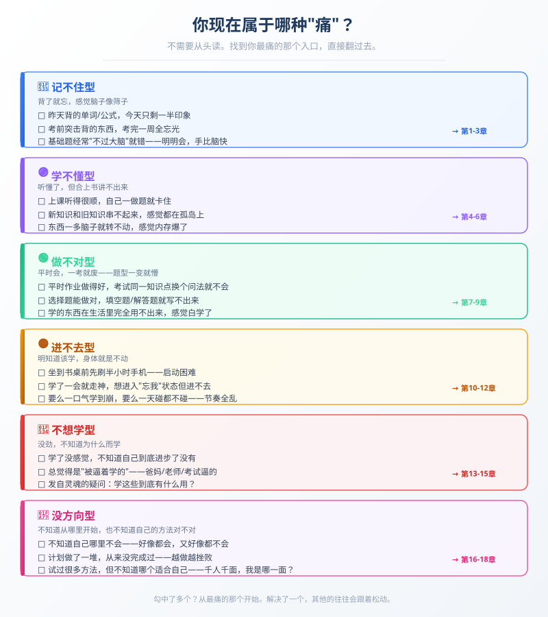
自测清单
自测清单：你现在属于哪种"痛"？
这本书不是串行读的。不需要从第一页翻到最后一页。找到你最痛的那个入口，直接翻过去。解决了一个，其他的往往会跟着松动。
勾中 ≥2 个即建议从对应篇章切入：
记不住型 → 记忆篇（第1—3章）
- [ ] 昨天背的单词/公式，今天只剩一半印象
- [ ] 考前突击背的东西，考完一周全忘光
- [ ] 基础题经常"不过脑"就错——明明会，手比脑子快
学不懂型 → 理解篇（第4—6章）
- [ ] 上课听得很顺，自己一做题就卡住
- [ ] 新知识和旧知识串不起来，感觉都在孤岛上
- [ ] 东西一多脑子就转不动，感觉内存爆了
做不对型 → 应用篇（第7—9章）
- [ ] 平时作业做得好，考试换个问法就不会
- [ ] 选择题能做对，填空/解答题就写不出来
- [ ] 学的东西在生活里完全用不出来
进不去型 → 专注篇（第10—12章）
- [ ] 坐到书桌前先刷半小时手机——启动困难
- [ ] 学了一会儿就走神，想进入"忘我"状态但进不去
- [ ] 节奏全乱：要么一口气学到崩，要么几天碰都不碰
不想学型 → 动力篇（第13—15章）
- [ ] 学了没感觉，不知道自己到底进步了没有
- [ ] 总觉得是"被逼着学的"——爸妈/老师/考试逼的
- [ ] 发自灵魂的疑问：学这些到底有什么用？
没方向型 → 调节篇（第16—18章）
- [ ] 不知道自己哪里不会——好像都会，又好像都不会
- [ ] 计划做了一堆，从来没完成过
- [ ] 试过很多方法，但不知道哪个适合自己
管不住手型 → 第19章 屏幕管理
- [ ] 学习前先刷手机，说好5分钟，再看表已经过了半小时
- [ ] 本来只想查一道题，结果被短视频/消息拐跑了
- [ ] 手机放桌上，余光扫到就想拿
考砸型 → 第20章 考试策略
- [ ] 平时都会，一上考场就发挥失常
- [ ] 卷子发下来先懵5分钟
- [ ] 经常因为审题/时间/粗心丢分——不是不会，是不会考
管不住手型 → 第19章 屏幕管理
- [ ] 学习前先刷手机，说好5分钟，再看表已经过了半小时
- [ ] 本来只想查一道题，结果被短视频/消息拐跑了
- [ ] 手机放桌上，余光扫到就想拿
考砸型 → 第20章 考试策略
- [ ] 平时都会，一上考场就发挥失常
- [ ] 卷子发下来先懵5分钟
- [ ] 经常因为审题/时间/粗心丢分——不是不会，是不会考
AI依赖型 → 第21章 AI时代的学习
- [ ] 用AI做完作业，合上电脑什么都写不出来
- [ ] 不知道AI是帮自己学还是替自己学，感觉很矛盾
- [ ] 老师/家长说AI是作弊，但同学都在用
勾中了多个？从最痛的那个开始。一个打通了，其他关卡往往会自动松动。
记忆篇：牢固存储，对抗遗忘
第1章 海马体：为什么背了就忘
探索问题
Q1-1：你理想中"记住了"是一种什么样的状态——合上书能说出多少、隔多久还能想起来？
Q1-2：回顾你记得最牢的一件事（非课本知识），它当时触发了你的什么反应？
Q1-3：如果让你设计一套让大脑"舍不得删"的记忆方式，你会从哪里入手？
Q1-4：你希望自己背完一周后，面对同样的知识点能感受到什么不同？
Q1-5：描述一个你"怎么都忘不掉"的知识瞬间——那时候你的身体、情绪、环境分别是什么状态？
Q1-6：你觉得大脑会凭什么标准来判断一个信息"值得留"还是"可以删"？
一、为什么会忘记
昨天学的内容，今天怎么都想不起来。 昨天精心背了半小时，今天早上忘记一大半。老师一问，大脑一片空白。 很多学生都逃不开一个死循环：花时间背诵 → 当时记得住 → 隔天全清零。早读反复朗读、睡前逐字抄写、考前集中突击——所有能做的“努力”你都做了，但记忆就是留不住。 越背越慌，越忘越卷。 最后老师和家长说：这孩子天生没记性、不够专注、不够刻苦。你自己也信了。一句话否定了你的天赋、态度和努力。 真相是：记不住，从来不是你不努力，而是你一直在用大脑不认可的方式记忆。 这是学习中最深的误区。大脑不是硬盘，无法被动存储所有输入的信息。它有一套固定的筛选、留存、遗忘机制。你违背这套机制，再努力都是无效努力。 这套机制叫“生存优先律”。 从物理层面来看，记忆的本质是大脑新神经回路的形成。神经元如同大脑的“住宅”，神经纤维是连接住宅的“道路”，无数神经纤维串联神经元，最终形成的神经回路，就是我们留存的记忆痕迹。 大脑的核心使命不是储存课本知识，而是节能、避险、保障生存。 在短期记忆与长期记忆之间，有一个唯一的“守门人”——海马体。它全权负责信息筛选：只有被判定为关乎生存安危、环境适配的高价值信息，才会被输送至大脑皮质，固化为永久长期记忆。所有与生存无关的冗余信息，会被直接清理，彻底遗忘。 大脑的存储资源、算力资源、能量资源都极其有限。进化把这个筛选机制刻进了基因——生存优先律是海马体判定一切信息“留还是删”的唯一准则。 这就能完美解释你的背诵困境了： 历史年份、英语单词、理科公式、文科定义——这些书本知识，对原始大脑的生存毫无意义。在海马体的判定体系里，它们平淡、重复、无风险、无情绪波动，属于百分百无用信息。你反复朗读抄写一百遍，它依然无情过滤。 反观生活中惊险的经历、情绪剧烈的瞬间、疼痛的体验，时隔数年你依旧清晰记得。核心原因只有一条：这类信息触发了大脑的生存预警，被优先标记留存。 你不是记性差。你只是还没学会怎么“骗过”海马体。
二、怎么才能记得住
衡量记忆是否真正固化的核心标准，只有一个：大脑能否产生LTP（长时程增强作用）。 LTP是记忆之源，是神经回路稳固、长期记忆形成的唯一标志。压力过载、被动机械学习、无兴趣的强行记忆，都会直接抑制LTP的生成——这就是很多人越努力、越施压，记忆效果越差的核心原因。 任何知识想要形成长期记忆，前置条件只有一个：骗过海马体，让知识被伪装成“生存刚需信息”。 若无法通过这一层筛选，再久的突击背诵、再充足的睡眠复盘，都无法产生有效的神经回路。一切努力都是无效努力。 下面三个方法，就是帮你“骗过海马体”的具体操作。它们分别对准记忆的三个关键机制：时间节奏、情绪标记、身体状态。
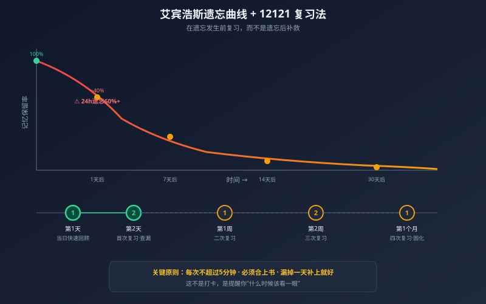
【简单方法】12121复习法——用对的节奏，而不是多的时间
原理： 根据艾宾浩斯遗忘曲线，人类记忆不是匀速消退的。真相是：初期极速遗忘，后期缓慢衰减。 学习后的第一个24小时，是遗忘最快的时间窗口。你今天背的内容，明天不复习，遗忘率能超过60%。但如果在这个“悬崖点”复习一次，衰减曲线就会被拉平一大截。 一次性长时间集中突击背诵，大脑会快速疲劳麻木，判定该信息为“临时出现、无需保存”，直接清零。 而少量多次、分时段的间隔重复，会持续刷新大脑对知识点的感知频率。海马体误以为该信息“高频出现、与生存息息相关”，于是主动将其标记为长期记忆。 这就是“12121”的底层逻辑：不是在遗忘之后补救，而是在遗忘发生之前拦截。 操作步骤（4步）：
- 第1天：学习当天学完的新内容，当天晚上进行一次5分钟快速回顾。不需要从头再背一遍，只做一件事：合上书，试着复述出核心框架。在脑子里过一遍就行，不写下来也可以。
- 第2天：首次复习。拿出昨天的内容，同样是5分钟。这次重点检查：昨天记得模糊的地方，今天能不能想起来。想不起来的地方标记一下，这就是你遗忘的第一个“漏洞点”。
- 第1周后：二次复习。距离第1天学习过了一周。再花5分钟，快速过一遍。你会发现有些内容不用想就跳出来了——这些已经进入初步固化。还有些内容想了很久才想起来——这些还需要再补一次。
- 第2周后、第1个月后：第三、四次复习。每次依然只要5分钟。四次下来，这个知识点就已经走完了“从陌生到自动化”的全程。
关键原则： 每次复习不超过5分钟。超时了就是在“重新学”，不是在“复习”。 每次复习合上书。翻书看不算复习，是在给自己制造“我记得”的错觉。 漏掉一次没关系，第二天补上。这个节奏不是打卡，是提醒你“什么时候该看一眼”。 如果做不到： 记不住哪天该复习 → 在手机日历上设4个提醒：1天后、7天后、14天后、30天后。设好就不用再想了。 5分钟不够复习完所有内容 → 挑最核心的3个知识点过一遍，剩下的第二天补。少量多次的核心是“少量”，不是“全部”。
🃏 配套工具卡：[感情锚点](cards/card_情绪标签卡.svg)
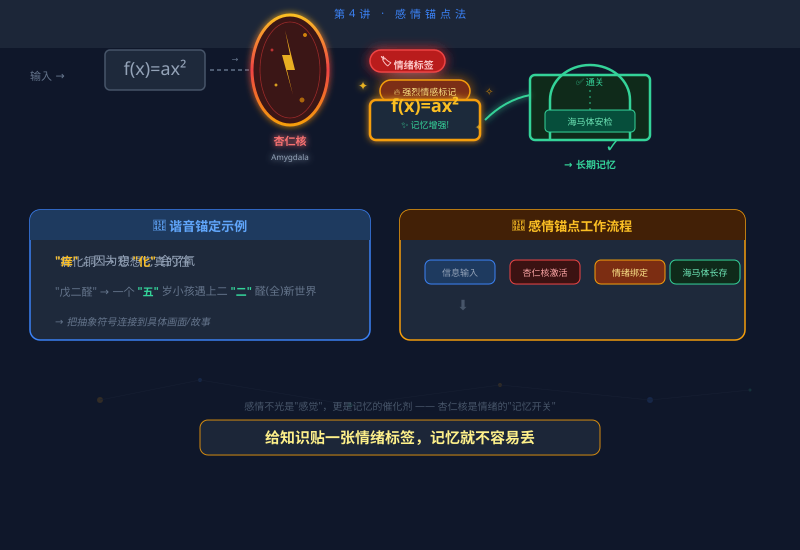
【进阶方法】感情锚点——给平淡知识贴上“情绪标签”
原理： 海马体有一个“漏洞”：它无法精准区分“生存危险信息”和“情绪剧烈波动信息”。 大脑中的杏仁核负责处理情绪。情绪波动越大，神经印记越深刻。海马体接收到杏仁核的强烈信号后，会将附带情绪标记的信息优先固化为长期记忆。 这就是为什么你能记住三年前某次吵架的细节，却记不住三天前背的英语单词。前者带着愤怒或委屈的情绪标记，后者平淡如水，海马体直接忽略。 枯燥的数字、公式、史实之所以难记，就是因为没有任何情绪加持。 但情绪是可以“人为添加”的。你不需要真的激动，只需要在记忆时给知识点加上一丁点想象、画面或情感链接，海马体就会被“骗”过去。 操作步骤（3步）：
- 拿到一个需要记忆的“干”知识点，先问自己一句话：“这让我想到什么？”任何联想都行。一个画面、一个故事、一个你认识的人、一个你经历过的场景。哪怕联想很离谱都没关系，越离谱情绪标记越强。
- 把联想变成一个1秒钟的“心理快照”。不用写下来，不用画出来，就在脑子里闪一下。比如背书时想象画面，背数字时想一个场景，记规则时代入一个真实情境。
- 记忆时把这个快照和知识点绑定。每次看到这个知识点，先让那个画面在脑子里闪一下，再开始背内容。
三种常见知识的“加情绪”思路： 记事件/史实 → 代入人物处境。如果当时是你，你会怎么想？恐惧？兴奋？愤怒？ 记数字/公式 → 给数字编一个荒诞画面。离谱的画面比合理的画面更容易被大脑标记。 记概念/定义 → 用自己的话“翻译”一遍，而不是背诵原文。翻译的过程本身就是理解，理解本身就会产生轻微的满足感——这就是情绪标记。 关键原则： 联想不需要“准确”，需要的是“让你有感觉”。 不用每次都天马行空想象，一个知识点只要做过一次成功的情绪标记，复习时直接调用那个标记就可以，不需要重新构造。 如果做不到： 实在想不出联想 → 用最基础的情绪入口：惊讶。对着知识点说一句“哇原来是这样的”，这个轻微的惊讶感就够用了。 觉得编画面太浪费时间 → 只对“背了十遍还记不住”的顽固知识点使用。每个顽固点花30秒做一次情绪标记，一劳永逸。 【备选锦囊：如果这个方法对你没用】 有些同学觉得“编画面”太虚，做不出来。 备选方案是谐音锚定法：给难记的知识点配一个声音上的“钩子”。把关键字的发音和一个你熟悉的词挂钩，或者编成一句押韵的话。声音本身就能带情绪——一个顺口的节奏、一个好笑的谐音，都是天然的杏仁核触发器。 这个方法不需要想象力，只需要找到“读起来有意思”的声音组合。很多学生用这个策略攻克了最难记的名词和术语。
🃏 配套工具卡：[12121复习法](cards/card_12121排程卡.svg)
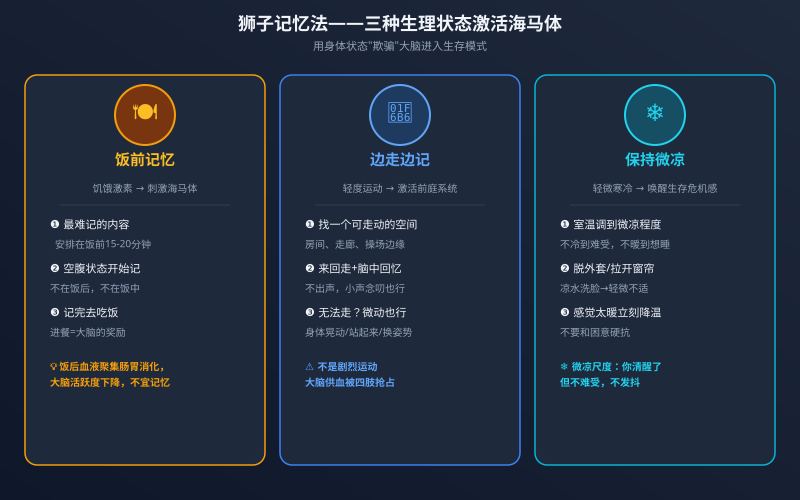
【高阶方法】狮子记忆法——用身体状态“欺骗”大脑进入生存模式
原理： 作为哺乳动物，人类的记忆活跃度天然贴合“狮子捕猎”的生存本能。想象一只狮子在草原上：它什么时候最警觉？饥饿的时候、移动的时候、环境微冷的时候。 这三种状态会向大脑发送一个统一信号：“现在是生存关键期，所有感知系统全力运转，记住一切可能有用的信息。” 这不是比喻。生理学研究证实： 饥饿时：空腹状态下分泌的饥饿激素会主动刺激海马体，提升记忆效率。 移动时：轻度运动带来的身体晃动激活前庭系统，唤醒大脑警觉性。 微冷时：轻微寒冷感抑制舒适带来的放松信号，保持大脑专注状态。 这一方法精准适配生存优先律，能高效刺激海马体、激活LTP。它不是“技巧”，是直接调用身体的生理机制来增强记忆。 操作步骤（3条独立使用，任选一条都能生效）： 第一条：饭前记忆
- 把每天最难记的内容，安排在饭前15-20分钟。
- 空腹状态时开始记。不是在饭后，不是在饭中，是饭前。
- 记完后去吃饭。吃饭本身就是对刚才记忆内容的“奖励”，大脑会额外标记这段记忆。
原理一句话：饥饿激素刺激海马体，记忆效率高于饱腹状态。 注意事项：饭后血液集中供给肠胃消化，大脑活跃度下降，不适合高强度记忆。把“动脑子”的事放在饭前，“不动脑子”的事放在饭后。 第二条：边走边记
- 找一个可以走动的小空间。房间、走廊、操场边缘都可以。
- 一边来回走动，一边在脑子里回忆今天学的内容。不出声也可以，小声念叨也可以。
- 如果没法走（比如在教室），身体轻微晃动、站起来靠墙、换一个姿势——任何打破“静止坐姿”的动作都能激活警觉系统。
原理一句话：轻度运动贴合动物觅食的本能状态，身体在动，大脑就不会休眠。 注意事项：不是剧烈运动。跑步机上的冲刺不行，大脑供血被四肢抢占，反而记不住东西。只要“走起来”、“站起来”、“晃起来”，强度刚好。 第三条：保持微凉
- 学习前，把房间温度调到微微凉爽的程度。不冷到难受，但不温暖到想睡觉。
- 如果无法控制室温（比如在教室），脱掉一件外套、拉开窗帘让光线变强、用凉水洗一下脸——任何一个能让身体感到“轻微不适”的动作都可以。
- 一旦感觉太暖和、眼皮变沉，马上换环境或降温。不要和困意硬抗，你抗不过生理机制。
原理一句话：过于温暖舒适的环境让大脑进入放松模式，轻微寒冷感唤醒生存危机感，刺激专注。 注意事项：不是越冷越好。冷到发抖大脑耗能全在保暖上，没精力学习。“微凉”的尺度是：你清醒了，但不难受。 三条的组合使用策略： 日常黄金组合：饭前记忆 + 边走边记。把最难的内容放在饭前，边走边在脑子里过。双通道刺激海马体。 考前冲刺组合：三条全上。空腹、站立走动、脱外套保持微凉。模拟“生存警觉状态”，记忆效率拉满。 最简组合：只用一条。优先推荐“饭前记忆”——最容易做到，效果也最稳定。
【升阶诱饵】 掌握了这三个方法，你已经知道了怎么把知识“送进”大脑。 但送进去了，不等于取得出来。很多学生背得滚瓜烂熟，合上书也能复述，一上考场大脑一片空白。这不是记忆的问题，是“提取”的问题。 你花了大量时间把知识往里灌，但从来没练过怎么往外拿。考试考的从来不是“你记得多少”，而是“你在压力下能调出多少”。 下一章，我们要解开一个反直觉的真相：为什么反复看书是最低效的复习方式？为什么合上书硬想，比翻书看十遍更有用？ 翻到第2章：提取效应——看了十遍，合上书就写不出来。
三、实践指南
本章核心方法速查表
选方法指南 如果你最大的痛点是“明明花了时间，隔天全忘光”：从12121复习法开始。这是整个记忆体系的基础，不先解决时间节奏，其他方法效果打折。 如果你有一些“背了无数遍还是记不住”的顽固知识点：给它们用感情锚点，每个花30秒做一次情绪标记，这辈子都不会再忘。 如果你经常在书桌前坐到昏昏沉沉，效率极低：试试狮子记忆法的任意一条。先改变身体状态，再改变记忆效率。 常见误用提醒 12121不是“每天复习前一天的内容”：是1天、2天、7天、14天、30天这个节奏。每天复习前一天是另一种方法，效果不同，不要混淆。 感情锚点的联想不用“合理”：编的越离谱越记得住。不要追求逻辑正确，要追求画面冲击感。 狮子记忆法不用三条全做：先试一条，有效果再加第二条。三条一起上需要身体适应，不要第一天就拉满。
| 方法层级 | 方法名称 | 一句话 | 适合谁 | 需要多长时间 |
|---|---|---|---|---|
| 简单 | 12121复习法 | 在遗忘前复习，不是遗忘后补救 | 所有“背了隔天就忘”的学生 | 每次5分钟 |
| 进阶 | 感情锚点 | 给平淡知识贴上情绪标签 | 对枯燥内容记不住的学生 | 每知识点30秒 |
| 高阶 | 狮子记忆法 | 用身体状态骗过海马体 | 想提升记忆效率的所有人 | 不需要额外时间，改变习惯 |
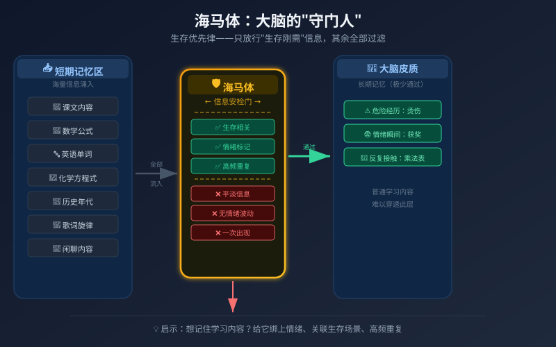
海马体的夜班工作：睡眠与记忆巩固
原理：
你以为睡着之后大脑在休息？正好相反。你睡着以后，海马体才开始真正干活。
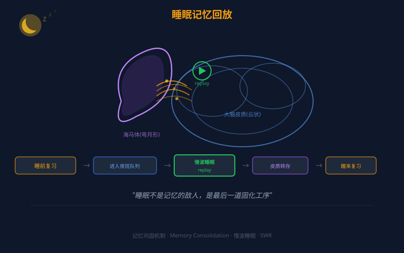
白天你学了一堆东西，大脑里留下了大量神经活动痕迹。但这些痕迹还只是"临时文件"，存在海马体这个临时存储区里。如果不处理，大部分会被清空——这就是艾宾浩斯遗忘曲线的底层原因。
处理发生在哪里？慢波睡眠阶段。在这个阶段，海马体会像按了重播键一样，把白天高频激活过的神经信号向大脑皮质"回放"一遍。神经科学家管这个叫 hippocampal replay——海马体重放。皮质的长期存储空间接收到这份"转存请求"后，把关键信息写入更稳定、更分散的神经网络里。
这个过程有多重要？一句话：没有这个夜班，你今天背的东西明天就没了。睡眠不是记忆的敌人，是记忆的最后一道固化工序。没有它，前面的努力全是半成品。
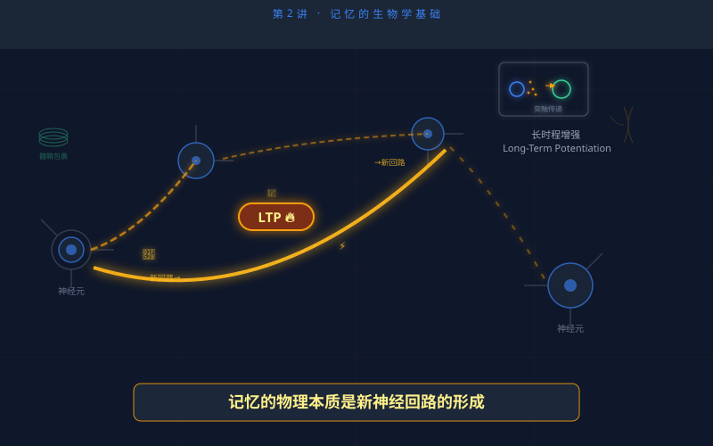
这个机制也解释了为什么12121复习法中，"睡前最后一次复习"和"睡醒后第一次复习"效果最好——睡前复习刚好把信息喂进海马体的夜班队列；睡醒复习则是在皮质刚完成转存的窗口期再加固一次。两次卡在慢波睡眠的起点和终点，效率最高。
操作步骤（2步）：
- 睡前10分钟，过一遍今天最难记的内容。不需要精背，快速扫读就行。你的目标不是"现在记住"，而是给海马体的夜班队列塞一张高优先级的工单。扫完就睡，别刷手机。
- 醒后第一件事，别碰手机。闭眼，在脑子里把昨晚最后看的那几个知识点过一遍，能回忆多少算多少。只用两三分钟。这一步相当于去皮质存储区"签到"，确认昨晚的转存有没有生效。
关键原则：
把睡眠从"偷走学习时间的敌人"重新定义为"记忆系统的最后一班岗"。你不是在"浪费时间睡觉"，你是在给海马体留出处理时间。逼自己少睡来多学，本质上是取消了记忆的最后一道工序——货架摆满了，没人入库，全是摆件。
如果做不到：
失眠或者睡眠严重不足怎么办？两个兜底方案。
第一，20分钟午睡也有用。午睡中也存在慢波睡眠的微量片段，海马体的replay效应同样会发生，虽然强度远不如夜间完整睡眠，但聊胜于无——一个下午的清醒状态和你刚午睡过的状态，记忆提取成功率完全不同。
第二，闭眼静躺。这看起来像在偷懒，其实它有一个正经名字：NSDR（非睡眠深度休息）。研究表明，单纯闭眼、放空、不做任何认知任务的状态，海马体就会自动进入低强度的记忆整理模式。你没有睡着，但夜班工人已经在提前上工了。睡前实在睡不着的时候，就用这个方法——躺着别动，闭眼，放空。不算睡觉，但也不是白躺着。
延伸到下一章：本章讲的是怎么把东西记住，但记住之后更大的问题是能不能取出来。第2章提取效应会告诉你——记得住不等于用得出。
学科小贴士：历史画时间线网，物理画因果链网，英语画词根词缀网——网的结构不同，原理一样：让知识点之间产生关系。
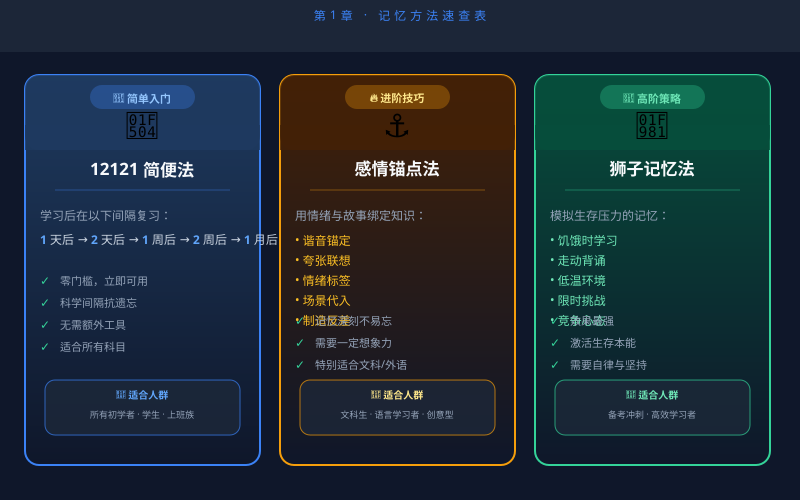
四、本章小结
- 忘记不是记性差，是你用了海马体不认可的记忆方式。大脑不是硬盘，是生存过滤器。
- 生存优先律是海马体筛选所有信息的唯一准则：只留生存相关，丢弃无关信息。
- 长期记忆的唯一标志是LTP，压力、被动、枯燥都抑制LTP。
- 12121复习法：用对的节奏，在遗忘发生前复习，每次5分钟。
- 感情锚点：给知识加情绪标签，骗过海马体的生存筛选。
- 狮子记忆法：饭前记、走着背、保持微凉——用身体状态激活大脑警觉系统。
- 记忆的终点不在“记住”，而在“能取出来”。下一章：提取效应。
第2章 提取效应：看了十遍，合上书就写不出来
探索问题
Q2-1：你能描述一下"合上书硬想"和"翻着书看"两种状态在你身体里的感觉差异吗？
Q2-2：你希望在复习时体验到哪种"费劲感"——它和"看懂了"的顺畅感有什么不同？
Q2-3：如果把"考试"想象成一次"大脑搬家"，你希望从自己脑子里往外搬东西时，哪些先出来、哪些还卡着？
Q2-4：你觉得"反复看十遍"和"先想一遍再看"在你的大脑里走了两条什么样的路？
Q2-5：你理想中的复习节奏是什么样的——多久合一次书、每次从脑子里往外拽多少？
Q2-6：描述一个你"挤了半天终于想起来了"的时刻——那个挤的过程发生了什么？
一、为什么会“看了就忘”
你肯定有过这种经历： 明天要考试，今晚把笔记翻来覆去看了七八遍，荧光笔划得满页都是。你觉得稳了——每一个字都眼熟，每一个公式都看着顺。 第二天考场上，大脑一片空白。那个你昨晚明明“看会了”的题，就是写不出来。 这不是你运气差，是你掉进了学习中最隐蔽的陷阱：流畅性错觉。 《认知天性》用三十年研究揭示了这个反直觉的真相：反复阅读是最低效的学习方式之一。当你反复看同一页笔记时，每读一遍都更顺、更快、更眼熟。这种“顺”的感觉被大脑误判为“我记住了”，但实际上，你只是在识别信息，不是在提取信息。 识别和提取是两套完全不同的神经机制。 识别是被动的：信息在外面，你看到它，觉得“哦，这个我知道”。 提取是主动的：信息在里面，你不看它，把它从大脑里“拽”出来。 考试考的是提取，不是识别。你练了一百遍识别，上了考场需要提取的时候，大脑从来没练过，当然一片空白。 《记忆的七宗罪》把这种现象称为“舌尖效应”的变体：信息确实在大脑里存着，但通往这条信息的神经通路太薄弱了。反复阅读只会强化“看到→认出”这条通路，不会强化“不看→想出”这条通路。 更可怕的是，反复阅读还会制造“知道感错觉”。你翻到某一页，觉得“这页我都熟”，然后就跳过了。但你不知道的是，如果没有书在面前，你根本想不起来这页到底写了什么。书在你面前的时候，你永远不知道自己其实没记住。 这不是你的错。这是大脑的自欺机制。 大脑天生偷懒。识别比提取省力，所以它选择识别。你觉得“我复习了”，大脑也觉得“我记住了”，但你们都没做真正需要做的事。
二、怎么才能真正记住
提取能力不是天生的，是练出来的。和所有能力一样，它需要刻意训练。 核心原理只有一句话：记忆的强度不在你放进去多少次，而在你取出来多少次。 每一次成功的提取，都会让这条神经通路变得更粗、更快、更稳定。每一次费力的提取——尤其是差一点想不起来但最后想起来了的提取——对记忆的强化作用，远超过十次轻松的重读。 下面三个方法，就是帮你从“看了就忘”变成“想忘都忘不掉”。
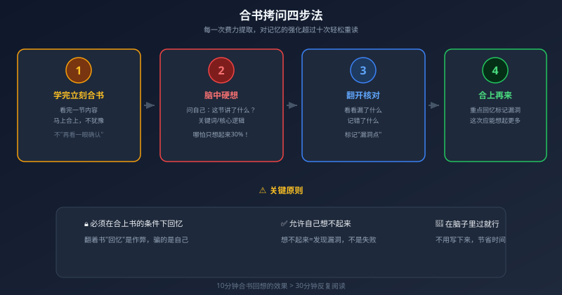
【简单方法】合书拷问法——每天一次的“大脑俯卧撑”
原理： 提取能力是大脑的一块肌肉。反复看书是在给这块肌肉“按摩”，舒服但练不出力量。合上书硬想，才是让这块肌肉做“俯卧撑”。 《认知天性》的核心建议：把复习时间的一部分，从“看书”改成“自测”。哪怕你什么都想不起来，光是在那里“使劲想”的过程，就已经在强化提取通路了。 这听起来反常识——什么都没想起来，也算学习？算。因为“尝试提取”这个动作本身，会告诉海马体：“这条信息很重要，下次我需要更快地找到它。”海马体就会主动加固这条路。 操作步骤（4步）：
- 学完立刻合书。看完一节内容，马上把书合上。不要犹豫，不要“再看一眼确认”。
- 在脑子里过一遍。问自己：这一节到底讲了什么？不要追求完整复述，把能想起来的关键词、核心概念、大致逻辑先拽出来。哪怕只能想起来30%，这一步也已经超过了反复阅读的效果。
- 翻开书核对。看看自己漏了什么、记错了什么。这些“漏了”和“错了”的地方，就是你最需要加强的地方。把它们标记出来。
- 合上书再来一遍。重点回忆刚才标记的那些漏洞。这次你应该能想起来更多。
关键原则： 必须在合上书的条件下回忆。翻着书“回忆”是作弊，骗的是自己。 允许自己想不起来。想不起来不是失败，是“发现漏洞”。漏洞发现得越多，补得越及时，考试时越安全。 回忆不需要写下来。在脑子里过一遍就可以，节省时间。但如果想写，只写关键词，不写完整句子。 如果做不到： 想不起来就不想，直接翻书 → 给自己定一个强制计时：合书后至少想1分钟才能翻书。这一分钟的“干想”是最值钱的一分钟。 觉得合书回想太花时间 → 实际上它比反复阅读省时间。10分钟合书回想的效果，超过30分钟翻书重读。
【进阶方法】强制输出法——把“输入模式”切换成“输出模式”
原理： 大多数学生的学习模式是“输入→输入→输入”：听课是输入，看书是输入，抄笔记还是输入。但学习的终点不是输入，是输出。 《认知天性》提出一个颠覆性的建议：把学习时间的大部分花在输出上，而不是输入上。如果你有1小时复习时间，至少拿出40分钟来做输出练习，最多花20分钟看书补漏。 输出的形式可以有很多种：合书默写、自我提问、给别人讲、做练习题。关键是你的大脑要进入“往外拿”的模式，而不是“往里装”的模式。 操作步骤（4步）：
- 把笔记变成问题。复习时不要直接翻笔记。先看目录或标题，然后问自己：“这个章节讲了哪些内容？”用问题而不是用内容来引导复习。
- 用一张白纸做“知识倾泻”。拿出一张白纸，不看任何资料，把一个主题所有能想到的知识点全部写上去——关键词、公式、概念关系、典型例题、易错点。能写多少写多少，不追求格式和顺序。
- 用不同颜色的笔补漏。翻开书和笔记，用红色笔在白纸上补充刚才遗漏的内容。红色部分就是你最需要加强的薄弱环节。
- 把红笔内容转化成下一轮自测的重点。下次复习，优先回忆红色部分。直到红色也变成你的“自动输出”内容。
关键原则： 白纸倾泻不是“做笔记”，是“做检测”。不限时，但必须不看书。 不追求完整。哪怕只能写出零散的五个词，也比翻书看五页有价值。 红笔补漏之后必须再测一次。只补不测，红笔内容还是记不住。 如果做不到： 面对白纸大脑空白，一个字都写不出来 → 降低难度。先看目录，然后合上书，只写一个标题下的3个关键词。从一个词开始，你会发现自己其实知道得比自己想的多。
🃏 配套工具卡：[有间隔的彩排](cards/card_自测排程.svg)
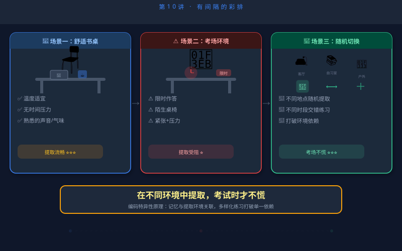
【高阶方法】有间隔的彩排——模拟考试的“压力提取”
原理： 学习时你在书桌前，安静、舒适、无压力。考试时你在考场，限时、紧张、有压力。这两种环境下的提取效率天差地别。 这叫“编码特异性”：记忆编码时的环境，和提取时的环境越相似，提取越容易。如果你的记忆都是在“安静舒适翻着书”的环境下编码的，到了考场这个完全不同的环境，提取就会困难。 《认知天性》的建议是：在平时的练习中就模拟考试的压力环境。不只是在测试知识，更是在测试“在压力下提取知识的能力”。 操作步骤（4步）：
- 定时自测。每周至少做一次定时限时自测。内容和考试范围一致，时间压缩到考试时间的70%。限时的压力会倒逼大脑进入“高效提取模式”。
- 变换环境自测。不要总在书桌前自测。有时在嘈杂的客厅，有时在学校自习室，有时在完全不熟悉的环境。大脑会适应在不同环境中提取信息，考试时环境变化就不会影响发挥。
- 穿插混合自测。不要把同一个主题的题目放在一起做。把不同章节的题目混在一起，随机出现。这比分类练习难度大得多，但效果也强得多。每次切换主题，大脑都要重新激活那部分知识的提取通路。
- 自测后必须复盘。做完自测不是结束，是开始。找出做错的题，问自己三个问题：我错在哪里？为什么当时没想到？下次遇到类似的题，我的提取线索是什么？
关键原则： 定时自测的分数不重要。重要的是你在压力下提取的过程。分数低说明你需要更多压力练习，不是说明你不行。 穿插混合练习会觉得“更乱更累”，这恰恰是效果在发生的信号。轻松的学习往往是低效的学习。 每周至少一次。间隔太长效果打折，太频繁会产生厌烦。 如果做不到： 没时间做完整自测 → 只做5道题，定时10分钟。迷你自测也比不自测强十倍。 没条件换环境 → 在现有环境做最小的改变：换一把椅子、换坐姿、摘掉眼镜、戴个帽子。任何微小的环境改变都能增加提取通路的弹性。
🃏 配套工具卡：[合书拷问法](cards/card_合书拷问卡.svg)
三、实践指南
本章核心方法速查表
选方法指南 如果你刚发现自己“反复看书原来是低效的”：从合书拷问法开始。这是最低门槛的提取练习，学完任何内容都能立刻用。 如果你已经知道要自测但不知道怎么测：用强制输出法。白纸倾泻是最简单最有效的自测方式，不需要提前准备题目。 如果你平时测验不错但大考总是失常：你需要有间隔的彩排。考试环境和你平时的学习环境差距越大，你越需要环境适应训练。 常见误用提醒 合书拷问不是“合上书背诵原文”：是回忆核心内容和逻辑，不是逐字背诵。逐字背诵是低效的提取方式。 白纸倾泻不是做精美的复习笔记：它是一次性检测工具，做完就可以扔掉。花时间美化它是浪费。 有间隔的彩排不是做完整试卷：几道题也行，限时就行。关键是“限时+不翻书”这两个条件，不是题量。
| 方法层级 | 方法名称 | 一句话 | 适合谁 | 需要多长时间 |
|---|---|---|---|---|
| 简单 | 合书拷问法 | 合上书硬想，哪怕只想起来30% | 所有“看书觉得会、合书全忘”的学生 | 每次5-10分钟 |
| 进阶 | 强制输出法 | 用白纸倾泻取代反复翻书 | 复习时习惯反复翻书的学生 | 每主题15-20分钟 |
| 高阶 | 有间隔的彩排 | 在模拟考试环境下限时提取 | 平时会考试就不会的学生 | 每周1次，30-60分钟 |
四、本章小结
- 反复阅读制造“流畅性错觉”，让你以为会了其实不会。考试要的是提取，不是识别。
- 提取能力的强弱，取决于你练习提取的次数，而不是输入信息的次数。
- 合书拷问法：学完立刻合书，逼自己回忆，哪怕只能想起30%。
- 强制输出法：用白纸倾泻取代翻书复习，先输出再补漏。
- 有间隔的彩排：限时、换环境、穿插混合，模拟考试的压力提取。
- 每一次费力的提取，对记忆的强化超过十次轻松的重读。
- 提取练好了，下一个要解决的是“粗心”。下一章：自动化。
第3章 自动化：为什么基础题不过脑反而容易错？
探索问题
Q3-1：你希望哪一类基础操作能像呼吸一样不用想就能做对？
Q3-2：你觉得"想都不用想"和"需要想一想"之间，你的大脑在消耗什么不同的东西？
Q3-3：回顾一次你"明明会但做错了"的经历——当时你的注意力被分配到了几个地方？
Q3-4：你理想中解一道综合题时，哪些环节应该自动完成、哪些环节值得你集中精力去思考？
Q3-5：你能想到自己的生活中有哪件事已经做到了"完全不用过脑"——它是怎么练出来的？
Q3-6：如果把"粗心"这两个字从你的字典里删掉，你会用什么更具体的词来描述那些错误？
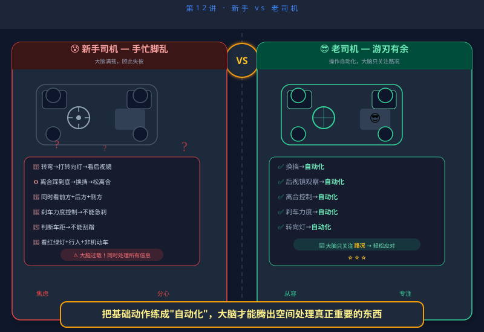
一、为什么会"粗心"
你考完试对答案，发现又错了一道基础题。 不是不会。是不该错。是"粗心"。 负号忘写了。单位没换算。题目要求选"错误的"你选了"正确的"。计算过程中7+8算成了14。 你告诉自己：下次注意就好。但下次你还错。再下次也错。同一个坑，你摔了五次。 老师和家长说：这孩子聪明，就是马虎。你接受了"马虎"这个标签。但标签不解决问题。问题在更深的地方。 "粗心"从来不是性格问题。它在绝大多数情况下，是自动化程度不够的生理表现。 《为什么学生不喜欢上学》揭示了这个被严重忽视的真相：人类的大脑在同一时间能处理的信息量极其有限。当你做一道综合题时，大脑要同时处理审题、提取公式、运算、检查等多个任务。如果其中的基础环节不够自动化，每一个都需要消耗你宝贵的注意力，那么你的大脑就会在高负荷下出现随机错误。 这不是你不仔细。是你的认知资源被耗尽了。 《应用学习科学》用"认知负荷理论"给出了精确解释：大脑的工作记忆容量大约只有4个信息单元。如果一道题需要你同时处理10个信息单元，其中7个是基础知识，3个是核心难点，而你的基础知识还需要"想一想"才能用，那你的注意力必然被7个基础信息抢占，留给核心难点的只剩下3个单元——刚好不够用。这时候，错误就会随机出现。 所谓"粗心"，本质上是基础技能没有进入"自动驾驶"模式。 你想想开车。新手司机每一个操作都要想：看后视镜、打转向灯、踩离合、换挡。越想越紧张，越紧张越出错。老司机开车，换挡变道全自动完成，大脑只需要关注路况。这不是天赋的差异，是自动化程度的差异。 学习也是一样。当一个知识或技能需要你"过脑"才能调取时，它就占用了你的认知资源。当你大脑满载时，这部分资源的随机波动就会表现为"粗心"。 所以，"下次仔细点"永远解决不了问题。真正需要做的，是让基础知识和技能达到自动化——想都不用想就能用出来。
二、怎么才能真正"不粗心"
自动化的达成只有一个途径：刻意练习。 这里的"刻意练习"不是盲目刷题。刷100道同类型的题可能只是在原地踏步——甚至可能更糟：同类题集中刷练的只是肌肉记忆，不是真正的自动化。刻意练习需要三个条件：明确目标、即时反馈、不断挑战边缘能力。 下面三个方法，从三个层次帮你达成自动化：先把单个薄弱点磨成反射（微循环），再打破题型惯性让大脑学会"识别"而非"套用"（交错练习），最后在自动化未完成时靠策略止损（认知节流）。
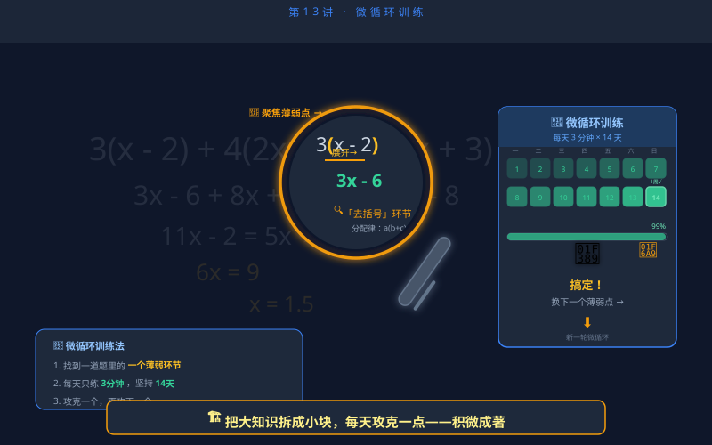
【简单方法】基础技能微循环训练——把薄弱环节"拆出来单独练"
原理： 大多数人练习自动化时犯的错误是：在完整做题的过程中"顺便"练基础。这效率极低。因为完整做题时，你的注意力被分散在各个步骤中，薄弱环节只占1/10的时间，根本得不到足够强度的刺激。 《为什么学生不喜欢上学》的建议是：把薄弱的基础环节单独拆出来，每天花极短时间高强度重复练习。就像篮球运动员不是只在比赛中练投篮，而是每天单独练几百次投篮。学习也是一样。如果去括号总是忘变号，那就别在解方程中"顺便练"，而是拿出一张纸，专门练去括号。 操作步骤（4步）：
- 定位薄弱环节。翻出最近三次考试的错题，把所有"不该错"的基础错误圈出来。不要归类为"粗心"，要精确归类到具体技能：是去括号变号？是分数加减？是化学方程式配平？是英语单复数？找出反复出现的那个点。
- 设计微练习。针对这个点，设计一个只需要2-3分钟就能做完的小练习。例如：如果去括号总出错 → 每天练10道去括号题；如果单词拼写总出错 → 每天默写10个易错单词；如果公式记混 → 每天盲写一遍易混公式。
- 每天固定时间练习，持续两周。不需要很长时间，每天3-5分钟就够。关键是每天都要练，让大脑形成自动化通路。两周是一个形成初步自动化的最小周期。
- 两周后检验效果。再做一次包含这个知识点的完整练习，检查错误率是否下降。如果还有问题，换一种练习方式继续两周。如果已经解决，换下一个薄弱点。
关键原则： 一次只练一个薄弱点。不要同时练三个，那跟完整做题没区别。 每天的练习量小到"不可能失败"。坚持的关键是容易做到，不是量大。 两周是最小检验周期。不要三天没效果就放弃。 如果做不到： 找不到自己的薄弱环节 → 找一个同学帮你找。别人看你的错误往往比你自己看得更清楚。 每天坚持不了 → 把练习时间固定在每天已有的习惯后面。比如：刷牙后练5分钟，午饭后练5分钟。绑定已有习惯，不需要额外意志力。
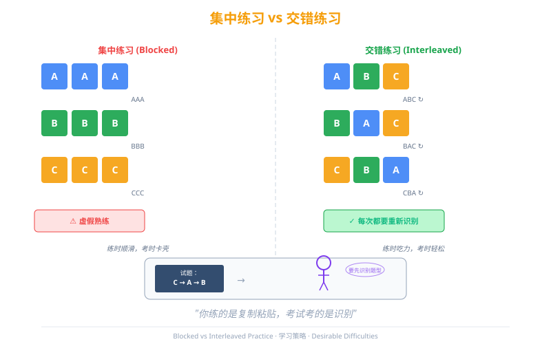
【进阶方法】交错练习法——打破题型惯性，练出真正的"识别力"
原理： 你肯定有过这种体验：一口气刷了10道同类题，越做越快，越做越顺，最后一题几乎不用想，手自己就写完了。你合上书，觉得自己稳了。但考试那天，你傻眼了。 为什么？集中练习制造的是虚假熟练感。当大脑发现"哦，后面全是同一类题"，它就偷懒了——直接跳过最关键的一步：识别问题类型。它不再问"这是什么题？该用哪个方法？"，而是直接套用刚才的套路。你感觉自己在进步，其实只是在跑肌肉记忆。你不是在"解题"，你是在"复制粘贴"。 考试可不会这么仁慈。试卷上的题是打乱的，一会儿代数一会儿几何，刚才还是函数下一秒变成概率。你的大脑突然被要求做一件事——先判断这是什么题型——而这一步，你从来没练过。 你在考场上慌了，不是因为不会做，是因为找不到该用哪个工具。就像你有一整箱工具，但没人告诉你要先辨认面前是钉子还是螺丝。 交错练习法解决的就是这件事：逼你的大脑在每次做题前主动"识别题型"，而不是无脑套用上一个题的方法。认知科学里这叫"必要难度"——学的时候费劲一点，提取的时候反而更轻松。 操作步骤（4步）：
- 打乱顺序练。平时做题，故意把不同章节的题目混在一起。别按单元顺序一章一章刷，把题目列表打乱，让每道题都和上一道不一样。你的大脑被迫在每道题开始前做一次"身份识别"——"这是什么类型？该用什么方法？"这道工序练熟了，考试就不会在识别阶段卡壳。
- 用混合卷替代单元卷。学完一个单元后，别做单元专题卷。去找那种把前面所有内容搅在一起的综合卷。哪怕题目本身不难，单是"在不同题型之间来回切换"这件事，就是最有价值的训练。
- 新旧混合。每做3道今天刚学的新题，就插入1道上周的旧题。这样旧知识不会忘，新知识在对比中反而记得更牢。而且你会发现一个惊喜——新旧题目混在一起，你反而更容易看出它们之间的关联和区别。
- 每做完一题，问自己一句："这道题的本质是什么类型的？"就一句话，一秒的事。这个自问会把"识别题型"从潜意识动作变成有意识的习惯，强化到你不用想也能做对。
关键原则： 慢就是快。交错练习当时觉得累、卡、不顺，但隔一天再测，反而比集中练习记得更牢。考试那天的速度，才是真正的速度。前期慢两秒做一次判断，换来考试时省掉30秒的犹豫。 必要难度不可绕开。如果你觉得"这样练太累了，不如集中刷题轻松"，请记住：轻松的学习往往是低效的学习。那种"卡了一下但还是想起来了"的瞬间，才是神经通路在加固的时刻。 一个阶段只混合已学内容。不要一上来就全册混合，从"两章混合"开始。比如学了第三章和第四章，就把这两章的题打乱在一起练。熟练后再加第五章。 如果做不到： 一开始就全册混合感觉崩溃 → 从"两章混合"开始。今天学了第三章，就把第二章和第三章的题打乱一起做。适应后再慢慢加。 实在没时间做交错练习 → 先做自动化加速器：选一项"会了但不够快"的基础技能（比如乘法口诀、元素符号、常见方程式），每天一次限时3-5分钟的冲刺练习，用倒计时逼大脑进入"不过脑子就能反应"的模式，先保证基础速度不掉。有整块时间了再补交错练习。
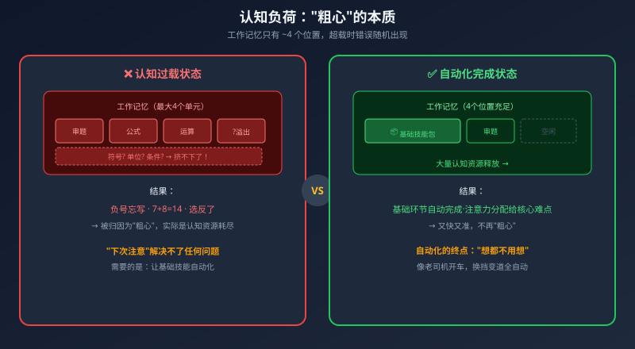
【高阶方法】认知节流——为复杂任务"腾出脑力"
原理： 前面两个方法练的是基础技能的自动化。但这个方法是反过来用的：在你还没有完全自动化之前，怎么在复杂任务中减少"粗心"错误？ 答案是：主动管理认知负荷。 《为什么学生不喜欢上学》提出：当任务认知负荷超过工作记忆容量时，错误不可避免。但你可以通过改变任务处理方式来降低认知负荷。就像电脑内存不够时可以关闭后台程序，大脑也有"节流"策略。 操作步骤（4步）：
- 用"外包法"减轻记忆负担。做题时，不要把所有中间结果都存在脑子里。把中间步骤写下来，把关键条件圈出来，把转换后的信息标注在题目旁边。纸是大脑的外接硬盘，不要吝啬使用它。
- 采用"分步检查法"。不要做完一整道题再检查。每做完一小步就回头扫一眼：条件抄对了吗？符号写对了吗？单位统一了吗？分步检查虽然多花几秒钟，但远比做完后发现全错重新算节省时间。
- 用"标准化流程"取代现场判断。对于容易出错的环节，建立一个固定不变的检查清单。比如：解方程必有"移项→合并→求解→检验"四步，每一步做完都在清单上打勾。标准化流程不需要动脑子，不消耗注意力。
- 在疲劳时不做高风险题目。认知负荷和身体疲劳直接相关。如果已经学了很久，大脑认知资源耗尽，这时候做基础题也会错。把需要最高精度的任务，安排在你精力最充沛的时间段。
关键原则： 能写下来的就不要记在脑子里。脑子是用来思考的，不是用来存储的。 检查不是"重新做一遍"，是"按清单核对每一步"。 疲劳时的错误不是你的真实水平，不要用疲劳时的表现评价自己。 如果做不到： 分步检查觉得太麻烦 → 只对"最容易出错的3类题"使用分步检查。其他题正常做。精准使用比全面使用更省力。 不知道什么时候精力最好 → 连续三天记录自己每个时段的专注程度。你会发现自己有固定的"黄金时段"，把最重要的事放在那段时间。
三、实践指南
本章核心方法速查表
选方法指南 如果你有一个"每次都错"的固定薄弱点：从微循环训练开始。把它揪出来，单独练两周，效果立竿见影。 如果你平时集中刷题正确率很高，一考试题目打乱就不会做：交错练习法是你最需要的。你缺的不是解题能力，是"识别题型"的能力——而集中刷同类题，恰好把这个最关键的能力跳过了。 如果你平时练习都对、一上考场就各种小失误：问题可能不是技能自动化，而是考场的认知负荷太高。试试认知节流策略，学会在压力下管理自己的注意力。 常见误用提醒 微循环训练不要练太多。每天3-5分钟足够，时间太长反而会疲劳厌恶。 交错练习法的"乱"是刻意制造的。做的时候觉得费劲、要反复想"这到底是什么题"——这种感觉不是方法失败，恰恰是方法生效的信号。 认知节流不是"做题变慢"。分步检查和标准化流程乍看多花时间，但减少返工之后总时间反而更短。
| 方法层级 | 方法名称 | 一句话 | 适合谁 | 需要多长时间 |
|---|---|---|---|---|
| 简单 | 基础技能微循环 | 把薄弱环节拆出来单独练 | 总是同一个点反复出错的学生 | 每天3-5分钟 |
| 进阶 | 交错练习法 | 打乱题目顺序，逼大脑学会"识别题型" | 集中刷题很顺、考试换题型就卡的学生 | 融入日常练习，不额外耗时 |
| 高阶 | 认知节流 | 用外部工具和流程减少脑力消耗 | 做综合题总是中间出错的学生 | 融入做题过程 |
四、本章小结
- "粗心"不是性格问题，是自动化程度不够的生理表现。不要接受"马虎"的标签。
- 认知负荷超载时，错误随机出现。"下次注意"解决不了任何问题。
- 微循环训练：找到那个反复出错的点，拆出来每天练3-5分钟，持续两周。
- 交错练习法：集中刷同类题练的是肌肉记忆，打乱顺序练的才是真正的题型识别力。
- 认知节流：用纸笔外包记忆、分步检查、标准化流程，为复杂思考腾出脑力。
- 自动化的终点是"想都不用想"。到了这个程度，你才能把全部脑力投入真正需要思考的地方。
- 基础能自动调用了，下一个问题是怎么把零散知识串成网。下一章：联结。
🃏 配套工具卡：[交错练习法](cards/card_混合练习卡.svg)
第4章 联结：新知识为什么非要“挂”在老知识上？
探索问题
Q4-1：你希望自己大脑里的知识长成一张什么样的网——节点之间靠什么连在一起？
Q4-2：当你学到一个新概念，你最先想到的"老熟人"是什么——它让你想到了以前学过的什么？
Q4-3：用你已经熟悉的一样东西，试着给一个陌生知识点搭一座桥——这座桥长什么样？
Q4-4：你觉得一个"孤岛知识"和一个"联网知识"在考场上的出场方式有什么不同？
Q4-5：你理想中每次学新知识之前，大脑里应该先被唤醒什么？
Q4-6：描述一次你"灵光一闪"把两件不相干的事连在一起的经历——那条线是怎么出现的？
一、为什么会“学了用不出”
你背了一堆公式，考试时看到题目却不知道该用哪个。你记了一本子的历史事件，问答题让你“分析原因”你却只会把时间地点人物再抄一遍。你背了范文、记了好词好句，自己写作文时还是大脑空白。 老师说：你要灵活运用。但“灵活运用”这四个字，从来没人教过你怎么做到。 你以为是题做得不够多，于是又刷了一本练习册。但新题继续不会，旧题换个马甲又不认识。 问题的根源不在题量，而在知识的存储方式。 《人是如何学习的》用三十年的研究告诉你一个关键事实：大脑不是图书馆，不按书架分类存储知识。大脑是一张网。 所有知识以网络形式存在，知识点是节点，它们之间的关系是连线。当你“学会了”一个知识点，不是把它放进大脑了，而是它在你的知识网络中有了一个位置，并且和周围的节点建立了连线。 你“学了用不出”，是因为这个新知识点在你的大脑里是孤岛——它被放进来了，但没有和任何旧知识连上线。要用的时候，你找不到通往它的路。 举个例子。你学了三角函数。如果你只记住了sin、cos的定义，它就是一座孤岛。但如果你把三角函数和直角三角形的性质连上线，和圆的方程式连上线，和向量运算连上线，它就变成了网络中的一个枢纽。下次题目从任何一个角度考三角函数，你都能顺着网络找到它。 《刻意练习》进一步解释了这个差异：高手和新手的核心区别，就是心理表征的网络密度。 高手的大脑里，相关知识点之间密密麻麻全是连线；新手的大脑里，知识点各自孤立，中间全是空白。 所以，“学不会”往往不是知识本身难，而是你没有把它“挂”在已有的知识网络上。
二、怎么把新知识“挂”上去
建立联结是一个主动行为，不是被动发生的。你不能指望大脑自己去连，你得在每次学新知识时，刻意地去做“连线”动作。 下面三个方法，从课前、课中到课后，帮你建立一个完整的联结习惯。
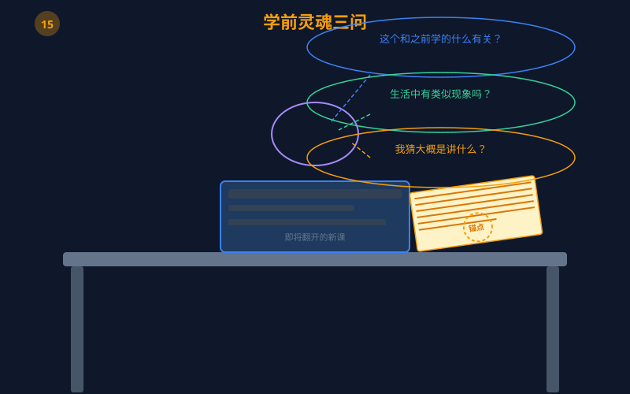
【简单方法】学前灵魂三问——激活旧知识，为新知识铺路
原理： 《人是如何学习的》把这种方法称为“先行组织者”。在学习新知识之前，先激活大脑里相关的旧知识。这就像在迎接新朋友之前，先把老朋友叫醒。新朋友来了，老朋友会主动介绍、拉关系，联结自然发生。 如果不做这一步，新知识进入大脑时，旧知识还在沉睡。等你想用的时候，它俩谁也不认识谁。 操作步骤（3步）：
- 课前翻一下目录或标题。看一眼今天要学什么内容。不需要看懂，只需要知道主题是什么。
- 问自己三个问题：
这个主题我之前学过什么相关的？（例如：学三角函数之前，回想一下直角三角形、比例、函数这些概念） 生活中有没有遇到过和这个主题相关的现象？（例如：学物理的浮力之前，想想游泳时身体变轻的感觉） 如果让我猜，这个新知识大概是讲什么的？
- 把想到的关键词写下来。就写在笔记本的角落，或者书的空白处。不用多，三五个词就够。这些词就是新知识的“锚点”。
关键原则： 想不起来也没关系。努力想的过程本身就在激活大脑的相关区域。想到了是惊喜，想不到是预热。 猜错了也没关系。猜错反而更好——错误的预测和正确答案之间的冲突，会让海马体额外标记这个知识点。 整个过程不超过3分钟。这不是预习，是“唤醒”。 如果做不到： 课前没时间 → 上课铃响的那30秒就够用。看一眼黑板上的课题，问自己一个最快的：这个和之前学的什么有关？ 完全不知道会学什么 → 翻到上一章末尾，看看最后一段。教材通常会暗示下一章的衔接内容。
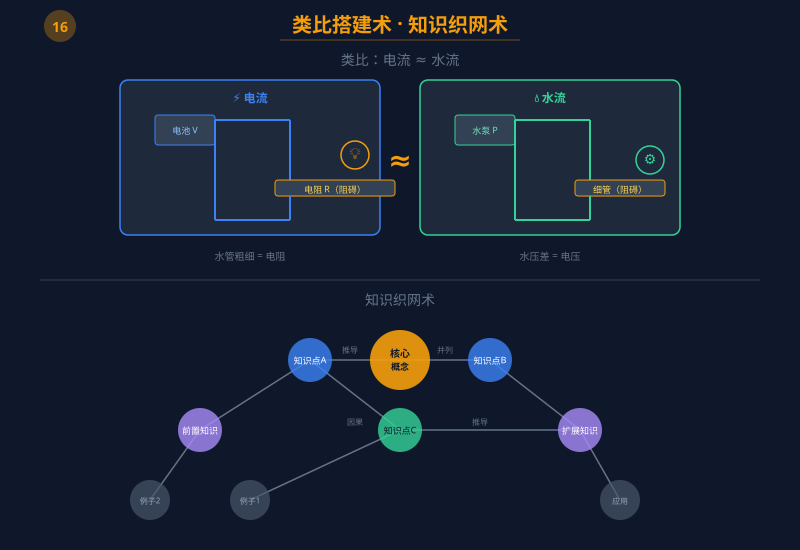
【进阶方法】类比搭建术——用熟悉的东西解释陌生的东西
原理： 类比是大脑建立联结最自然的方式。当你把新知识和一个你已经非常熟悉的事物做类比时，你是在借用旧知识的网络来承载新知识。 《刻意练习》指出，顶级高手在理解复杂概念时，都会自动寻找类比。物理学家费曼可以把任何物理概念用日常语言讲清楚，因为他能在每个抽象概念后面找到一个生活类比。 类比不需要精确。它只需要提供一个“临时框架”，让新知识先有地方挂。等你理解更深了，框架可以自动拆除，但联结已经留下了。 操作步骤（3步）：
- 学到一个新概念，问自己：这像什么？ 任何联想都行。电流像水流，电压像水压。化学平衡像跷跷板。历史朝代的更替像公司的兴衰。没有标准答案，只有“对你有用”。
- 把类比画出来或者写一句话。电流像水流：水管粗细是电阻，水压差是电压，水流大小是电流。一句话就把三个概念全挂上了。
- 找出类比的“不像之处”。这一步是进阶的关键。类比的目的是帮你起步，不是让你停在原地。电流和水流的最大不同是什么？水流需要管道，电流需要闭合回路但可以在真空中传导吗？找到不同之处，你对新概念的理解反而更深了一层。
关键原则： 类比不需要教师认可。你自己觉得好用就行，它只是一个记忆帮手。 每一个抽象概念都值得配一个类比。养成习惯，你理解新知识的速度会快一倍。 类比越个人化越好。用你喜欢的东西做类比——游戏、运动、音乐、动漫，什么都可以。 如果做不到： 死活想不出类比 → 用最万能的类比句式：“这就像……”后面接你生活中最熟悉的事。哪怕一开始很牵强，说出口之后你会自动调整。 觉得类比太幼稚 → 很多重大科学发现就是从“幼稚”的类比开始的。苹果落地和月亮绕地球，牛顿想：这俩是不是同一回事？
🃏 配套工具卡：[学前灵魂三问](cards/card_三问提示卡.svg)
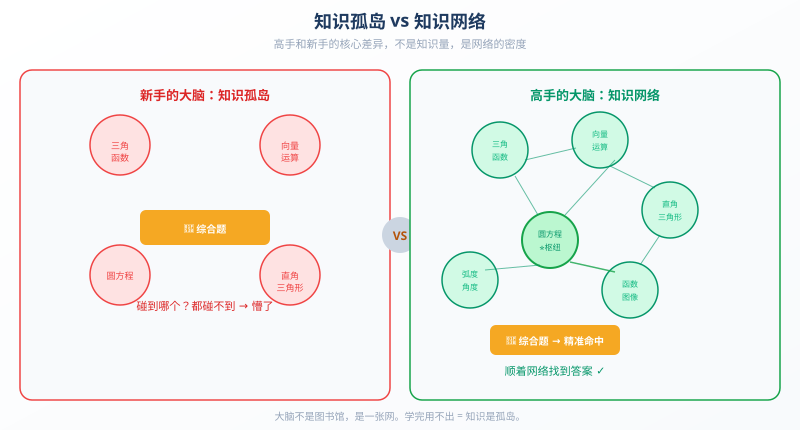
【高阶方法】知识织网术——定期把散点变成网络
原理： 联结不只是在新知识进来的时候做。学了一段时间之后，很多知识点之间其实已经有了隐性联系，但你自己没意识到。这时候需要一次主动的“织网”。 《人是如何学习的》指出，知识网络需要定期梳理，就像花园需要定期修剪。梳理的过程不仅是巩固联结，更会发现新的联结——原来这两个知识点可以互相解释！这种发现会极大提升你的理解深度。 操作步骤（4步）：
- 锁定一个主题区域。比如“这个月数学学了什么”或者“这学期的物理有哪些章节”。范围不要太小也不要太大，5-10个核心知识点最合适。
- 把知识点写在纸上，分散排开。每个知识点一个圈，圈里写关键词。先不考虑之间的关系，把所有知识点都放上去。
- 用箭头连接，并标注关系。在每一条连线上写：它们是什么关系？是因果？是并列？是一个推导出另一个？是一个是另一个的特例？关系写得越具体，网络越稳固。
- 找出“枢纽节点”。哪个知识点被连线最多？那个就是这张网络的枢纽。把枢纽节点重点标注，它就是考试中最容易被考到的知识点。
关键原则： 这张图不需要好看。它是一次性的思维工具，画完就完成了使命。 发现“原来还可以这样连”的时刻就是进步最大的时刻。这种感觉值得反复体验。 每个月做一次知识织网。频率不要太高，给联结留出发酵的时间。 如果做不到： 觉得画图太费时间 → 不用画图。拿出一张纸，写一个主题，然后用自由联想的方式写下一个相关的，再写下一个相关的。写成一串也行，不用讲究格式。 看不出知识点之间的关系 → 说明这一块是真没学懂。回到课本，看目录，看章节之间的排序逻辑，目录本身就是隐含的关系网络。
三、实践指南
本章核心方法速查表
选方法指南 如果你是“上课听懂了但做题就不知道用哪个公式”：问题出在知识是孤岛。从学前灵魂三问开始，先把新知识和旧知识挂上钩。 如果你觉得物理/数学概念太抽象、记不住：类比搭建术是你的首选武器。每个抽象概念配一个生活类比，理解速度和记忆深度同时提升。 如果你平时章节测验还行，一到综合性考试就不行：你需要知识织网术。你的知识是散装的，需要一次主动的整合。 常见误用提醒 灵魂三问不是预习。不要花时间读课文，只做激活旧知识这一件事。 类比不是解释给别人听的，是解释给你自己听的。不用追求“正确”，追求“有用”。 知识织网每个月一次足够。太频繁了网络还没形成，你画不出来。
| 方法层级 | 方法名称 | 一句话 | 适合谁 | 需要多长时间 |
|---|---|---|---|---|
| 简单 | 学前灵魂三问 | 学之前先激活旧知识 | 所有“学了就忘”的学生 | 课前3分钟 |
| 进阶 | 类比搭建术 | 用熟悉的东西解释陌生的东西 | 面对抽象概念理解困难的学生 | 每概念30秒 |
| 高阶 | 知识织网术 | 定期把散点知识连成网络 | 知识零散不会综合运用的学生 | 每月1次，每次20分钟 |
四、本章小结
- 学完用不出的根源：新知识在大脑里是孤岛，没有和旧知识连上网。
- 高手和新手的核心差异不是知识量，而是知识网络的密度。
- 学前灵魂三问：学之前问自己“这和我之前学的什么相关”，激活旧知识。
- 类比搭建术：每个抽象概念配一个生活类比，借用熟悉的网络承载新知识。
- 知识织网术：每月一次把散装知识画成网络图，找到枢纽和关系。
- 联结是理解的基础。知识连成网了，你才能做到“一通百通”。
- 网织好了，下一个问题是：你怎么知道自己真的在这张网里？下一章：建构。
第5章 建构：别说“我懂了”，讲给我听听
探索问题
Q5-1：你能用一句不超过25个字的大白话说清楚一个你今天"懂了"的复杂概念吗？
Q5-2：你希望"真正懂了"和"以为懂了"之间有一个什么样的检测标准？
Q5-3：如果你要给一个完全不懂的人讲你刚学会的东西，你会从哪里开始卡住？
Q5-4：描述一次你给同学讲题之后"自己反而更清楚了"的经历——讲的过程中发生了什么？
Q5-5：你觉得"跟着老师走一遍"和"自己拿着地图走一遍"在看到的东西上有什么不一样？
Q5-6：你理想中的"理解"长什么样——是能举出一个自己的例子，还是能回答一个刁钻的追问？
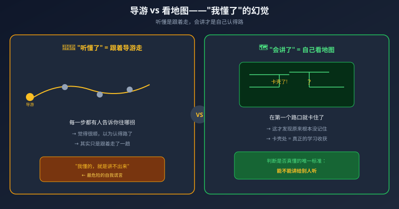
一、为什么“我懂了”是最大的幻觉
老师在讲台上讲完一道题，问：“大家都懂了吗？”台下点头一片。你也在点头。 但让你上去把这道题重新讲一遍，你发现自己讲不清楚。讲着讲着卡住了，不知道下一步为什么要这么做，不知道这个条件为什么这样用。你尴尬地笑一下：“我本来是懂的，就是讲不出来。” 这是一个谎言。而且是你对自己说的最频繁的谎言。 “我懂了”是一种主观感受，而主观感受在认知科学里有一个专门的名字——知道感。知道感是一种“我觉得我知道”的感觉。它和“我真的知道”之间，有一条巨大的鸿沟。 《认知觉醒》用一个比喻说透了这件事：听懂是跟着导游走，自己讲出来是拿着地图找路。 跟着导游走，每一步都有人告诉你往哪拐，你觉得很顺，以为认得路了。但下次自己走，第一个路口就迷路。因为你从来就没记住路，你只是跟着走了一趟。 《自我调节学习》从元认知的角度指出：很多学习者的核心问题不是不努力，而是缺乏准确判断自己是否真懂的能力。他们用“听懂”的流畅感替代了“掌握”的踏实感。每次听完课、看完书，那种“顺”的感觉让他们产生了强烈的错觉，然后就不再深入了。直到考试，才发现自己什么都不记得。 真相是：判断是否真懂，只有一个标准——你能不能清楚地讲给别人听。 这就是费曼学习法的底层逻辑。诺贝尔物理学奖得主理查德·费曼说过一句被误传为“费曼学习法”的名言：如果你不能简单地解释一个东西，那说明你没有真正理解它。 这个方法后来被认知科学反复验证，成为公认的最高效的学习方法之一：讲给别人听的过程中，你必须把知识重新组织，填补所有模糊地带，发现所有逻辑裂缝。这个过程不是在“输出你已会的”，而是在“发现你不会的”。
二、怎么真正弄懂一个知识
下面三个方法，把“讲给别人听”这件事变成了一个你可以自己操作的学习系统。不需要真的有听众，你需要的是“讲”这个动作本身带来的认知重构。
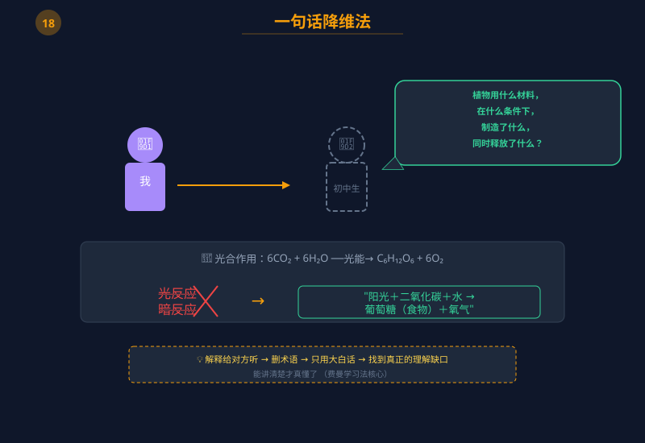
【简单方法】一句话降维法——用最简单的语言解释
原理： 你之所以觉得“讲不出来”，是因为你在大脑里用的是原文、术语、抽象概念来存储知识。这些东西看起来很专业，但它们是压缩包——你没解压。 费曼学习法的核心就是解压：把专业术语翻译成日常语言，把复杂结构拆成简单步骤。能用大白话讲出来，说明你真的吃透了。讲不出来，卡住的地方就是你理解最薄弱的地方。 操作步骤（4步）：
- 选一个今天学到的知识点。 可以是物理公式、历史事件、化学概念、地理规律。最好是那种你觉得“懂了但说不清楚”的内容。
- 假装对面有一个完全不懂的初中生。 想象一个具体的对象：你的邻居小孩、你的表弟表妹。你只能用最简单的话解释，不能用术语。如果非要用术语，必须先解释这个术语是什么意思。
- 用一两句话说清楚这个知识点的核心。 比如“光合作用”：植物用什么材料，在什么条件下，制造了什么，同时释放了什么。说给初中生听，不要出现“光反应”“暗反应”这些词。
- 遇到卡壳，标记下来，回头看书。 讲到某个地方讲不下去了，这就是你真正没懂的地方。以前你以为自己懂了，是书上的解释给了你懂了的错觉。现在你知道漏洞在哪里了。
关键原则： 不能用“这个是……那个是……”这种下定义的方式。必须用“这就像……”或者“举个例子……”来重新解释。 卡壳是好事不是坏事。卡壳就是你今天真正的学习收获。把卡壳的地方记下来，就是最好的复习笔记。 不需要每次都完整讲一遍。同一个知识领域，挑最核心的概念用一句话解释。 如果做不到： 对着“想象中的初中生”没感觉 → 拿手机录音，假装在录一个短视频。或者真的录，录完自己听，说不通的地方立刻能听出来。 一句话说不清楚 → 试试用这个句式：“_____就是_____在_____条件下发生的_____。”填空式表述能迅速暴露你到底缺了哪块信息。
【进阶方法】讲课式复习——用“当老师”来复习
原理： 《自我调节学习》指出，同学之间互相讲解是最有效的复习方式之一。当你准备给同学讲一道题时，你的大脑会自动切换到“教师模式”：不仅要解出来，还要把每一步的为什么讲清楚，还要预判同学可能会哪里听不懂，还要准备例句和反例。 这个准备过程，比你一个人刷五道同类题的效果还要强。而且讲完之后，听的人提问，会进一步暴露你之前没想到的盲区。 操作步骤（4步）：
- 找一个人组成学习对子。 不需要多，一个人就够。两人轮流当老师和学生。今天你讲数学，对方讲英语。或者两个人讲同一科，互相补充。
- 讲之前你先准备5分钟。 不是翻书复习，是准备“怎么讲”。把要讲的内容用大白话理一遍逻辑：先讲什么，再讲什么，哪里需要举例，哪里最容易听不懂。
- 正式讲。 不能看书。用一张白纸当黑板，边写关键词边讲。对方可以随时打断提问：“这一步为什么？”“这里我没懂，能换个例子吗？”
- 讲完之后互相补充。 听的人说哪里讲得清楚，哪里没听懂。讲的人说哪里自己讲的时候心虚，哪些是临时想出来的，哪些其实也不确定。两个人的笔记合在一起，就是一份最佳复习资料。
关键原则： 不能看书讲。一翻书就回到识别模式，讲课的效果归零。 对方一定要提问。不问问题的听众等于没听，问了问题两个人一起学到。 相互讲解的频率：一周至少一次。一次讲1-2个主题，时间控制在20-30分钟。 如果做不到： 找不到人讲 → 对着镜子讲，或者对着一个布娃娃讲。虽然没人提问，但说话的动作本身就在强迫你组织语言。或者尝试对着语音备忘录讲，讲完自己听。 两个人水平差不多，怕讲错 → 没有完美的讲解，只有越来越清晰的讲解。敢讲、敢错、敢被纠正，这个过程本身就在加深理解。
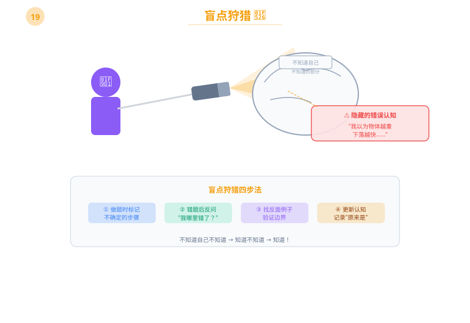
【高阶方法】盲点狩猎——主动寻找“我错以为我会了”的东西
原理： 这是最狠的一招。前面的方法是在你“有感觉”不会的时候用，但这个方法的对象是你“完全没感觉”的东西——那些你一直以为自己对、但实际上错得离谱的知识点。 《认知觉醒》提到一个残酷的事实：我们在自己不知道的地方是不会产生疑问的。 你以为自己知道地球绕着太阳转的轨道是圆的，直到物理老师告诉你其实是椭圆的。你之前从来不会怀疑“圆”这个认知，所以你从来不会去问“轨道到底是圆的还是椭圆的”。这种“不知道自己不知道”的区域，就是盲点。 盲点不会自动暴露，你必须主动带着一个问题去“狩猎”。 操作步骤（4步）：
- 用“重读找茬法”对待你最有自信的章节。 挑一个你觉得自己学得不错、考试也不怎么丢分的章节。这种章节最容易藏盲点——因为“不错”让你放松了警惕。
- 找至少三个非标准问题来测试自己。 标准问题是课本后面的练习题，你已经刷得会背了。非标准问题是：这个公式为什么是这样推导的？如果不满足某个条件，这个结论还成立吗？反过来对吗？这个概念和那个概念有什么区别？三个问题，自己回答。
- 找一份非自己老师的讲法来对照。 去网上搜同一个知识点的另一个老师讲的视频，或者找一本不同版本的教材看同一段。同一个知识，不同的表述方式可能会暴露出你“一直用惯性理解、从未深入思考”的东西。
- 把找到的盲点记在专门的“盲点本”上。 不是错题本，是盲点本。格式是：我以为_____，但实际应该是_____。每次考前的最后一件事，就是翻一遍盲点本。这些是你各种模拟考都考不出来、只有换一个角度才能暴露的问题。
关键原则： 盲点狩猎不用频繁，每个月一次就够。每次针对自己最自信的1-2个章节。 发现盲点是巨大的进步，不要觉得“完了我之前都白学了”。能发现说明你已经到了一个新层次。 盲点本越薄越好，但永远保留。学无止境，总会有新的盲点。 如果做不到： 找不到非标准问题 → 用一个万能问题格式：“为什么____，而不是____？”把正确答案放在“为什么”后面，把你猜测的一个错误答案放在“而不是”后面。自己回答。 觉得找不同老师讲法太费时间 → 找同学或者AI工具。问同一个问题，看对方怎么解释。和别人解释不一样的表述，就是盲点的藏身处。
三、实践指南
本章核心方法速查表
选方法指南 如果你刚发现“原来我以前一直在用‘感觉懂了’骗自己”：从一句话降维法开始。今天学的一个概念，用大白话说一遍，录下来自己听。 如果你复习时总觉得“没什么可复习的，都懂了”：用讲课式复习。给同学讲一遍，你会发现原来这么多地方需要重新学。 如果你成绩稳定但始终无法突破前几名：你需要盲点狩猎。你的盲区已经不是基础题了，而是那些你“根本不知道还存在”的深层理解。 常见误用提醒 一句话降维法不是背定义。定义是术语堆术语，降维是用日常语言讲本质。 讲课式复习不能照着书讲。照着书讲是朗读，不是讲解。 盲点狩猎不是找题做。找题是把已经暴露的漏洞补上，盲点狩猎是把自己从未暴露的漏洞揪出来。
| 方法层级 | 方法名称 | 一句话 | 适合谁 | 需要多长时间 |
|---|---|---|---|---|
| 简单 | 一句话降维法 | 用大白话讲清楚一个概念 | 觉得“懂但讲不出来”的学生 | 每概念1-2分钟 |
| 进阶 | 讲课式复习 | 和同学互相当老师 | 想深化理解练综合运用的学生 | 每周1次，20-30分钟 |
| 高阶 | 盲点狩猎 | 主动寻找“不知道自己不知道”的区域 | 成绩不错但突破不了瓶颈的学生 | 每月1次，每次30分钟 |
四、本章小结
- “我懂了”是最危险的学习幻觉。听懂是跟着走，会讲才是自己认得路。
- 知道感不等于掌握。你需要的不是“感觉会了”，是“证明会了”。
- 一句话降维法：假装讲给初中生听，用白话解释专业概念。卡壳处就是盲区。
- 讲课式复习：找同学互相讲，讲的人收获比听的人大。
- 盲点狩猎：每月一次，主动找那些你“不知道自己不知道”的地方。
- 学习的目标不是“我感觉会了”，而是“我能讲出来”。讲出来的才是你的。
- 知识吃透了，下一步是提高处理速度。下一章：组块。
第6章 组块：东西一多脑子就转不动怎么办？
探索问题
Q6-1：你希望一节课40分钟的信息量在你脑子里最终变成几个"大包裹"？
Q6-2：如果把你的工作记忆想象成一张四个格子的桌子，现在什么东西占着最多的格子？
Q6-3：你觉得拆成"139-1234-5678"的号码和一口气记"13912345678"——大脑里发生了什么变化？
Q6-4：你能用一个例子描述"打包前"和"打包后"你的大脑负担差了多少吗？
Q6-5：你理想中一个单元学完后，脑子里剩下的应该是一张清单还是一张图？它应该多大？
Q6-6：描述一次你"脑子转不动"的瞬间——那时候桌面上堆了哪些东西、哪些是可以先收起来的？
一、为什么脑子会"转不动"
上课老师讲得飞快，你还在消化第三句话的意思，老师已经讲到第五句了。你越来越跟不上，后半节课基本在发呆。 做综合题，题干一大堆条件，你读了三遍还没搞清楚它们在说什么。好不容易开始列式子，后面又有新条件，前面的已经忘了。 考试看文章，读到第三段，前面两段的内容已经模糊。你只能倒回去重读，时间就这样耗没了。 你怀疑自己是不是不够聪明，为什么别人好像能跟上、能记住，而你脑子总是"转不动"。 这不是你不够聪明。这是你的工作记忆容量不够用了。 《为什么学生不喜欢上学》用一个精确的概念解释了这个现象：工作记忆。工作记忆是你大脑的"临时工作台"，所有新进来的信息都在这个台面上被处理、思考、整合。问题是，这个台面非常小。认知心理学的研究表明，人类的工作记忆平均只能同时容纳4个左右的信息单元。 老师讲话速度是每分钟150个字，你听到的是一个个词汇、句子的语法结构、内容的意思，还有你正在形成的理解和问题——所有这些都在抢同一个工作台面。台面满了，后面的信息就进不来。在旁观者看来，你就是"走神了"。 同样，一道物理大题，有重力、有摩擦力、有斜面角度、有绳子拉力、物体的质量、加速度，还有需要求的未知量。每一个条件都是一个信息单元。四个单元的工作台面，同时处理七八个单元的信息，你的大脑必然处于"颠三倒四、丢三落四"的状态。 《认知天性》提出，摆脱这种困境的唯一办法，就是组块化。把一个复杂的、包含多个信息单元的内容，通过学习和练习，打包成一个更大的信息单元。这样，原本占满你整个工作台面的东西，现在只占一个位置。 就像背电话号码。13912345678是11个数字，占11个信息单元。但如果拆成139-1234-5678三个组块，就只占3个信息单元。你的工作台面瞬间就空出了大量空间。组块化之后，你才能用空出来的脑力去想"这道题的本质是什么"，而不是一直在费力地记住每一个数字。
二、怎么给大脑"扩容"
下面三个方法，帮你把零散的信息打包成可以一口吞的组块。这不是记忆技巧，是思考效率的根本提升。
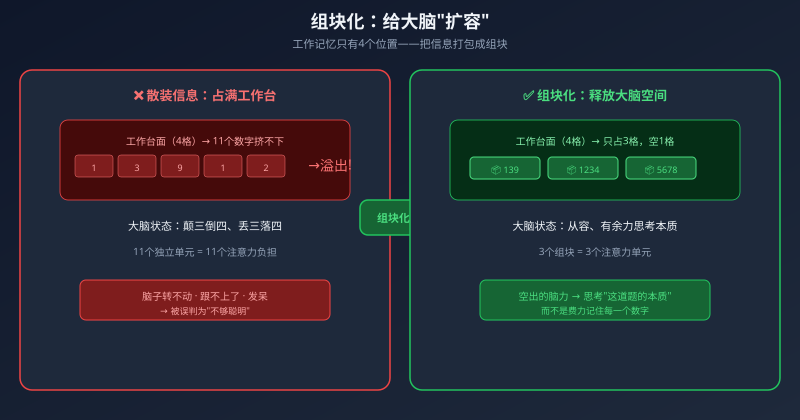
【简单方法】三句总结法——把一节课的信息压缩成三个组块
原理： 《为什么学生不喜欢上学》指出，组块化的第一步是提取核心信息流。信息进来的时候是细碎的，你要主动把它们收拢成几个大的单元。 一节课40分钟，老师讲的点可能有几十个。如果你试图记住所有点，你的大脑就会在一个一个点之间疲于奔命。但如果你在听的过程中主动追问"这节课到底讲了哪几个大块"，你就能把这些点分别装进几个大口袋里。 操作步骤（4步）：
- 上课时在笔记角落标记大块切换点。 当老师从一个主题转向另一个主题时，在笔记上画一条明显的分隔线。一节典型的课大概会有3-5个大块。
- 下课后不急着冲出教室。 花1分钟，合上笔记，在心里把刚才那几大块的内容用三句话概括出来。不是三个要点，是三句话。每句话概括一个块。比如："第一大块讲了自由落体运动的定义和条件，第二大块推导了一个公式，第三大块做了两道例题。"
- 把这三句话写在笔记最上方。 这是你这份笔记的"组块索引"。以后复习，先看这三句话，回忆每个块里面的内容。而不是从头到尾翻笔记。
- 复习时先看三句话索引。 看看能不能凭这三句话，把每一块的具体内容在脑子里展开。展开不了的，再翻笔记看细节。
关键原则： 一定是三句话，不能多。强迫自己合并，哪怕你觉得有些东西单独值得一句话。合并的过程就是组块化的过程。 每句话不超过30个字。20个字更好。字数限制倒逼你提炼核心。 允许自己概括得不精确。组块不是让你丢失细节，是给你一个快速调取细节的入口。 如果做不到： 下课时什么都想不起来 → 不要合上笔记。看着笔记的最简略的关键词，把每个关键词扩展成一句话。先看着做，习惯了再合书。 觉得老师讲得太散找不到大块 → 看教材目录。一般一节课的内容就是教材的1-2个小节。教材已经帮你分好块了。
【进阶方法】思维导图降维法——把一本书的逻辑装进一张图
原理： 组块不只是在一个课时内有用，在更大的知识面上——比如一个单元、一本书——更需要组块。如果一个单元学了两个月，学了十几课时，你的大脑里是散落的十几堆信息。复习起来就像面对一个堆满杂物的房间，根本不知道从哪里下手。 《认知天性》建议用视觉化工具来建立大型组块。思维导图是其中最简单的一种。把一单元的信息画在一张图上，核心概念在中间，相关概念在周围，关系用连线表示。这张图本身就是一个超级组块——复习时不是复习十几个知识点，而是复习一张图。 操作步骤（4步）：
- 锁定范围。 一章或一个单元。拿出课本目录和这期间的笔记。
- 确定中心枢纽。 这一章最核心、被其他概念引用最多的那个概念是什么？把它写在纸中间。如果找不到，看章节标题，把标题变成一个问题，回答问题的那句话就是中心。
- 把子概念分散在周围，用关键词而非句子。 每个子概念不超过四个字。你要的不是详细的笔记，是触发记忆的钩子。
- 用线条连接，标注关系。 线条旁边写一个字：= 表示等同，→ 表示推导，? 表示相互作用。线条本身就在告诉你知识之间的关系。以后看到这张图，关系一目了然。
关键原则： 这张图必须在合书的情况下画才能起到组块作用。翻书抄的概念不叫组块，叫笔记搬家。 第一次画不全没关系。你想不起来的那些节点，就是你最需要加强的地方。用红笔补上。 画完收好。考前再看一眼，一张图激活整章内容。 如果做不到： 觉得画图太花时间 → 不做任何美学要求。不在网上找模板，不追求色彩搭配，不画小图标。纯文字+线条，5分钟搞定。你不是交作业，是给自己做组块。 手残完全不会画 → 列表式组块也行。中心概念写在最上面，下面缩进写子概念，再缩进写更细的内容。层级就是关系。
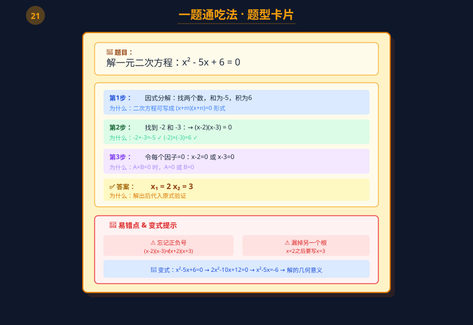
【高阶方法】一题通吃法——用一个典型例题打包一个题型的全部解法
原理： 这一步把组块思想推向极致：为一个题型建立一个综合的心理表征，用一道典型题打包所有相关知识点和解题策略。 《刻意练习》描述专家高手时提到，专家的长时记忆中储存着大量精心组织的"问题模式"。看到一个题目，他们不是从零开始分析，而是直接匹配到已有的问题模式上。这些模式就是超级组块——一个组块包含题型特征、解题步骤、常见变式、易错点。 高手在做题，是在不断丰富和完善这些模式组块。普通学生在做题，是在不断重复同一道题的具体计算过程。两种方式的效率差距是数量级的。 这个方法不限于理科。理科的"一题通吃"是解题模板，文科的"一题通吃"是答题框架。本质完全相同：用一个典型，打包一个类型的全部逻辑。 操作步骤（4步）：
- 找一个"典型"。理科找本章综合性最强、覆盖知识点最多的那道题（通常是章末综合例题）；文科找涵盖最多评分要点的那道主观题（通常是大题真题的标准答案最丰富的那一道）。选典型的标准就一个：做透这一道，这一类就全会了。
- 深度解剖这道典型。不只是"把答案写出来"，而是拆出它的骨架。
理科做法——在解题旁边添加三层注释： · 每一行旁边写这一步的依据（用了哪个定理/公式/思路） · 标注岔路口：哪一步有容易出错的地方（标红色警戒线） · 标出题目可能的变式：如果把某个条件改了，哪一步会有变化 文科做法——拆出答题骨架： · 把标准答案拆成几个固定模块（比如历史评价题拆成：背景→内容→积极影响→局限性→历史定位） · 标注每个模块的得分要点（这个模块通常占几分？踩分点是什么？） · 标出通用套话和可变内容的边界（哪些话每道题都能用，哪些必须结合具体事件填充）
- 把解剖结果整理成一张"题型卡片"。半张A4纸大小。理科卡片上面是题目，中间是分步精解+注释，下面是易错警告和变式提示。文科卡片上面是题目，中间是答题骨架（模块清单+每模块的踩分点），下面是通用句式模板。这张卡片就是这个题型的"超级组块"。
- 每次复习这个题型，只看这张卡片。不看课本，不看练习册。通过这一道题，回忆这一类型所有题的做法。理科用它做同类变式训练；文科用它自动生成新题答案——每学一个新事件/新变法，直接把内容填进骨架。一个组块覆盖一类题，你的复习效率是别人的三倍。
理科示例：数学"二次函数最值问题"一题通吃 选一道典型题："求 y=x²-4x+3 在区间[1,4]上的最大值和最小值" 拆出解题骨架：①确定对称轴位置 → ②判断对称轴是否在区间内 → ③计算端点和对称轴处的函数值 → ④比较取最值 变式覆盖：区间变、系数变、开口方向变——骨架不变，只换填入的数字 这个骨架可以套用到所有"给定区间求二次函数最值"的题目 文科示例：历史"评价类主观题"一题通吃 选一道典型题："评价商鞅变法的影响" 拆出答题骨架：①背景（为什么变：旧制度崩溃/社会矛盾激化/统治者需要） → ②内容（变了什么：核心措施分点概括） → ③积极影响（对当时/对后世分别有哪些推动作用） → ④局限性（阶级局限/时代局限/未能解决的问题） → ⑤历史定位（承前启后的节点/某种转型的标志） 这个骨架可以套用到所有"评价类"历史题：评价王安石变法、评价北魏孝文帝改革、评价洋务运动、评价罗斯福新政——骨架不变，只换填入的具体史实 以后每学一个新变法/新事件，就用这个骨架自动生成答案。答题不再是"想起什么写什么"，而是"按骨架往里填" 关键原则： 一类题只做一张卡片。后面做到的同类题，只把新的变式或新的易错点追加到卡片上，不再单独记录。 骨架比内容重要。理科的骨架是解题步骤的固定顺序，文科的骨架是答题模块的固定结构。骨架对了，答案不会偏；骨架漏了，一定丢分。 卡片积累到一定数量后，它们就是你专属的"超级题库"。理科生大考前翻卡片，一道题唤醒一个题型；文科生大考前翻卡片，一个骨架覆盖一片考点。 理科选"综合性最强"的题做模板——一道题里包含的变式越多越好。 文科选"涵盖最多评分要点"的题做框架——标准答案踩分点越全越好。 如果做不到： 找不到哪道题算"最典型的" → 理科看课本章末综合例题，目录上的例题就是学科专家认为最典型的题；文科找历年真题里标准答案最厚的那一道，答案越长骨架越完整。 注释/骨架写不出来 → 理科找一个"做过这类题"的人（同学、老师、搜题APP），问："这道题最容易错的是哪一步？"文科直接对标高考真题的评分标准（参考答案里的"评分说明"），把踩分点倒推成骨架模块。
【升阶诱饵】 你已经学会了记忆、提取、自动化、联结、建构、组块。知识已经进入你的大脑，并且被整理得井井有条。 但为什么考试时，看到一道新题还是懵？为什么平时练过的题，换一个考法就不认识了？ 下一章，我们进入应用环节的第一个核心难题：迁移。学过的知识，到底怎么用到新题目上去？ 翻到第7章：迁移——换个题型为什么就不会？
三、实践指南
本章核心方法速查表
选方法指南 如果你上课时经常听了后面忘前面：用三句总结法。每节课后强行提炼三句话，逼大脑在课后立刻把信息组块化。 如果你复习时面对一堆笔记无从下手：用思维导图降维法。一张图代替一本笔记，考前只看图。 如果你刷了很多题但成绩卡在某个分数再也没涨：你需要一题通吃法。问题不在题量，在于每一类题你没有形成自己的解题模式组块。理科生用"解题模板"，文科生用"答题框架"。 常见误用提醒 三句总结不要写成三段笔记。是三句话，不是三件事。每句话概括一块内容，而不是列出那块的三个点。 思维导图不要追求好看。这不是给别人看的，是给你大脑减负用的。潦草到只有你自己能看懂就够。 一题通吃法的卡片不能太多。每张卡片管一类题，一类题一张卡。十张卡片管十类题，不是十道题。文科的答题骨架也一样——一个题型一个骨架，不要为每一个具体事件单独做卡。
| 方法层级 | 方法名称 | 一句话 | 适合谁 | 需要多长时间 |
|---|---|---|---|---|
| 简单 | 三句总结法 | 一节课后概括成三句话 | 上课跟不上的学生 | 课后1分钟 |
| 进阶 | 思维导图降维法 | 一章画一张逻辑图 | 复习时感觉知识点散乱的学生 | 每章15-20分钟 |
| 高阶 | 一题通吃法 | 一道典型题打包一类题型（理科）/一个答题框架覆盖一片考点（文科） | 刷了很多题成绩不涨的学生 | 每题型30分钟整理，之后每类题5分钟复习 |
四、本章小结
- 脑子"转不动"不是笨，是工作记忆过载。工作记忆只能同时处理约4个信息单元。
- 组块化是把多个信息单元打包成一个单元，释放大脑空间。
- 三句总结法：每节课后概括成三句话，形成课后信息组块。
- 思维导图降维法：一章画一张逻辑图，一章只占一个视觉组块。
- 一题通吃法：理科用一道典型题打包一类题型的完整解题模板；文科用一个典型题拆出答题骨架，覆盖所有同类主观题。
- 学习的效率不在处理信息的速度，而在管理信息的能力。
- 知识存好了，接下来是"用出去"的问题。下一章：迁移。
第7章 迁移：换个题型为什么就不会
探索问题
Q7-1：你希望看到一道没见过的题时，第一反应从"这题我没做过"变成什么？
Q7-2：你觉得一道题在你眼里的"第一印象"和它的"深层结构"之间隔着什么？
Q7-3：用你自己的话重新描述一道你做对了的题——把题干里所有的术语都换成日常说法之后，它还剩下什么？
Q7-4：你认识的那些"什么题都能做"的人，你觉得他们拿到一道新题时脑子里先做了什么？
Q7-5：如果把"这道题让我想到哪道做过的题"变成你解题前的标准动作，你觉得会改变什么？
Q7-6：你理想中的解题过程是什么顺序——先动手还是先理解、先套公式还是先找结构？
一、为什么会"讲过就会，变个样就蒙"
上课时老师讲的例题你都懂。每一步、每一个公式、每一次推导，你看着都觉得顺。 回家做作业，第一题和例题几乎一样，你按老师的步骤做出来了。第二题换了个说法、换了组数字，你就卡住了。你翻回例题看，发现"好像不一样啊"——条件不完全一样，问题不完全一样，题型分类好像也不在同一个框里。 你最后的结论是：这道题我没见过。 但考试不可能只考你见过的题。考的是"用你学过的东西，解你没见过的题"。这个能力，心理学上叫作迁移。 《怎样解题》是数学家波利亚写的一本面向所有人的解题宝典。他在书的开头就指出了一个残酷的事实：老师在课堂上呈现的题目，是经过精心处理、符合今天所教公式的"样板题"。学生做这样的题，只需要匹配今天学的公式。但真实世界的题目不会自报家门。试卷上的题，是在考察你能不能透过表面特征，识别出它的深层结构。 《思考，快与慢》从认知机制上解释了这个困难：大脑有两个系统。系统1快速、自动、凭经验。看到一道题，系统1会立刻跳出来："这个字眼我见过！这是上周那类题！"然后你就按上周的方法去做。但题目换了个条件，上周的方法行不通。这时候你需要系统2出场——慢、需要努力、用来分析深层结构。问题是，系统2很懒。大多数时候，我们让系统1做了所有决定，然后发现错得离谱。 迁移失败的本质是：你被题目的表面特征绑架了，没有看到它和你学过的知识之间的深层联系。
二、怎么才能"换个题型也会"
迁移能力不是天生的，是练出来的。练的方法不是做更多题，而是改变你做每一道题的方式。
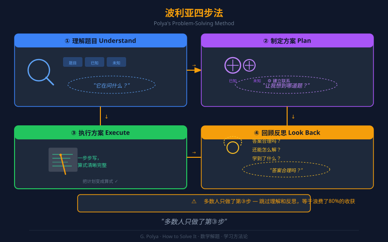
【简单方法】波利亚四步法——源自《怎样解题》，是所有解题方法的元方法
原理： 波利亚在《怎样解题》中提出，所有解题过程可以归纳为四步。这不是某一科的技巧，而是人类解决问题的通用框架： ①理解题目：你真正看懂题目在问什么了吗？用自己的话复述一遍 ②制定方案：在已知和未知之间找一条路。这道题让你想到哪道做过的题？ ③执行方案：一步步推到底 ④回顾反思：答案合理吗？能用另一种方法验证吗？这道题让你学到了什么？ 波利亚四步之所以是"元方法"，因为它提炼了一切解题方法的共同骨架。无论你用的是题目翻译法还是反向找茬法，本质上都是在强化这四步中的某一步或某几步。 操作步骤（4步）：
- 理解：读题后合上书，用一句话说出"这道题在问我什么"。说不出来就是没看懂。
- 连接：问自己"这道题让我想到哪道做过的题"，把新旧题连起来。找不到原型就想"这道题和我熟悉的东西有什么相似之处"。
- 执行：列步骤，不跳步。写一步检查一步，每一步都问"这一步的依据是什么"。
- 回顾：做完后花30秒问"这道题的本质是什么？下次遇到类似的我该怎么想？"。把这道题的关键洞察用一句话写下来。
关键原则： 多数人只做了第3步——拿到题就做。前两步（理解+连接）才是区分会不会迁移的关键。 波利亚说："解题是一种实践技能，就像游泳一样。你可以通过模仿和练习学会它。" 四步不是做完一步扔一步——在"执行"中卡住了，常常是因为"理解"没到位或"连接"找错了。 如果做不到： 只能做第3步，前两步不知从何下手 → 先只练第1步：不准动笔，不准说"这道题用什么公式"，只能说"这道题问了我一个什么问题"。练一周，再加入第2步。 连接时脑子里一片空白，想不起任何做过的题 → 翻回课本例题看一眼，不看作法只看题目，问自己"这像不像我刚做的那道？"像在哪里？不像在哪里？对比本身就是连接。
【进阶方法】题目翻译法——把每道题翻译成"自己的话"
原理： 《怎样解题》的第一步永远是："你必须理解题目。"理解题目不是把题目读一遍，而是用自己的话重新表述一遍。这个翻译过程会剥掉题目的表面特征，暴露出它真正在问什么。 很多学生读完题立刻开始套公式，因为他们被题目里的关键词（"相遇""速度""距离"）直接触发了某个储存的题型。但如果你先强迫自己翻译一遍，你会发现：原来这道"追及问题"实际上是一个一元一次方程问题；原来这道"化学计算"其实就是一道比例问题。 操作步骤（4步）：
- 遮住题目的具体数字，用自己的话复述题目的核心任务。 不念题干，说出来："这道题给了我一些条件，让我求一个东西。条件A和条件B是什么关系，要求的东西和它们又是什么关系。"
- 把数字重新填回去，看看自己刚才的描述对不对。 有时候你翻译完之后会发现，某个条件根本不是你以为的那样。
- 用最简单的称呼重新命名题目要素。 比如一道物理题："一个质量为m的物体在倾角为θ的斜面上……"你翻译成："一个东西在斜坡上。"把m、θ这些符号先剥离掉。等你看清了结构，再放回去。
- 把每一句题干预用"问题"的形式重写。 哪句话是已知条件？哪句话是限制条件？哪句话是要求的东西？用问号标出你要回答的那个问题。很多时候，学生做错题是因为他们一直在解一个自己以为的问题，而不是题干里真正写着的那个问题。
关键原则： 翻译时不许用原题里的名词，必须换一个说法。 翻译完再看一遍原题，检查是否有理解偏差。 复杂题目可能需要翻译两遍。 如果做不到： 翻译不出来，不知道从何说起 → 只做一步：把问题句抄下来，然后把它变成疑问句。原题："求滑块到达斜面底端时的速度。"改成："滑块到斜面底下的时候有多快？" 一翻译就发现原题就没读懂 → 这就是问题的根源。回去看课本，看这道题所涉及的基本概念。翻译不出来说明基础概念不牢固，不是迁移的问题。
🃏 配套工具卡：[波利亚四步法](cards/card_波利亚四步.svg)
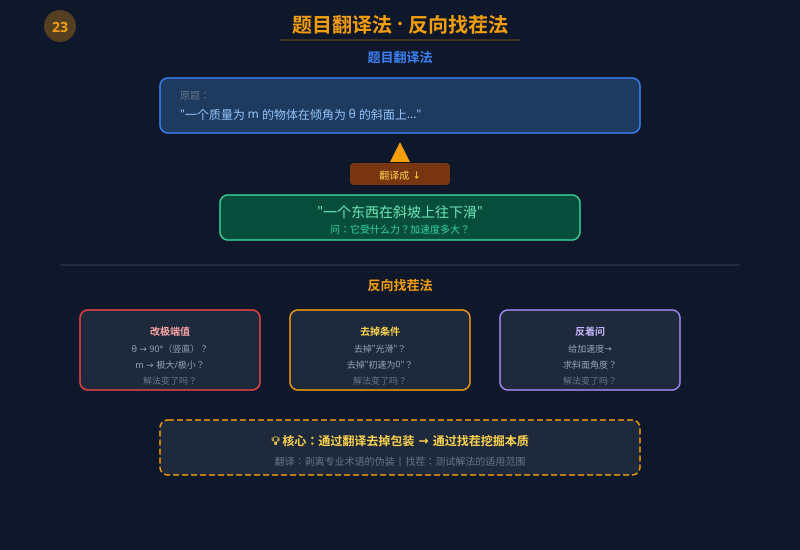
【高阶方法一】反向找茬法——给题目"换零件"，看解法怎么变
原理： 做会一道题只是起步。要想获得迁移能力，你必须知道这道题中哪些条件是核心、哪些是包装、变了哪个条件解法就要变。这就像你买了一辆自行车，想学会修车的最好方法是拆了再装一遍。 《怎样解题》反复强调"回顾"这一步骤——不是对答案，而是"回头看"整个解题过程。波利亚说，做完一道好题后花几分钟回顾，比再做十道新题收获还大。回顾时最核心的动作就是：改变题目中的某个要素，看看会发生什么。 操作步骤（4步）：
- 做完一道题，对完答案确认正确之后，先不要收工。
- 一个一个改变条件，每次只变一个。 比如：
把已知量变成未知量，把未知量变成已知量（反过来问） 把数字换一个值（原来速度是5，换成10） 把一个条件去掉（如果去掉"匀速"，这道题还能做吗？） 把条件关系换一下（原来A比B多3，改成A是B的3倍）
- 预测这个变化会不会改变解法。 如果能预测对，说明你理解了这个条件在题目中的作用。预测错了？说明你对某个条件的作用有误解，这就是你迁移能力的漏洞。
- 至少改变两次。 一次改变数字，一次改变关系。两次预测都对了，这道题才真正属于你。
关键原则： 只对"好题"做这个。好题是指你做的时候费了一点脑筋的题，不是那种看一眼就会的基础题。 改变不是真的做一遍，是头脑实验。思考"如果这样改，我还会做吗"，思考的时间就足够锻炼迁移能力了。 重点改变那些你"不确定改完自己还会不会"的条件。你最不确定的地方，就是迁移最容易断裂的地方。 如果做不到： 不知道从哪里开始改变 → 从最简单、最可见的改变开始：把数字换成0或1。极端值最容易暴露题目结构。 改变之后预测不出 → 回去看这道题的解答过程中，这一步用的是哪个条件。如果用的是你改掉的那个条件，那解法肯定要变。如果没用到，那改了也不影响。
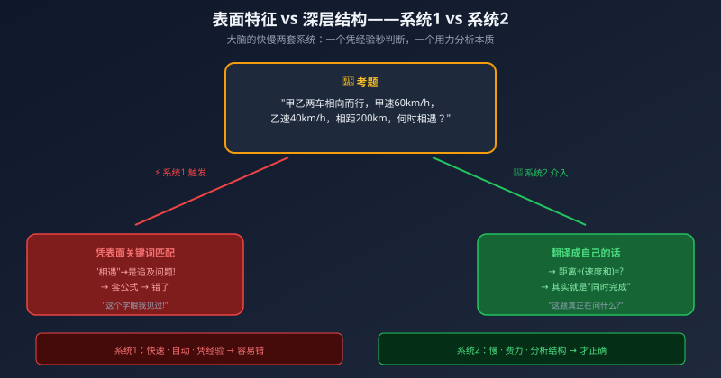
【高阶方法二】交叉类比——把相似结构的不同题型放在一起比较
原理： 这是训练远迁移能力的最强手段。近迁移是同一个知识点换一件外衣，远迁移是不同知识点之间底层逻辑的互用。 《思考，快与慢》提到，真正深刻的学习者能够识别出表面上毫不相关的问题之间共同的深层结构。物理的楞次定律和化学的勒夏特列原理，描述的都是"系统倾向于抵抗变化"这种结构。如果你能看到这一层，你的知识就彻底活了。 但这一层不是自动产生的，需要你主动把不同科目、不同章节的题目放在一起做比较。 操作步骤（4步）：
- 收集三五道你做过的、来自完全不同章节、但你都觉得"有那么点相似"的题。 "相似"可以是解题思路相似、结构相似、陷阱相似、甚至你对它们的感觉相似。任何"相似"都可以。
- 把它们分别的关键步骤列出来，并列横排。 每道题一行，步骤写关键操作："设未知数""列方程""代入消元""检验根"等。
- 找这些步骤的共同模式。 是不是都有一个"假设未知"的步骤？是不是都有一个"选择一个核心公式"的步骤？用不同颜色的笔，把相同模式跨题目连起来。
- 给这个模式起一个名字。 比如"方程建模模式"、"最优选择模式"、"假设-检验模式"。这个名字就是你跨领域的思维工具。下次碰到全新的题目，先不看它是什么题型，只看它符不符合你已有的某个模式。
关键原则： 题目来源不限学科。数学题和物理题可以放在一起比较。许多伟大的科学发现就是把一个领域的思维模式迁移到另一个领域。 起名要简短，最好不超过五个字。名字是你调用这个模式的快捷键。 每次发现一个新的跨题型模式，就加到你的个人"思维工具箱"清单里。考前看一眼，提醒自己不要被表面题型困住。 如果做不到： 找不到"相似"的题 → 降低门槛：只要是"多步计算题"就算相似。第一步都是识别条件，第二步都是选公式，第三步都是计算。结构已经相似了。 列步骤列不出来 → 只问一个问题：这道题最关键的一步决策是什么？把决策写在卡片上，把不同题目的卡片混在一起，找出决策相同的卡片。
三、实践指南
本章核心方法速查表
选方法指南 如果你拿到题就埋头做、做完就扔，从来不知道自己为什么会卡住：从波利亚四步法开始。先养成"理解—连接—执行—回顾"的完整解题习惯。前两步是刀刃，后两步是磨刀。 如果你经常"老师讲的时候懂了，自己做的时候不知道该用哪个公式"：进阶到题目翻译法。你被题干的"关键词"误导了，需要翻译成自己的话看清本质。 如果你平时作业正确率高，一考试就"好多题没见过"：你需要反向找茬法。你对题目的理解还停留在"这道题这么做"的阶段，没有上升到"这类题的条件变了该怎么应对"。 如果你单科成绩不错，但遇到跨章节甚至跨学科的综合题就束手无策：交叉类比是你最需要的。你缺少的是把知识打成一片的能力。 常见误用提醒 波利亚四步法不等于把解题拖慢。前两步（理解+连接）看似花时间，实际省掉了"做一半发现不对推倒重来"的时间。先慢后快。 题目翻译法不是简化题目的文字，是转换题目的语言。不要跳过任何条件。 反向找茬法不是做错题本。那个是记录错误，这个是主动制造变化来测试理解。 交叉类比不是画很宏大的知识体系图。是聚焦在解题步骤的同构性上，小而深。
| 方法层级 | 方法名称 | 一句话 | 适合谁 | 需要多长时间 |
|---|---|---|---|---|
| 简单 | 波利亚四步法 | 理解→连接→执行→回顾，四步走完每一道题 | 拿到题就做、做完不回头、缺乏解题框架的学生 | 每题30秒（前两步）+30秒（回顾） |
| 进阶 | 题目翻译法 | 用自己的话复述题目，剥掉表面特征 | 读题就读不懂、套错公式的学生 | 每题1-2分钟 |
| 高阶一 | 反向找茬法 | 改条件预测解法变化 | 会做原题但换条件就不会的学生 | 每道好题3-5分钟 |
| 高阶二 | 交叉类比 | 找不同题型底层结构的共同模式 | 跨章节、跨学科综合能力弱的学生 | 每单元整理一次，15-20分钟 |
四、本章小结
- "讲过就会，变个样就蒙"的核心原因：你被题目的表面特征绑架，没有看到深层结构。
- 系统1（快思维）凭关键词匹配题型，系统2（慢思维）才分析结构。要刻意启动系统2。
- 波利亚四步法：理解→连接→执行→回顾，是所有解题方法的元方法。多数人只做了第3步，前两步才是迁移的关键。
- 题目翻译法：用自己的话复述每道题，剥去表面外衣。
- 反向找茬法：改条件，预测解法变化，理解每个条件在题目中的作用。
- 交叉类比：找不同题型之间的共同解题模式，建立跨类型的思维工具。
- 迁移不是靠刷题量累积的，是靠对每道题的结构反思得来的。
- 结构认出来了，但如果题目的形式彻底变了呢？下一章：变式。
第8章 变式：题型一变为什么就懵
探索问题
Q8-1：你能把一道选择题的问题部分遮住题型标签，然后说出它在问哪个知识点吗？
Q8-2：你希望判断一道题考什么的时候，依赖的是它的外包装还是它的内核？这两者在你的感觉里有什么不同？
Q8-3：如果把你所有练习册的题型标签全部撕掉，你还能靠什么给题目分类？
Q8-4：同一道题改成选择题、填空题、判断题三种形式放在你面前——你觉得它们之间不变的"灵魂"是什么？
Q8-5：你希望面对一个陌生的题型时，内心产生的第一种感觉是什么？
Q8-6：描述一次你"考完才恍然大悟"的经历——那道题穿着什么样的外衣骗过了你？
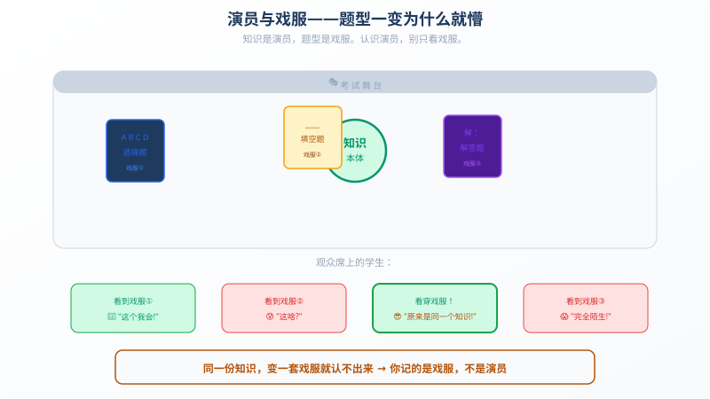
一、为什么会“同样的内容，换一种考法就不认识了”
这是比迁移更让人绝望的体验。 你明明把这个知识点的所有习题都做了，选择题会选，填空题会填。结果考试时，同一道题从选择题变成了判断题，或者从计算题变成了证明题，你就懵了。 更气人的是，考完之后老师一说“这不就是你们平时练的那个知识点嘛”，你才恍然大悟。但为时已晚。 《一个数学家的叹息》里，数学家保罗·洛克哈特把这种教育方式比作教画画只教怎么调颜料，从来不让学生真正画一幅画。学生学会了“什么题型用什么步骤”，但从未理解知识本身。当题型的面具一换，他们当然认不出背后的人是同一个。 《怎样解题》里波利亚说，数学题就像一个会变装的演员。你只有认识这个演员，才不会被他的每套戏服迷惑。但大部分学生记的是戏服，不是演员。题型就是戏服。 问题出在你平时的练习方式。 你把题目按题型分类练习：这一页全是选择题，下一页全是填空题。你的大脑在偷懒——它不用分析题目的核心结构，只需要根据题型的外表特征（选择还是填空）来决定用哪个流程。时间长了，题型和流程被绑死了。题型一变，流程调不出来。
二、怎么做到“不管什么题型，见到就认识”
脱敏训练。你要让大脑习惯：同一个核心知识，可能有无数种外在的表现形式。下面三个方法，逐步减少你对题型的依赖。
【简单方法】题型面具删除法——遮住题型，直接看问题本质
原理： 很多慌乱来自看到不熟悉的题型格式。但如果你把题型信息遮住，只看题目本身，你会发现：选择题的问号部分，和填空题的横线部分，在本质上在问同一个问题。 《一个数学家的叹息》提倡回到问题的本源，忘掉题型套路。这个方法就是强迫你的大脑练习这一点。 操作步骤（4步）：
- 拿你手头的一个单元的练习题，用便利贴把所有的“选择题”“填空题”“解答题”等题型标签全部贴住。 或者用修正带涂掉。
- 只看每道题的题干和问题。 忽略它是几选一，忽略空有多长，忽略分值。只问自己：这道题在考什么知识点？
- 把所有考同一个知识点的题目归到一堆。 你会惊异地发现，一堆看起来像是不同题型的题目，原来问的是同一个东西。
- 完成归类后，再统一做这一堆题。 你就把形式脱敏了。考试时看到陌生的形式，你的第一反应不会是“这啥题型”，而是“这啥知识点”。
关键原则： 不在乎之前的标签是什么题型。你只在脑中把题目转化为“它问了什么”。 在归类时，不要求100%精确。有时一个题目可能涉及两个知识点，分两堆。 每周做一次这个练习，做多了看到题目本能地就会先抓核心。 如果做不到： 贴标签很麻烦 → 不贴。用思维定式：看到任何题，先心里默念两个不是：“不是选择，不是填空。”然后问：它问的什么？ 不知道题目考什么 → 那是知识点不熟。停在这里，回去看课本定义和例题，看一下它考察的核心概念对应课本哪里。
【进阶方法】一题多面改造——把一道题手动转换成所有可能题型
原理： 这是反向操作：不是被动等着各种题型来找你，而是你主动给同一道题换脸。当你亲自动手把一道计算题改成证明题、把填空题改成解答题、把选择题的每个选项都变成一个独立的判断题时，你就看清了题型变化的全部空间。 《怎样解题》中的“回顾”步骤里，波利亚就鼓励学生找别的解法、改变条件和问题。这个改造训练，相当于把回顾这项工作推到了极致。 操作步骤（4步）：
- 找到一道你做得很熟的解答题。 最好是一道正常的计算或证明题。
- 把它改成以下多种形式，每种形式都实际想一下该怎么做：
改成选择题：关键数字或关键步骤变成四个选项，三个干扰项怎么设？（你要自己写出干扰项，才算想明白易错点） 改成填空题：抠掉中间的一个关键计算步骤或关键数字。把这道题给你的同伴，他们能不能做出来？ 改成判断题：给一个错误结论，像“在某某条件下，下列说法正确吗？” 改成简答题：把解题过程的某一步换成“为什么”，让人解释原因而不是计算。
- 比较每种新题型所需的思维切换。 选择题可能需要反向验算，填空题可能要求精确计算不出错，判断题需要你找到反例或条件中的漏洞。你在做这些改造时，对原知识的理解又被加深了一层。
- 总结这次改造，记下：“原题核心是_______，考试时如果变成_______型，我的注意事项是_______。” 一句话记录即可。
关键原则： 只对经典题做改造。经典题是被时间验证的包含多个层次的题。 设置干扰项不能随便编，必须来自常见错误。如果你不知道典型错误是什么，说明还没理解这道题的陷阱在哪里。 改造不是一次要做很多，一周改造一两道好题足矣。 如果做不到： 改造不出干扰项 → 翻你的错题本，把当时错的答案当成干扰项。错题本就是干扰项宝库。 不知道怎么改成证明题 → 最简单的改法：把最后要求的那个量改成结论，让你从某个条件出发证明它等于题目给的结果。相当于把计算题反过来。
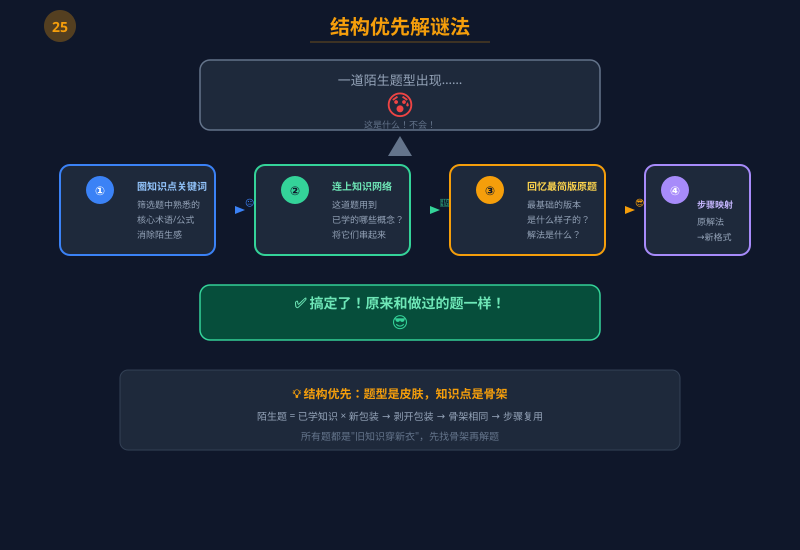
【高阶方法】结构优先解谜法——面对任何陌生题型都能拆解回去
原理： 这个方法让你拿到任何没见过的题型都能冷静解开。原理还是波利亚的解题表，但用在一个更高维度上：你不是在解知识问题，而是在解题型的问题。《一个数学家的叹息》说，数学不是一个充满标准答案的迷宫，而是一个可以被探索的开放世界。如果你用探索的心态去解构题型，你就活了。 操作步骤（4步）：
- 看到陌生题型，先圈出题里面你认识的知识点关键词。 不管它用什么方式包装，知识点关键词一定会出现：地名、概念、公式符号、术语。圈出来，心里就有底了。
- 把这些关键词和你学过的知识网络连上。 它考的只是一个或几个知识点的组合。忽略题型，把题目拆成一个一个知识点的要求。
- 回想这个知识点你做过的最基础的题。 不要管题型，直接想最原始的题目：“已知……求……”。把这个陌生题型简化为原始题型。
- 在新的格式下重写你的原始步骤。 原始题型怎么做，现在就在这个新格式里对照着做：该代入代入，该计算计算，该选就选，该填就填。结构没变，只是包装变了。
关键原则： 坚信一点：没有新题型能超越知识点结构本身。任何题型，都只是知识点的载体。 如果拆不回去，说明这个知识点你实际上没有掌握其原理，只是记住了特定题型的运算。请立刻回去重新学这个知识点。 平时多训练这个还原过程，考场上只需要十几秒就能稳下来。 如果做不到： 圈完关键词还是觉得陌生 → 很可能题目引入了新的背景材料或跨学科知识。别慌，背景都是幌子。只看背景所服务的那几句物理/数学/化学的条件。 原始题型想不起来 → 这个知识点的基础例题你没记住。以后学习时，要为每个知识点至少记一道最简版本的题在脑子里。
三、实践指南
本章核心方法速查表
选方法指南 如果你考试时拿到试卷，翻到一道不认识的题型就开始心慌意乱：从题型面具删除法开始。训练大脑看题先看知识，后看形式。 如果你平时分类练习正确率高，综合试卷乱序后正确率大幅下降：你需要一题多面改造。你的知识是和题型绑定的，要主动解绑。 如果你的目标是超常发挥，在考试中遇到完全没见过的创新题也能拿分：结构优先解谜法是你需要内化的思维底牌。 常见误用提醒 题型面具删除法不是让你忽略题目的要求（比如“选出正确的”和“写出过程”），那些还是要遵守的。你忽略的是“这是一个选择题”带来的心理暗示。 一题多面改造不是为了出题难倒别人，而是通过出题来穷尽你对该知识点的理解盲区。 结构优先解谜法在平时练习时就要用，不能到了考场上才第一次尝试。
| 方法层级 | 方法名称 | 一句话 | 适合谁 | 需要多长时间 |
|---|---|---|---|---|
| 简单 | 题型面具删除法 | 遮住题型标签，按知识点归类 | 看到不熟悉的题型就慌的学生 | 每单元练习15分钟 |
| 进阶 | 一题多面改造 | 把一道题手动改成所有可能题型 | 对知识点的考试形式缺乏想象力的学生 | 每周改造1-2题，每道10分钟 |
| 高阶 | 结构优先解谜法 | 拿到陌生题型后，还原成知识点的原始形态 | 需要应对竞赛或自主招生等非常规题型的学生 | 每次遇到新题型按此流程走 |
四、本章小结
- 题型一变就懵，是因为你把解题流程和题型外表绑定在一起了。
- 知识是演员，题型是戏服。你要认识演员，别只记戏服。
- 题型面具删除法：遮住题型，按知识点重组题目，对题型脱敏。
- 一题多面改造：亲手把一道题改成其他题型，掌握题型变化的全部可能。
- 结构优先解谜法：面对陌生题型，先拆知识点关键词，再还原为最简版本。
- 题型是知识的包装，你只要练到看穿包装，就再也没有“陌生”的题。
- 题型问题解决了，最后一个应用障碍是“换了个地方就不会用”。下一章：情境。
第9章 情境：学了为什么用不出来
探索问题
Q9-1：你理想中一个知识点掌握到"自由"的程度是什么样的——能不能在任何地方、任何场景下都调得出来？
Q9-2：今天学的东西，你现在环顾四周——它能不能解释你身边正在发生的某件事？
Q9-3：你希望一个知识点在多少种不同的场景里被你"偶遇"过，才算真正属于你了？
Q9-4：如果把知识比作一把钥匙，你手里有一把钥匙但只在一个锁孔里用过——你觉得它还能开哪些锁？
Q9-5：你觉得自己学得最"活"的那一科，它的知识是怎么跑出课本、出现在你生活里的？
Q9-6：描述一个你在意料之外的地方突然认出了某个知识点的瞬间——那个瞬间给了你什么感觉？
Q9-7：你理想中的学习，是"先学后用"，还是"边学边发现它已经在你周围了"？
Q9-8：如果明天你换个房间学习同一个内容，你觉得你的记忆会发生什么不一样的事？
一、为什么会“学的时候会，换个地方死活用不出”
这是从学校延伸到生活的最普遍的困惑。 英语单词在课本上背得滚瓜烂熟，见到外国人的第一秒，脑子里一片空白。 物理公式在考卷上运用自如，回老家看到爷爷修水泵，问你“这个原理是什么”，你一个词都说不出来。 历史大事年表倒背如流，看国际新闻时听到一个地名和年份，你完全无法和学过的任何事件产生关联。 这不能证明你学的是死知识。这证明你的知识被锁定在最初编码它的情境里了。 《父母的语言》虽然主要研究早期语言发展，但揭示了一个通用原则：语言和概念是在具体互动情境中获得的。脱离情境的知识是脆弱的。 《阅读的力量》提供了另一个视角：大量广泛的阅读之所以有效，是因为它为同一个词汇或概念提供了多种不同的情境。读得越多，同一个词在不同语境下的意义就越丰富。最终这个词就摆脱了任何一个特定情境的束缚。 你的学习问题就在这里。你学“重力”这个概念时，情境是物理课本的第三章，插图是一个方块从斜坡上滑下来。之后所有练习都是在这个情境里。于是“重力”这个词被锁在了“斜坡方块”情境里。当爷爷指着水泵里的活塞运动时，你没有看到那个锁，所以你无法从大脑中取出“重力”。 情境绑定是大脑记忆的本能。突破情境绑定，需要刻意练习。
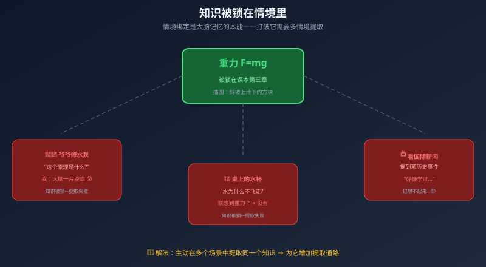
二、怎么让知识在任何情境下都能用出来
打破情境绑定的方法是：主动为同一个知识创造多种多样的提取情境。知识被提取的情境越丰富，它就越自由。
【简单方法】情境换装提问法——在多变的生活场景中回忆知识
原理： 既然情境绑定是因为只在一种情境下使用过知识，那反过来，你就要在多种情境下去“找”这个知识。《阅读的力量》里提到的广阅读，本质上就是在自然阅读中为词语建立了多情境联结。你可以不用等到阅读足够多，直接在生活中进行主动性提问。 操作步骤（4步）：
- 每天利用三个不同的生活角落进行“知识发现”。 三个角落：你的房间、饭桌、上学路上。每换一个地方，就随便看看周围的物品、现象或对话。
- 问自己一个联系今天所学的问题。 比如今天学了“蒸发”，在饭桌上看到热汤冒气：“这个‘气’和我们今天学的蒸发过程，本质上是什么？”上学路上看到洒水车过去地湿了，一会又干了：“这和蒸发的速度有关系吗？”
- 用学过的知识解释，哪怕说得磕磕绊绊。 不求完美解释，只求建立一次提取。只要能从一个情境里触碰到这个知识，这个情境就成了新的提取线索。
- 晚上回到书桌前，在笔记本最后面记一个“当日跨场景发现”。 就写一句：“今天在______看到/听到______，原来和______有关。” 一周下来，一个知识就有了好几个不同情境的钩子。
关键原则： 每天能想到一个就行，不要贪多。这不是任务，是习惯。 强行联系没关系。有时候牵强附会也比置之不理好，因为你创造了提取通道。 发现失败了，即想不到怎么解释也没关系。失败的尝试同样留下了情境印记。 如果做不到： 生活三点一线，实在没新鲜场景 → 换一个思路：看短视频、看窗外、听别人说话时都可以触发。不需要“新”，只需要“不同”。 实在解释不出来 → 降低要求，只要能在脑中把知识和场景并置一下：“热汤冒气和蒸发”，并置就算做了一次绑定。以后想到热汤会想到蒸发，就已经成功了。
【进阶方法】全情境模拟实验室——在非学习环境中进行一次“知识小考”
原理： 这个方法比随口提问更进一步：你刻意选择一个非书桌环境，带着一个明确的知识主题，去那里做一次有组织的知识提取。 《父母的语言》中强调的互动质量，在这里转化为“环境互动”。环境和知识之间建立的直接联结是最强的。 操作步骤（4步）：
- 选定一个今天学到的比较抽象、你觉得很难和生活联系起来的知识。 比如政治课的某个原理，化学的某个反应条件。
- 选择一个非常不像书房的地方：厨房、阳台、小区花坛边、公交车站。 带着你的笔记或课本。
- 在那个地方，独自完成一次3分钟的“小讲课”。 像之前一样讲解这个知识。但是，在讲解中必须强制自己使用这个环境里的物件来类比或辅助。比如在厨房讲化学，用盐和糖溶解讲溶解度；在阳台讲政治，用对面楼房和物业讲管理。
- 讲完之后，在这个环境里停留一分钟，安静地感受一下这个环境和刚才知识的联系。 把这个环境变成这个知识的记忆宫殿的一个房间。
关键原则： 环境越突兀越好。在完全意想不到的地方复习，大脑的警觉度会提高，留下的记忆反而深刻。 必须使用环境里的具体物件做类比，而不是背诵书上现成的比喻。这是建立新情境联结的关键动作。 一周做1-2次就够了，这属于深层加工。 如果做不到： 环境里找不到可以用来类比的东西 → 那就做反向操作：既然这个环境里什么都没有，那这个知识能解释这个环境的“无”吗？为什么这里没有发生那个反应？约束条件是什么？ 在公共场合讲课会尴尬 → 不用出声，小声自言自语或用手机打字假装发消息。重点是自己脑内组织语言。
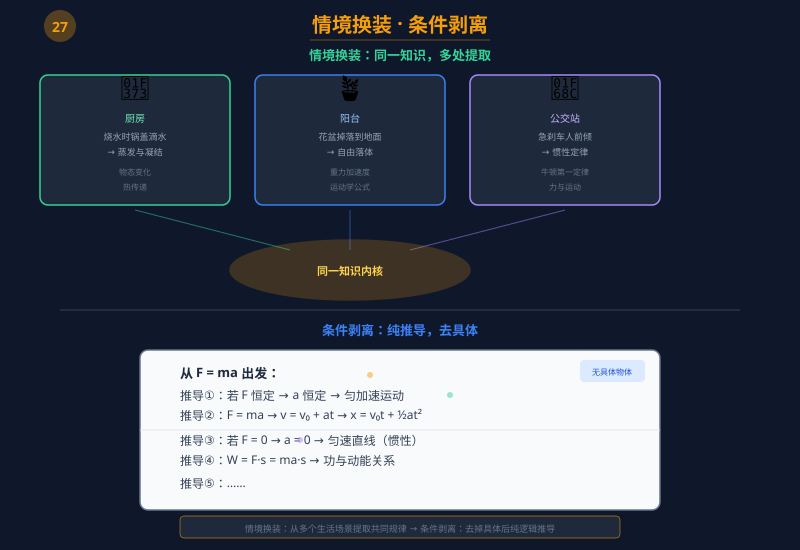
【高阶方法】条件剥离训练——把知识练到不需要任何情境也能调用
原理： 真正的高手可以在完全真空状态下调用知识。就像数学家可以在没有任何物理参照物的情况下做抽象推导。这对于应试尤其关键——考场情境是你最不熟悉、压力最大的非舒适情境。你必须练到即使大脑一片空白、环境完全陌生，知识单靠纯逻辑也能自动流出来。 这需要剥离掉知识的所有情境依附性，让它以最纯粹的符号和逻辑形式储存在大脑里。 操作步骤（4步）：
- 选择一个你已经能熟练应用的知识。 比如一个公式或一个解题模型。
- 剥离情境训练：不看任何课本、例题、笔记本，甚至不看任何题目。 直接给自己一个最抽象的指令：“用这个公式，构造一个它成立的最简单情境。”“如果公式里的某一项为0，会发生什么？”“用这个公式推导出另一个公式。”不借助任何具体数值，只玩抽象符号。
- 进行“白纸推导”。 在一张白纸上，从最基本的概念开始，纯逻辑地推导出这个知识点的所有相关结论，中间不借助任何外部材料。如果中间某一步需要靠“我记得书上那个斜坡例子”来想，就标记那个位置——那就是你还在依赖情境的地方。
- 把最后残留的情境依赖点，用抽象的符号替代。 比如总是靠“一个木块在斜面上”来记受力分析，那就强迫自己把“木块”换成一个字母O，把“斜面”换成一条倾斜的线。从图像记忆过渡到符号记忆。
关键原则： 这是对所有情境依赖的最终剥离。难度极大，但完成之后这个知识就真正完全内化了。 只对核心关键知识做这个训练。不是所有知识都需要脱离情境，有些知识在情境中才有意义。 每剥离一个，这个知识就彻底属于你了，在任何考试、竞赛、谈话压力下都丢不了。 如果做不到： 白纸上推不下去 → 允许自己在第一步使用一个情境来入门，但第二步开始强迫自己把情境删掉，改用符号。 没有能纯符号操作的知识 → 那就从最符号化的学科（数学）开始，选一个公式来剥。体验一次完全符号推导的感觉后，再推广到其他学科。
🃏 配套工具卡：[情境换装提问](cards/card_情境提取卡.svg)
三、实践指南
本章核心方法速查表
选方法指南 如果你觉得学校学的知识出了校门就没用：先从最简单的场景化联想开始。今天学的任何一个概念，在吃饭时试图用它解释一样东西。 如果你在口头交流或实际应用场合完全无法想起学过的知识：用全情境模拟法。知识需要在你意想不到的环境里“脱敏”。 如果你平时练得好但一到严肃考试就完全想不起来：你可能对“考场情境”有抑制反应，需要把知识练到无情境也能用。使用条件剥离训练。 常见误用提醒 情境换装不是强迫症般地为每个知识找场景。是轻松地、游戏般地做脑力伸展。找不到就放过。 全情境模拟不要在太舒适的地方做（比如床上）。你需要适度的陌生感来刺激大脑。 条件剥离训练是高级技法，不建议一开始就用在所有知识上。先从你最拿手的一两个核心公式开始。
| 方法层级 | 方法名称 | 一句话 | 适合谁 | 需要多长时间 |
|---|---|---|---|---|
| 简单 | 情境换装提问法 | 在不同生活场景中寻找知识的影子 | 学完就锁死在课本情境中的学生 | 每天随机，每次30秒 |
| 进阶 | 全情境模拟实验室 | 在陌生环境中用环境物件类比讲解知识 | 知识完全不能迁移到日常谈话中的学生 | 每周1-2次，每次5分钟 |
| 高阶 | 条件剥离训练 | 让知识脱离任何情境，纯符号纯逻辑提取 | 在考场高压力情境下脑子空白的学生 | 每核心知识一次，30分钟 |
四、本章小结
- 学了用不出来的一个关键原因是知识被锁在最初的学习情境里。
- 情境绑定是大脑记忆的固有特性，打破它需要多情境提取。
- 情境换装提问法：每天在不同生活场景中捕捉知识和生活的联系。
- 全情境模拟实验室：在非书房环境中讲知识，用现场物体做类比。
- 条件剥离训练：用纯符号纯逻辑推导，让知识脱离任何情境依赖。
- 最终目标是知识在任何场合、任何压力下都能自然提取。
- 知识应用的问题告一段落，接下来是学习状态的底层——专注。下一章：生理唤醒。
专注篇：进入状态，保持高效
第10章 启动：明知该学，为什么身体动不了
探索问题
Q10-1：你理想中"坐到书桌前"这个动作应该由什么来触发——一个具体的时间、一个固定的事件，还是别的什么？
Q10-2：如果只允许你做2分钟——真正的2分钟、做完就可以停——你最可能先做哪一步？
Q10-3：你说"我要学习"的时候，这句模糊的话在你大脑里触发了一个明确的动作，还是一种模糊的焦虑？
Q10-4：你希望房间里的什么东西一出现，大脑就自动收到"现在该学习了"的提示？
Q10-5：你觉得"先让手拿起笔在纸上写一个字"和"先让大脑想清楚再动笔"——哪种方式更像你的身体会配合的？
Q10-6：你能不能设计一句"如果X发生，我就做Y"的指令，专门用来绕过你大脑里的谈判环节？
Q10-7：描述一次你毫不费力就开始了学习的经历——当时你的身体最先动了哪一步？
Q10-8：你理想中"开始学习"应该像按下什么开关——这个开关长什么样、装在哪个位置？
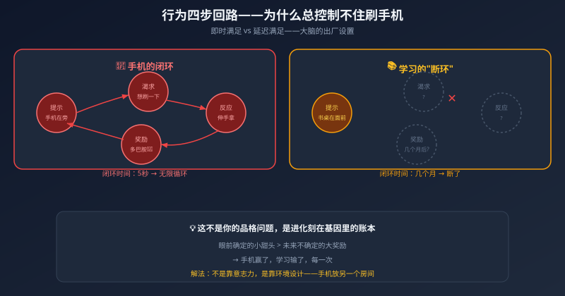
一、为什么会"身体像被钉在椅子上"
你太熟悉这种感觉了。 晚上7点，计划表上写着"复习数学"。你坐在书桌前，书翻开了。但脑子像一团浆糊，眼睛看着字，手却伸向手机。刷五分钟，变半小时。再刷一会儿，一小时没了。 你骂自己：怎么又拖延了？明天一定改。 但明天和今天一模一样。 老师和家长说：这孩子就是不自觉，懒。你自己也信了。你觉得自己意志力薄弱，自制力差，天生不是学习的料。 真相是：这不是懒，这是大脑的出厂设定。 《掌控习惯》的作者詹姆斯·克利尔用习惯回路解释了这件事。大脑的任何行为都遵循一个四步回路：提示→渴求→反应→奖励。这个回路不是为学习设计的，是为生存设计的。它天生倾向于节能、即时满足、逃避痛苦。 你坐在书桌前，提示触发了"学习"这个行为选项。但大脑同时也在计算另一个选项：刷手机。在学习的回路里，奖励是遥远的（考试成绩、未来前途），而在手机的回路里，奖励是即时的（一条好笑的内容、一个社交反馈）。你的大脑在两笔账之间做选择，每一次，即时满足都打败了延迟满足。 这不是你的品格问题。这是进化写在基因里的账本：眼前确定的小甜头，永远比未来不确定的大奖励更有诱惑力。你的理性知道学习重要，但你的大脑边缘系统——那个负责情绪和冲动的古老结构——此刻正死死攥着方向盘。 《福格行为模型》把这个问题拆得更细。BJ·福格说，任何行为的发生都需要三个要素同时在线：动机、能力、提示。 当你坐在书桌前发呆时，动机是有的——你想学好，你甚至焦虑自己不学。能力也是有的——你能做那些题。但你缺了一个关键的东西：一个明确到不需要思考的启动提示。 "我要学习"不是提示，是一个模糊的愿望。模糊的愿望不触发行为。具体到"当X发生时，我就做Y"的指令，才能绕过大脑的谈判环节，直接驱动身体。
二、怎么让身体"动起来"
下面三个层次的方法，从今天就用的微操作，到需要长期练习的系统设计，帮你一步一步把"启动"这个最难的环节变成自动化的本能。
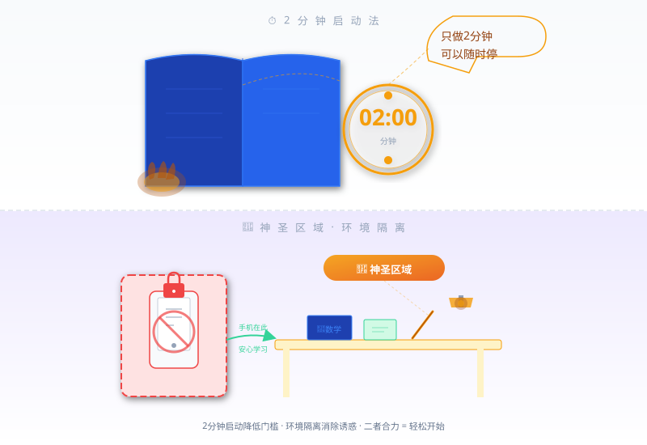
【简单方法】2分钟启动法——骗过大脑的节能机制
原理： 《掌控习惯》的核心策略：当你不想做一件事时，把目标压缩到"做2分钟就好"。大脑抗拒的是"一小时的高强度脑力劳动"，而不是"坐两分钟"。2分钟不会触发大脑的痛苦预警，所以你不会拖延。而一旦你开始了2分钟，身体坐下了，书翻开了，大脑的惯性就会接手。80%的情况下，你会继续做下去。 操作步骤（3步）：
- 对自己说："我只做2分钟。" 这句话不是说给别人听的，是说给你大脑里的边缘系统听的。它在安抚那个抗拒痛苦的古老脑区："放心，就两分钟，不痛。"
- 走到书桌前，坐下，打开书，看第一行。 动作要轻，不要给自己"现在要开始学习了"的巨大心理暗示。你只是在做一个简单的物理动作。
- 2分钟后，允许自己停下来。 这是最关键的一步。你必须真的允许自己停。如果你骗自己说"我只做两分钟"但心里想的是"等两分钟过了我就逼自己继续"，大脑下次就不信你了。真诚地把选择权交给身体：想停就停。神奇的是，往往这时候你反而不想停了。
关键原则： 两分钟是真的两分钟，不是心理上的"先做一会儿"。必须允许自己停。这个"允许"是保证下次还能启动的前提。 每天最难的那项任务，用2分钟启动法开头。 环境设计做在前面。手机放另一个房间，书桌只放和学习有关的东西。物理隔离的效果远超意志力——看不到就不会去想。不要在学习的每一分钟临时考验自己的自制力。如果在家无法控制环境（如家人打扰），用降噪耳机+固定纯音乐建立"听觉隔离"。 如果做不到： 两分钟都坐不住 → 降到一分钟。甚至降到"走到书桌前坐下"这个动作本身就是今天的启动胜利。两分钟到了还是不想做 → 那就停。但你已经完成了"翻开书"这个动作，今天给它打一个勾，明天再来。 如果坐下了但脑子还在内耗、手就是不动 → 启动身体先行策略：不要思考，直接驱动身体。让手先拿起笔，在纸上写一个字或抄一行字。笔尖碰到纸的摩擦感，是大脑切换到学习模式的最快信号。行为心理学发现：不是大脑先进入状态身体才行动，而是身体先行动大脑才切换状态。手动了，大脑会给自己编一个理由："既然我都写了，那就继续吧。" 如果用手机查资料忍不住刷 → 用电脑查，或在查之前明确写下来"我要查什么"，查完立刻放回去。家人需要用手机联系 → 设固定联系时间（如学50分钟休10分钟时看手机），提前告知。
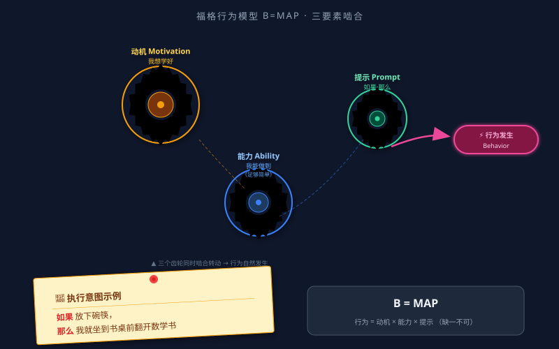
【进阶方法】执行意图训练——用"如果-那么"计划替代模糊愿望
原理： 心理学家彼得·戈尔维策的研究发现，用"如果-那么"格式写的计划，成功率是模糊计划的3倍以上。 "我要好好学习"失效的原因是：它没有告诉大脑在什么时间、什么地点、做什么行为。大脑面对模糊指令时，默认的反应是"等等再说"。但"如果吃完晚饭，那么我就坐在书桌前"，这给了大脑一个明确的触发信号。当"吃完晚饭"这个情境出现时，大脑会自动启动"坐书桌前"这个行为，不需要你做任何决策。 操作步骤（3步）：
- 写下3个"如果-那么"计划，覆盖你最容易拖延的三个时刻。
| 如果 | 那么 |
|---|---|
| 如果吃完晚饭 | 我就坐到书桌前 |
| 如果坐到书桌前 | 我就翻开数学书 |
| 如果想刷手机 | 我就立刻站起来倒杯水 |
- 把这个计划贴在显眼的地方。 书桌前、床头、手机壁纸，都可以。
- 每天结束时，在计划旁边写下一个数字：今天执行了几次？ 不用追求完美。哪怕只执行了一次，也是从0到1的质变。记录这个数字本身就是一个正向反馈。
关键原则： "如果"必须是具体的情境，不能模糊。"那么"必须是一个物理动作，不能是心理状态（不能说"那么我就想学习"）。一开始只写3个，不要贪多。 如果"那么"后面的任务太大仍然抗拒 → 在执行意图中把"那么"也拆到最小可执行单元。不是"做一套卷子"，而是"做第1道选择题"。不是"背50个单词"，而是"背3个单词"。大脑不抗拒微小的行动——最小单元能绕过痛苦预警，让启动成本降到零。《微习惯》的作者斯蒂芬·盖斯从"一天一个俯卧撑"开始，最终养成了规律健身的习惯。学习也是一样：拆到小得不好意思不做，就是给大脑的节能系统递了免检通行证。 如果做不到： 写了但总忘记看 → 把第一个"如果-那么"设成手机锁屏壁纸。每天解锁手机几十次，几十次都在无意识复习这个计划。 执行了几天又不行了，或找不到合适的触发情境 → 用习惯叠加的思路重新设计：把学习动作直接挂在已有习惯后面。刷牙后背5个单词、早餐后做2道数学题、洗澡前复习一个知识点。已有习惯是每天必然发生的最强触发器——这不是凭空建立新习惯，是搭便车。挂的动作必须极小，小到"不好意思不做"。一次最多挂3个，坚持一个月不增量。量的积累会在以后显现。
【高阶方法】身份认同转换——从"我要学习"变成"我是学习者"
原理： 《掌控习惯》最高级的部分，不是讲行为，是讲身份。 詹姆斯·克利尔指出，大多数人靠"目标"驱动改变："我要考第一名"、"我要早起"。但目标一旦达成或失败，动力就消失了。真正持久的改变来自身份认同的转变：你不再是想减肥的人，你是一个健身的人；你不再是在逼自己学习的人，你是一个学习者。 这两个身份的区别在于行为的标准。 "想减肥的人"偶尔去健身房，觉得自己尽力了。"健身的人"每天都要动一动，不动反而难受。不是意志力不同，是自我认知不同——你觉得"你是什么样的人"。 操作步骤（3步）：
- 停止说"我要学习"。开始说"我是一个学习者"。 这句话不是口号，是对自己的行为预期。
- 问自己：一个学习者，他/她每天会做什么？ 试着列出3个很小的、但每天都做的事。比如：每天会翻开书、会问一个问题、会完成昨天没做完的一道题。
- 每天做一件符合"学习者"身份的小事，然后用这件小事作为证据告诉自己："看，我就是学习者。" 同时，用环境设计来强化这种身份：给学习空间做功能分区——书桌只用于学习，手机锁进定时盒放在另一个房间。每一次坐到书桌前，环境都在无声地对你说："你是一个学习者。"大脑会把环境和特定行为绑定——当你的书桌只用于学习时，坐到书桌前就会自动调频到学习模式。空间的仪式感让身份认同更快内化。
不是行为改变了身份，是身份驱动了行为，行为又反过来验证了身份。形成一个正向增强回路。 关键原则： 身份不是喊出来的，是做出来的。每一个微小行为都是在给自己的身份投票。 如果有一天没有做，那也是学习者偶尔也会休息。不要追求完美，要追求"我大部分时候是"。 这个转换需要时间，通常3-6个月才会内化。在这之前，耐心对待自己缓慢的变化。 建立每日固定仪式来强化身份认同。设计一个3步"启动仪式"，每天在同一时间执行（如泡一杯茶→听同一首纯音乐→写下今天的学习清单）。仪式是身份的日常确认——"我正在做学习者该做的事"。动作必须固定、顺序必须固定、时间尽量固定。最好有感官线索（特定的气味、听觉、触觉），因为感官比思维更快触发大脑状态。坚持21天不作任何改动，仪式本身会变成你的神经开关。 如果做不到： "我是学习者"这句话说不出口，觉得假 → 先不从口号开始，先从行为开始。每天做完那个最小单元后，对自己说一句："一个学习者就是这样做的。" 坚持不下去，觉得自己不配这个身份 → 每个人在建立身份认同的初期都会有这种冒名顶替感。它是正常的。继续做，做多了就不假了。 如果空间有限、无法做完整功能分区 → 用"仪式+物件"来区分。学习时铺一块特定颜色的桌布或点一盏特定的台灯，学习结束桌布撤掉、灯关掉。物件本身就是分区。 如果启动仪式坚持不了 → 把仪式缩短到1分钟：喝一口水+看一眼今天清单的第一行。极短仪式也能形成反射。不需要完美的系统，需要的是每天都发生了的系统。
🃏 配套工具卡：[执行意图训练](cards/card_执行意图卡.svg) 【升阶诱饵】 你现在知道了怎么启动身体、怎么让学习自动发生。但动起来之后，有一个更高阶的状态在等着你：一学就完全沉浸，忘了时间，忘了自己，效率比其他时候高出好几倍。 这种状态叫"心流"。它是怎么被触发的？为什么有时候你觉得学习像上刑，有时候又觉得时间过得飞快？ 下一章，我们要解析心流的秘密。 翻到第11章：心流——一学就忘我的状态怎么找？
三、实践指南
本章核心方法速查表
一周启动训练计划 天数 任务 方法层级 第1-2天 用2分钟启动法开始3次任务，手机放另一个房间；如果坐不住，启动身体先行策略 简单 第3-4天 写3个"如果-那么"计划贴在显眼处；同时把一个大任务拆到最小可执行单元 进阶 第5-6天 给自己的学习空间做功能分区，设计一套3步启动仪式 高阶 第7天 综合复盘：今天用了哪个方法启动最有效？哪一步还需要调整？ 综合 选方法指南 如果你最大的痛点是"动不了"：从2分钟启动法开始。只做2分钟、手机拿走、身体先动——启动的基础设施。 如果你能启动但坚持不住：用执行意图。把学习和特定的时间地点绑定，把任务拆到最小单元。 如果你想从根本上不再依赖意志力：投入身份认同转换。身份+环境+仪式，把学习变成你不需要思考的日常底色。 常见误用提醒 2分钟启动的关键是把选择权还给身体。不许在心底偷偷说"等2分钟过了我逼你学"。大脑不是傻子，被骗一次下次就不吃这套了。 执行意图的"那么"必须是物理动作，不能是心理状态。"那么我就想学习"不是执行意图。同时"那么"后面的任务必须拆到最小单元——大脑不抗拒微小行动。 身份认同是长期的事。不要在转换的第一周就问"我怎么还没变成学霸"。把眼光放长到3个月，看那时自己有什么不同。仪式可以短，但不能断。
| 方法层级 | 方法名称 | 一句话 | 适合谁 | 需要多长时间 |
|---|---|---|---|---|
| 简单 | 2分钟启动法 | 告诉大脑"只做2分钟"，允许随时停；辅以环境隔离和身体先行 | 一直拖延、坐不到书桌前、一学就想摸手机的人 | 每次启动时2分钟 |
| 进阶 | 执行意图训练 | 用"如果-那么"计划替代模糊愿望；把任务拆到最小单元 | 有计划但总不执行、面对大任务畏难逃避的人 | 计划时多写1分钟 |
| 高阶 | 身份认同转换 | 从"我要学习"变成"我是学习者"；用环境设计和每日仪式固化身份 | 动力总来自外部压力、想从根本上不再依赖意志力的人 | 3-6个月内化 |
四、本章小结
- 拖延不是懒，是大脑的节能机制。大脑天生趋利避害，追求即时满足。
- 行为发生需要三个要素：动机、能力、提示。缺一个都动不了。
- 2分钟启动法：骗过大脑的痛苦预警。辅以环境隔离（手机放远）和身体先行（不思考直接动手），把启动的门槛降到最低。
- 执行意图："如果-那么"格式的计划，成功率是模糊计划的3倍。把"那么"拆到最小单元，用习惯叠加的思路绑定已有习惯作为触发器。
- 身份认同转换：从"我要学习"变成"我是学习者"。身份驱动行为，行为验证身份，形成正向回路。用空间分区和每日仪式来强化这个身份。
- 三个方法层层递进：简单方法解决"今天能启动吗"，进阶方法解决"明天还能启动吗"，高阶方法解决"从此不需要启动"。
- 启动的问题解决了，下一步是启动后的状态质量。下一章：心流。
第11章 心流：一学就忘我的状态怎么找？
探索问题
Q11-1：你理想中的"忘我学习状态"是什么感觉——时间、自我意识、干扰都去了哪里？
Q11-2：你上一次完全沉浸在某件事里忘记了时间——那件事的难度和你当时的能力之间是什么关系？
Q11-3：如果给你正在做的学习任务加一个"完成条件"（一个能立刻知道自己做到了的标准），它会是什么？
Q11-4：你能描述一个让你"不想停下来"的任务和一个让你"做不下去"的任务之间，差了什么东西？
Q11-5：你希望自己在进入心流之前，像调整收音机频率一样调整哪几个旋钮？
Q11-6：如果把学习任务切成一块一块20-30分钟的"小关卡"，你觉得这个变化会怎样影响你的投入感？
一、为什么大多数学习像“上刑”而不是享受
你有过这种时刻吗？做一件事，完全沉浸，时间消失了，精神极度集中，所有干扰都被自动过滤。回过神来，发现已经过去了两小时。 也有另一种时刻。坐在书桌前，心不在焉。眼睛在字上，脑子在别处。看了一页又一页，什么都没记住。每十分钟看一次手机，每半小时起来一趟。 同样是一个人，为什么状态差别这么大？ 《心流》的作者、积极心理学奠基人米哈里·契克森米哈赖，用几十年时间研究了这种忘我的巅峰体验，并把它命名为“心流”。他在书里给出了精确的定义：心流是一种完全沉浸于某项活动之中的状态，在这种状态下，自我意识消失，时间感知扭曲，活动本身就是奖励。 《幸福的方法》作者泰勒·本-沙哈尔把心流进一步引入日常学习领域：好的学习体验不是痛苦的努力加上遥远的奖励，而是学习过程本身就是快乐的源泉。当你处于心流状态时，学习本身就是在给自己充电。 但问题是，心流不是等来的。它有明确的触发条件。 大多数学生无法进入心流，不是因为缺乏天赋，而是因为他们学习时的两个核心参数被破坏了：挑战与技能的平衡，以及清晰的目标与即时反馈。
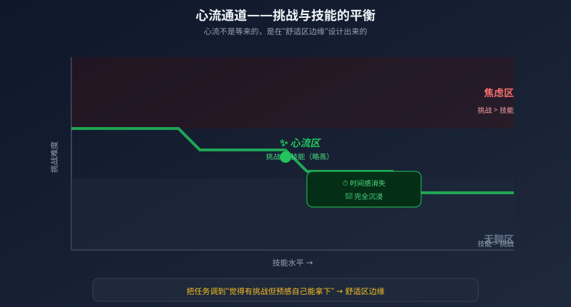
二、怎么“制造”心流状态
心流不是玄学，是可以按照步骤制造出来的。下面三个方法，分别对应心流的三个关键触发条件。
【简单方法】挑战-技能匹配法——让你的任务难度恰到好处
原理： 《心流》的核心发现：心流产生的前提是任务的挑战水平和个人技能水平之间达到微妙平衡。如果挑战远高于技能，人会焦虑。如果挑战远低于技能，人会无聊。只有在挑战略高于技能、需要你踮踮脚才能够到的时候，心流就会出现。 很多学生自己的学习任务参数设置错了。他们在已经会了的地方反复刷题（无聊），或者直接跳到压轴难题（焦虑）。这两种都进不了心流。 操作步骤（4步）：
- 评估目前这个学科你的能力水平。 很简单：做三道中等难度题。如果全对，你的水平在这之上；如果错一道，中档题就是你的舒适区边缘；如果错两道以上，基础还要巩固。
- 根据评估，选择难度恰好在你的舒适区边缘的任务。 觉得有点挑战性，但你预感自己应该能拿下。比如：水平是中等的，就选稍微加了点变形的基础题，而不是直接做竞赛题。
- 把任务切分成20-30分钟能完成的小块。 一个太大的任务会压垮专注力。比如“复习数学”太大了，改成“用30分钟完成第四章综合练习题的前5道”。小块任务更容易进入心流。
- 如果进入状态，可以顺延。如果15分钟还进不去，说明难度不对，立刻调整。 太难了就降低一个难度层级，太简单了就提高一个层级。
关键原则： 难度不是固定的，需要动态调整。今天状态好可以调高，状态差就调低。 不要太看重对错，要看专注度是否上去。专注度上去了，心流就来了。 每个学科可能对应的舒适区边缘都不一样，需要分别评估。 如果做不到： 不知道怎么判断难度 → 用一个简单的标准：你看到这个任务，是有点跃跃欲试的期待，还是想拖延？前者难度合适，后者可能太难或太简单。 调来调去还是进不去 → 也许问题不在难度，而在目标不清晰。看下一个方法。
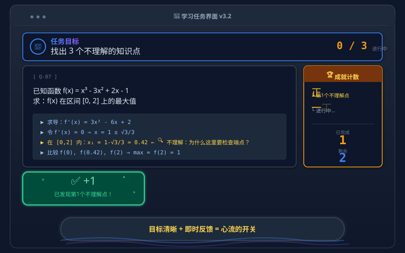
【进阶方法】目标清晰化+即时反馈——给大脑一个“游戏界面”
原理： 《心流》指出，心流的另一个必备条件是：每一步都有清晰的目标，并能立刻得到反馈。游戏之所以让人沉浸，就是因为这两点被做到了极致：任务目标明确（打倒这个Boss），反馈即时（掉血条、获得经验值）。 学习之所以让人走神，恰恰因为目标模糊（“我要复习”）和反馈延迟（效果要等考试）。你需要为学习设计一个简易的“游戏界面”。 操作步骤（4步）：
- 把学习任务变成“强目标导向”的小单元。 不是“复习第三节”，而是“找出第三节体系里3个我不理解的点，并用一句话解释为什么”。不是“做物理卷子”，而是“用物理卷子前8道选择题检验我的单位换算能力”。
- 为每个小单元设定一个可以快速验证的“完成条件”。 比如：能流利地把这个原理讲给假想的同学听；完成了这10道题并且全对；把这篇课文默写下来错误不超过两处。
- 建立即时反馈的机制。 完成一个小单元就立刻反馈：对了就打个勾，甚至给自己一颗小星星（很幼稚但有用）；错了就在错题旁用红笔写下错因，红笔本身就是反馈。
- 记录连续完成单元的次数。 用最简单的“正”字计数法。每完成一个单元，就画一笔。连续的正字会给你无形的满足感，驱动你继续下去。这就是最简单的“游戏化”。
关键原则： 目标必须具体到行为，不能是“掌握”、“了解”这些模糊词。 反馈必须在你完成任务的1分钟之内发生。延迟反馈就无效。 记录连续性比记录总时长更能激发心流。心流喜欢连续性。 如果做不到： 不知道这个任务设置什么目标 → 问自己：如果这个任务完成了，我最低限度能“做”什么不同的事？能说出什么？能写出什么？这就是目标。 自我反馈觉得没劲 → 找一个人，哪怕是网友，完成一个单元就发一条消息。有人见证的反馈会更有效。
【高阶方法】心流触发仪式——用环境线索瞬间切换大脑模式
原理： 《心流》里研究的一位作曲家描述了他是如何进入创作心流的：他不是等待灵感，而是走进一个特定的房间，把窗帘拉上，点上同一盏灯，然后开始工作。久而久之，这些动作本身就成了触发心流的开关。 大脑可以通过建立“仪式-状态”的条件反射，缩短进入心流的时间。你不需要每次都用意志力“找状态”，只需要启动一个固定的仪式序列。 操作步骤（4步）：
- 设置一个固定的心流触发环境。 可以是书桌的一角，整理干净，只放和学习有关的东西。或者一个特定的背景音（同一段白噪音、同一张轻音乐专辑）。
- 设计一个3步的“心流启动序列”。 例如：①擦一遍桌子 ②带上降噪耳机 ③打开台灯。三个动作，每天学习前都按同样顺序做。不要多，三步足够。
- 最初几次需要在你本来状态不错的时候使用这个序列。 让大脑把这个序列和“好的学习状态”挂钩。如果第一次使用就在你极度烦躁的时候，它会和烦躁挂钩，起到反效果。
- 坚持两周。 之后，这个序列就会变成一个神经开关。当你坐下完成这三个动作，大脑会自动调频到专注模式。即使刚开始有点浮躁，序列也能帮你迅速安定下来。
关键原则： 序列动作必须固定且简单，不能每次变。 环境线索（灯、音乐、气味）比动作更容易建立反射。点燃同一款香薰或精油也是一些深度专注者的常用工具。 心流不能强求，但可以被邀请。你的仪式就是一个邀请函。 如果做不到： 没有固定学习环境（住宿舍/共享空间） → 使用耳机和音乐。一个特定的纯音乐歌单，只在学习时听，能成为移动版的仪式。 三步仪式做了一周没效果 → 检查是不是同时还在学之前刷手机。仪式需要屏蔽其他干扰信号，如果你启动仪式后还在刷手机，大脑无法建立闭环。
三、实践指南
本章核心方法速查表
选方法指南 如果你经常觉得学习“没意思”，或者一做题就烦躁不安：先用挑战-技能匹配法。你的任务难度可能长期设置错误。 如果你开始学习后10分钟内必然走神：用目标清晰化+即时反馈。你的大脑需要更清晰的目标和即刻的结果来维持注意力。 如果你以前有过很棒的专注体验但很久没有再现了：用心流触发仪式。找回那个状态的捷径就是重建它出现时的环境。 常见误用提醒 挑战-技能匹配是在开始学习前做的，不是在卡住半小时后再调整。 即时反馈不能马虎。不是“对了一下答案”，而是清楚知道自己错在哪里并且标记。 仪式是为了触发内在状态，不是为了仪式而仪式。如果你走完流程还在玩手机，请切断手机干扰再开始仪式。
| 方法层级 | 方法名称 | 一句话 | 适合谁 | 需要多长时间 |
|---|---|---|---|---|
| 简单 | 挑战-技能匹配法 | 调节任务难度到“有点挑战但能完成” | 觉得学习很无聊或很焦虑的学生 | 每次任务前2分钟评估 |
| 进阶 | 目标清晰化+即时反馈 | 把学习任务变成有明确目标和即刻反馈的小单元 | 容易走神、需要外部刺激的学生 | 贯穿学习全过程 |
| 高阶 | 心流触发仪式 | 用固定环境或动作序列瞬间切换大脑模式 | 每次都要花很长时间“找状态”的学生 | 每天启动时5分钟，坚持两周建立反射 |
四、本章小结
- 心流是完全沉浸、自我消失、时间扭曲的巅峰体验，是学习的最优状态。
- 心流的触发条件：挑战与技能平衡、清晰目标与即时反馈。
- 挑战-技能匹配法：布置任务时让难度刚好处于你的舒适区边缘。
- 目标清晰化+即时反馈：把任务改成具体可验证的小单元，完成立刻得到反馈。
- 心流触发仪式：用固定动作或环境作为大脑切换专注模式的开关。
- 心流不是等来的，是设计出来的。
- 心流虽好，人不能一直在心流里。接下来讲学习的节奏。下一章：节奏。
第12章 节奏：为什么学霸反而学学停停？
探索问题
Q12-1：你希望自己的一天被分成几段完全不同节奏的时间——每段大约多长？
Q12-2：你注意到自己一天中哪个时段大脑最清醒、哪个时段最容易飘——这些波峰波谷有规律吗？
Q12-3：你理想中的"休息"应该包含什么——离开座位、闭眼、走动，还是别的什么？
Q12-4：你觉得25分钟完全专注和45分钟后走神10分钟——哪个更像你想练出的节奏？
Q12-5：如果用"90分钟深度冲+20分钟彻底休"的方式替代"坐三小时硬撑"，你觉得会发生什么？
Q12-6：你能描述一下自己"坐了三小时但后半段效率归零"时，身体和大脑分别给出了什么信号？
Q12-7：你希望把每天的"深度工作时间"固定在哪一个时段——早起的第一个90分钟，还是别的什么窗口？
一、为什么"一直学"不如"学学停停"
对学霸最深的误解是：他们能一直坐在那里学很久。 真相是：学霸是最会"偷懒"的人。他们学习时非常专注，但专注的时间区块并不长，区块之间一定穿插休息。他们不是学得更久，而是学得更"准"。 《深度工作》一书将这种能力称为"深度工作"——在无干扰的状态下高度集中注意力进行认知任务的能力。这本书的一个核心发现是：人的深度专注时间是有限的。 大多数人每天能真正进行深度工作的时间只有4小时左右，顶级的知识工作者也超不过5小时。超过这个时间，工作质量开始下降，并且更容易出错、更容易分心。 《搞定》的时间管理理念则从执行层面提供了解决方案：不能管理精力的人，学不长久。 你的问题不一定是懒，而是你在用"疲劳战"代替"节律战"。你要求自己坐三个小时不分心，这违反了大脑运作的生理节律。大脑的注意力是以波的形式存在的，有波峰就有波谷。在波谷里强行工作，不仅效率低下，还会累积疲劳，让下一个波峰也变矮。 学霸之所以看起来轻松，是因为他们顺应了这个节律：在波峰时全力冲，在波谷时彻底休。
二、怎么找到自己的学习节奏
调整节奏，不是让你少学，而是让你学得更聪明。下面四个方法，帮你建立适合自己
学科小贴士：理科适合90分钟深度块，文科适合30分钟切换块，语言类适合15分钟碎片块。不同学科的认知功耗不同，节奏也应该不同。
的专注-休息节律——从基础的时间区块，到认识自己的精力规律，再到主动设计深度工作系统。
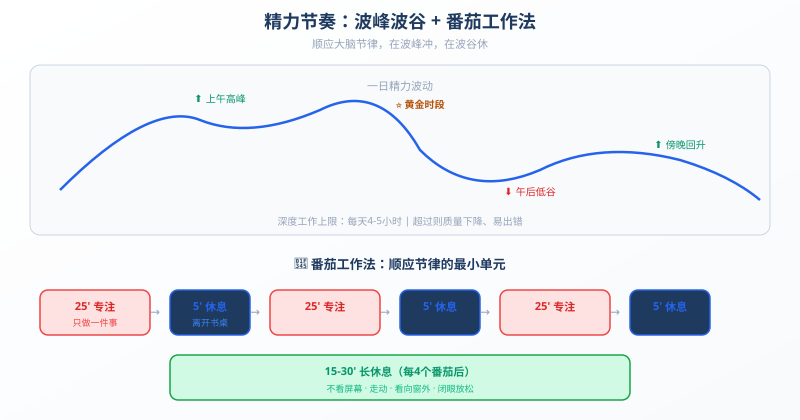
【简单方法】番茄工作法基础版——用25分钟划分专注单元
原理： 《深度工作》中虽然没有直接讲番茄工作法，但肯定了时间区块化的价值。番茄工作法是最易上手的节律工具：设定25分钟完全专注，然后强制休息5分钟。25分钟不长，足以降低你对"开始"的抗拒；5分钟不长不短，大脑初步恢复但不至于完全脱离状态。 操作步骤（4步）：
- 决定今天要学习的一个任务，或一个任务的一部分。
- 设一个25分钟的倒计时。 用手机或厨房定时器。关键是让倒计时在视线之外，比如把手机翻过去，免得你每隔两分钟就查看还剩多久。
- 这25分钟内，只做这一件事。 任何与任务无关的念头冒出来（想查个东西、想看看手机），都在旁边纸上记下来，告诉自己"休息的5分钟再做"。这25分钟你只服从倒计时。
- 铃声一响，立刻停。 无论那段写没写完，立刻停止。站起来，离开座位，休息5分钟。5分钟里不要看任何屏幕（包括手机和电脑），看向窗外、走动、闭眼放松。这是大脑处理刚才信息的黄金时间。5分钟后回来继续下一个番茄。
关键原则： 25分钟内绝对不能刷手机，这是底线。 5分钟休息必须离开书桌。身体离开了才能让大脑切换模式。 一组4个番茄之后，休息长一些（15-30分钟）。 如果做不到： 25分钟也坐不住 → 从15分钟、甚至10分钟开始。把番茄钟缩短是完全可以的，关键是完整执行"专注+休息"。 休息5分钟忍不住看手机 → 把手机放在另一个房间，休息时去阳台站5分钟。物理隔离比意志力好用。
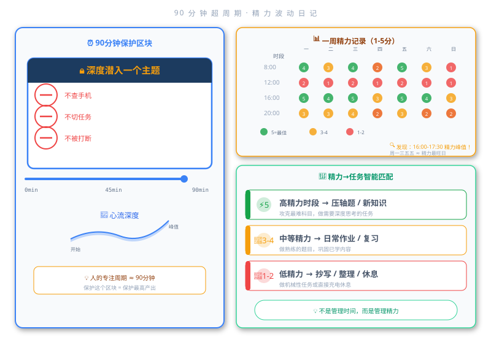
【进阶方法】90分钟超周期法——顺应人体自然节律
原理： 《深度工作》指出，一些人适合的深度工作时长是90分钟，而非25分钟。这与睡眠科学中的"次昼夜节律"（基本休息-活动周期）有关：人在一天中，大约每90-120分钟就会出现一个精力波峰和一个波谷。利用这个周期安排学习，会让深度工作更自然。 如果你在25分钟番茄钟里常常觉得结束得太早、刚进入状态就被打断，可能说明你的自然节律更长，你需要90分钟周期。 操作步骤（4步）：
- 选择一天中精力最好的时段，留出90分钟不受打扰的时间。 把手机、所有消息通知全部关闭，告诉周围人这段时间不要打扰。
- 在这90分钟内，专注一项或一组紧密关联的学习任务。 不切换学科，不切换主题。由一个主题进入深度探索。
- 不设置中间闹钟。 信任自己的注意力自然起伏。当你感到注意力开始自然下降、脑子开始飘时，再看一下时间，看大概过了多久。第一次可能是60分钟，也可能是80分钟。记录下来。
- 90分钟后必须结束，进行一个较长的休息（20-30分钟）。 休息必须是恢复性的：吃些东西、散步、听音乐、甚至小睡。不要用社交媒体"休息"，那会额外消耗注意力。
关键原则： 每天最多安排2次这样的90分钟深度工作。超过2次，你就开始消耗大脑的储备，后面的效率会很差。 第一次90分钟安排在一天中你状态最好的时段（一般是上午）。 必须保护这段时间不收任何干扰。遭到中断的90分钟效果还不如专注的25分钟。 如果做不到： 90分钟完全不中断不现实（在学校上课） → 在学校没必要用这个方法，这个方法主要用于晚间自学或周末自学。 90分钟中途被打断，很难恢复 → 真被打断的话，花2分钟写下来"刚才做到哪里了，下一步是什么"，然后接着做。这个"中断恢复笔记"能减少恢复时间。
🃏 配套工具卡：[深度排程](cards/card_深度排程.svg)
🃏 配套工具卡：[深度工作排程](cards/card_深度排程.svg)
🃏 配套工具卡：[90分钟超周期](cards/card_精力记录表.svg)
【高阶方法】精力波动日记——绘制你个人的"能量地图"
原理： 《搞定》的核心思想之一：不是按时间来安排任务，而是按精力水平来安排任务。高精力时做最难的认知任务，低精力时做机械性、低认知要求的任务。大多数人把精力最好的时间用来刷手机、回邮件，等到精力不济时才开始啃硬骨头，结果自然是又累又做不完。 精力波动日记就是用一周的时间追踪你自己每天的精力变化规律，然后基于这个规律来安排学习的轻重缓急。 操作步骤（4步）：
- 连续一周，每天每隔2小时给自己打一次精力分（1-5分）。 1=脑子一片浆糊，5=感觉可以攻克任何难题。设闹钟提醒自己打分。同时记录当时在做什么。
- 一周后，绘制出你一周的"精力地图"。 你会发现明显的规律：你可能上午9-11点是5分带，下午1-3点是2分带，晚上7-9点又回到3-4分带。每个人的地图不同。
- 根据地图重新安排学习任务：
5分时段：攻克最难的新知识、做压轴题、进行需要极度专注的思考 3-4分时段：做日常作业、复习、整理笔记 1-2分时段：抄写、归档、准备文具、或者干脆休息
- 每周复盘：这个能量地图有哪些变化？ 考试周压力大时精力可能会变化，根据实际情况调整。把这当成一个动态系统。
关键原则： 绘制阶段如实记录，不要为了让自己看起来"很勤奋"而在打分时骗自己。 最难任务必须在最高分时段进行。这是最重要的一个行动改变。 低分时段不要浪费在伪学习上（如用手机"查资料"），大胆用这段时间做完全不费脑的事或者放松。 如果做不到： 一周记录觉得太麻烦 → 哪怕先记录3天，也能看出大致的趋势。趋势比精确数据更重要。 我的时间表是固定的（学校排课）没法换 → 你知道自己的高分时段后，至少可以在这个时段里选择更难的课更投入，在低分时段对自己宽容一些。在自由自习时间再按地图安排任务。
🃏 配套工具卡：[番茄钟](cards/card_番茄钟记录.svg)
🃏 配套工具卡：[番茄工作法](cards/card_番茄钟记录.svg)
精力波动日记让你认识了自己——知道了什么时候脑子最清醒、什么时候像浆糊。但认识之后，还有一个更高层次的问题没有解决：在认知最清醒的那两个小时里，你该做什么？是刷一套简单选择题，还是去攻克那道让你头疼了一周的压轴题？ 接下来的方法，把"认识自己"升级为"设计系统"。如果说精力波动日记是绘制地图，那深度工作排程就是在关键位置修筑工事——它要回答的核心问题是：你的深度注意力应该流向哪里？
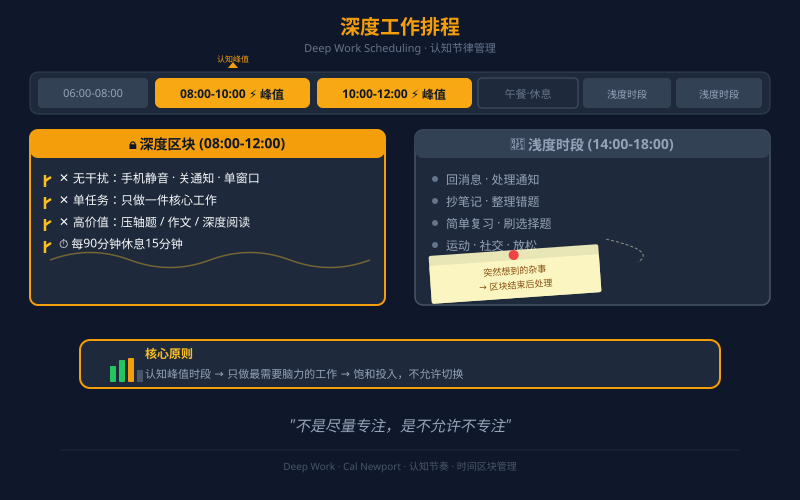
【高阶方法】深度工作排程法——把认知峰值封存给最重要的任务
原理： 卡尔·纽波特在《深度工作》中将人类的工作分为两类：深度工作和浅度工作。 深度工作指在无干扰的专注状态下进行认知强度最高的任务——解压轴题、写作文、理解一个复杂概念、推导一条公式。这类工作需要的是"连续的思考链"不被打断，一旦被打断，恢复需要很长时间。 浅度工作指认知要求低、可以被碎片化执行的任务——回消息、抄笔记、做简单选择题、整理错题。这类工作被打断后几乎可以秒回。 大多数学生的问题不是不努力，而是把深度任务和浅度任务混在一起做。做两道压轴题，刷五分钟手机；写一段作文，看一眼通知。大脑在两个模式之间反复切换，每一次切换都有"切换残渣"——残留的注意力碎片让下一次启动变得更困难。结果就是：深度任务没深入，浅度任务也没高效。 深度工作排程法的核心逻辑是：把这两种本质不同的工作彻底分开。把一天中认知能力最高的时段封存、锁死、只给最重要的深度任务。浅度任务全部塞进认知低谷时段——它们不需要你的大脑火力全开。 操作步骤（4步）：
- 找出你的"认知峰值时段"。 配合精力波动日记的记录，看自己哪个时段最清醒、最专注——通常是上午9-11点或晚上7-9点。精力日记给你的是一张地图，排程法要你在这张地图上圈出"最高点"。
- 把每天认知峰值的前2小时封存为"深度区块"。 手机静音、通知全关、桌上只有当前任务。提前告知家人/室友这段时间不要打扰。这不是"建议"，是"封存"——这个时间段已经被占了，任何人（包括你自己）都不能插进来。
- 深度区块内只做一件事。 不是"做数学"，是"做这道压轴题"；不是"复习物理"，是"理解电学综合题的解题思路"。任务必须具体到一件事。如果走神了——这是正常的——不换任务，做个深呼吸，把注意力拉回来，继续同一件事。注意力的每一次出轨，你都把它领回来。这个过程本身就是深度工作能力的训练。
- 浅度任务全部塞进认知低谷时段。 整理笔记、抄写单词、做简单选择题、归类错题——这些任务不需要"连续思考链"，在精力2-3分的时候做完全没有问题。它们不配占用你的认知峰值。
关键原则： 深度区块不是"尽量专注"，是"不允许不专注"。你选了这两个小时做一件事，其他所有事情——包括"突然想到另一个作业没做"——写在旁边的便签纸上，区块结束后再去处理。便签纸是深度区块的"停车场"，把闯入的想法暂时停进去，两个小时后取出来。 深度工作和浅度工作必须物理分离。不要在深度区块里穿插任何浅度任务，哪怕只是"回一条消息"——一条消息的切换残渣可能耗掉你15分钟的深度注意力。 不是你每天学了多少小时决定成绩，而是你每天有多少小时是真正深度的。 如果做不到： 2小时的深度区块太长了 → 从30分钟开始。30分钟完全专注、没有任何中断，比2小时"边做边走神、中间回了好几条消息"的效果强3倍。等30分钟的深度区块稳定了，再慢慢延长到45分钟、60分钟、90分钟。 深度区块内一走神就想摸手机 → 把手机放在另一个房间，不是放在桌上翻过去。必须让拿手机需要"站起来走出去"这个物理成本——成本高到你的大脑觉得不值得。 不知道哪些任务算"深度"、哪些算"浅度" → 用一个简单标准判断：这个任务被打断后，你需要超过2分钟才能恢复到之前的思考深度吗？需要 → 深度任务。秒回状态 → 浅度任务。
【升阶诱饵】 节奏帮你科学地管理了精力，深度工作排程让你的精力用在了最值得的地方。但学习是要长时间坚持的事，有些人动力满满几天就偃旗息鼓了。学习时完全没感觉，努力了也看不到反馈。动力从哪来？下一章，我们进入"动力"这个核心环节：为什么越学越没劲？ 翻到第13章：反馈——为什么学完没感觉？
三、实践指南
本章核心方法速查表
选方法指南 如果你最大的问题是"开始不了"或"坐不住"：番茄工作法是入门的节律工具。先把大脑训练成能完整跑完若干个25分钟。 如果你可以坐下来但总感觉学不透，有种不过在表面的感觉：你需要90分钟超周期来进入深度。保护一个完整的90分钟，体验真正的深入思考。 如果你日程满满非常忙但效率依然不高，每天累得像狗：你的精力分配可能已经乱套。先停下来花一周绘制精力波动日记，然后彻底重新安排任务。 如果你能专注但专注用错了地方——在精力最好的时候刷题、回消息，在精力最差的时候啃硬骨头：你需要深度工作排程法。把深度任务和浅度任务彻底分开，把认知峰值封存给最重要的那件事。两个高阶方法可以同时使用：精力波动日记告诉你"什么时候脑子最好"，深度工作排程法告诉你"最好的时候该做什么"。 常见误用提醒 番茄工作法的核心不是25这个数字，是"无干扰专注+彻底休息"的节律。不要变相变成刷25分钟手机。 90分钟周期不适合嘈杂、频繁被打断的环境。选择可控的时间段实施。 精力波动日记不是写一次就完了，你的精力会随着睡眠、饮食、运动变化，需要持续关注。 深度工作排程法最容易犯的错：把深度区块塞太满。2小时只做一件事——不是两件事、不是三项任务。如果提前完成了，就做同一主题的延伸，不切换。另一个常见错误：在深度区块内"奖励"自己回一条消息。一条消息的切换残渣足以毁掉整个区块的连续思考。
| 方法层级 | 方法名称 | 一句话 | 适合谁 | 需要多长时间 |
|---|---|---|---|---|
| 简单 | 番茄工作法基础版 | 25分钟专注+5分钟休息 | 很难开始学习、经常分心的人 | 每个番茄30分钟 |
| 进阶 | 90分钟超周期法 | 顺应次昼夜节律的深度专注 | 番茄钟太短、觉得刚进入状态就结束的人 | 每天1-2个周期 |
| 高阶 | 精力波动日记 | 绘制个人精力地图，高能做难事 | 总觉得时间安排不合理、疲惫不堪的人 | 初次绘制1周，后续每周微调 |
| 高阶 | 深度工作排程法 | 把认知峰值时段封存给深度任务，浅度任务塞进低谷 | 深度和浅度任务混着做、不断切换、两个都没做好的人 | 执行期每天封存2小时认知峰值 |
四、本章小结
- 一直学不等于高效学。大脑注意力是波动的，需要顺应节律。
- 深度工作是高效学习的关键，但其持续时间有限，每天最多4-5小时。
- 番茄工作法：25分钟专注+5分钟休息，是入门节律工具。
- 90分钟超周期：顺应人体次昼夜节律进行深度工作。
- 精力波动日记：追踪自身精力变化，高能时段做最难任务——先认识自己。
- 深度工作排程法：把深度工作和浅度工作彻底分开，将认知峰值时段封存给最重要的深度任务——再设计系统。
- 深度区块不允许"边做边走神"；从30分钟起步，完整专注远超碎片化长时。
- 学习的秘诀不是活得更累，而是把有限的能量用在最关键的地方：在对的时间，做对的事，不受打扰。
- 身体和节律的发动机运转起来了，还需要动力燃料。下一章：反馈。
动力篇：点燃引擎，持续学习
动力篇：点燃引擎，持续学习
第13章 反馈：为什么学完没感觉？
探索问题
Q13-1：你理想中每天结束学习时，能用哪一句话来告诉自己"今天没白学"？
Q13-2：你今天划掉了几个已经完成的小任务——划掉的动作本身让你感觉到了什么？
Q13-3：如果让你记录"今天比昨天进步的一点点"，今天的进步藏在哪里？
Q13-4：你觉得自己连续几天看不到任何进步迹象时，内心会发生什么变化？
Q13-5：你希望学习的反馈像游戏里的什么——血条、经验值、成就徽章，还是别的什么信号？
一、为什么越学越没劲
你这周学了整整七天，每晚都坐满三个小时。但周末回头看，觉得什么都没学到。没进步的感觉让你沮丧，下周继续学的动力就小了一截。下下周更小了。最后某一天，你干脆不想打开书了。 《自驱型成长》讲了一个核心定律：人类大脑动力的来源，不是奖励本身，而是"看到了努力的成效"。如果你看不到自己努力带来的任何变化，动力会在几周内自然衰竭。这不是你意志力差，这是神经系统的基本设定。 《教育心理学》里把这种感觉叫作"自我效能感"：一个人对自己完成某项任务的能力的信念。自我效能感高的人，遇到困难时更努力、更持久；自我效能感低的人，即便有能力，也会轻易放弃。而自我效能感最直接的来源，就是"清晰的进步证据"。 你缺的不是努力，是能让你"看见自己在进步"的反馈系统。 学习本身延迟反馈的属性，让大多数人一直在黑暗中摸索，只有到考试那天才被照亮一次——如果考砸了，就是全盘否定。这个反馈频率和反馈方式，本质上无法支撑长期学习。
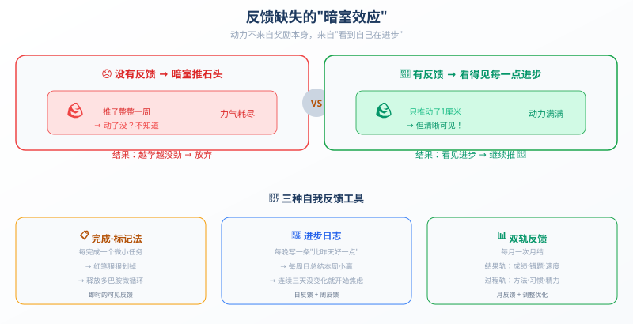
二、怎么建立即时有效的反馈机制
反馈不需要等到考试。你可以在每天的学习中自己制造反馈。下面三个方法，从秒级到日级到周级，全方位让你看见自己的成长。
【简单方法】完成-标记法——让每一个微小完成都变得可见
原理： 《教育心理学》指出，连续强化的效果不如间歇强化，但完全没有反馈的学习是无效的。完成-标记法是最简单的即时反馈：你完成了一个极小的学习单元，立刻做一个标记。这个标记在被看到的一瞬间，大脑会释放一点多巴胺，这就是动力的微型充电。 操作步骤（3步）：
- 把今天的学习任务写在便签纸上，每个任务细到"翻开课本第X页""完成第X小题"。 有多细写多细。
- 每完成一个，用一支红笔狠狠地划掉。 必须是用笔划掉，不只是打勾。划掉的动作本身就有一种心理释放感。
- 每天结束学习时，看一眼这张被你划得密密麻麻的便签纸。 这就是今天你实实在在的学习痕迹。如果决定扔掉它，扔掉前数一数划掉了几个任务。这个数字是今天最直接的反馈。
关键原则： 任务必须微小到很难失败。否则一直被未完成打击。 划的时候要有仪式感，享受这个瞬间。 不要只是心理上打个勾，写下来划掉的物理反馈更强烈。 如果做不到： 找不到便签纸 → 用笔记APP的checklist功能，每完成一项点击打勾带删除线。 每天最后还是会想"今天也没学什么" → 拿着这张纸读一遍划掉的项目，你会发现比想象中做得多。
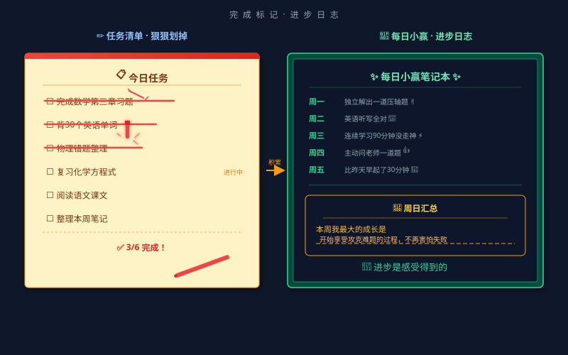
【进阶方法】进步日志——记录每天的微小突破，形成周反馈
原理： 《自驱型成长》建议家长记录孩子每天的一个进步。你完全可以自己做这件事。人类对连续三天没变化就会感到焦虑，但学习的变化是连续但微小的。进步日志强制你每天发现一个微小变化，维持效能感。 操作步骤（3步）：
- 准备一个笔记本或手机备忘录，命名为"每日小赢"。
- 每天结束学习时，写下一件当天学习中发生的"比昨天好一点"的事。 格式："今天在______上，我比昨天进步了一点点，具体是______。" 例如："今天在解二次函数最值的时候，我注意到自己比昨天少看了一次公式。""今天在背诵文言文时，比昨天多记了两句。"
- 每周日回顾本周7条小赢。 在下面写一句："本周我最大的成长是______。" 这一句就是一周的效能总结。
关键原则： 小赢再小都算数。今天多对了一道基础题，听懂了老师讲的一个笑话里的知识点，都算。 必须用文字写下来。留在脑子里等于没有。 写不出来的时候，问自己：今天有没有一个瞬间觉得"哦，原来如此"？有的话就是小赢。 如果做不到： 觉得每天都没小赢 → 先写一个最简单的："今天我坚持坐到了书桌前。" 这本身就是一个胜利。 坚持不下来每天写 → 改为一周三次。减少频率但保持记录的习惯。
【高阶方法】游戏化即时分数学——每做完一个学习单元立刻打分
原理： 游戏让人上瘾的核心是什么？不是画面。不是剧情。是即时反馈——你每做完一个动作，屏幕上立刻跳出"+1"、经验条推进一格、金币数字跳动。这种"立刻看见结果"的机制，就是游戏让人停不下来的神经密码。而学习之所以枯燥，恰恰因为反馈太慢了——今天做的题，可能要等半个月后的月考才知道对不对。这个反馈延迟，让大脑的奖励系统长期处于"等待状态"，多巴胺根本释放不出来。游戏化学习的核心原理就一句话：把反馈从"月考后"拉到"做完后"。每完成一个学习单元，立刻给自己一个分，让大脑当场收到"做对了，继续"的信号。 操作步骤（4步）：
- 每完成一个学习单元（比如做完5道题、背完10个单词、看完一小节课本、做完一个小节练习），立刻给自己打一个分。 1-5分，1=完全不懂，5=完全掌握。打分标准只有一条：如果马上考这个内容，我能拿几分？
- 在旁边的便签纸上画"正"字的某一笔（5分就画完整一笔，3分就画半笔），或者在本子上按科目分别写"+3""+5"。 这个动作本身和游戏里的经验值跳动效果一模一样——你是在给自己制造"即时的数字反馈"。
- 每天结束时，看一眼今天攒了多少分。 这个动作会让你清楚地感觉到"今天没白过"。即使只有两个"+2"加一个"+4"，那也是8个进步点。
- 每周统计本周得分趋势： 哪些科目/题型的得分在上升？哪些在下滑？比如这周物理始终在2-3分徘徊，但数学从3分涨到了4分——这个数据比你任何模糊的自我感觉都更真实，它告诉你哪里在退步需要补，哪里在进步可以维持。
关键原则： 打分别纠结，凭第一感觉。想了超过3秒就写3分，不要内耗。这个分是给自己看的，没人会检查。它唯一的作用是帮你追踪趋势，而不是评判你今天聪不聪明。 连续三天的低分比一次低分更有参考价值——不是你真的变笨了，是这块内容确实需要换一种方法学。 分数的绝对值不重要，趋势才重要。从3分涨到4分就是重大进步。从5分掉到3分就是预警信号。 如果做不到： 觉得"每做完5道题就打一次分"太密了 → 改为"每完成一个25分钟的番茄钟就打一次分"。频率降低，原理不变。 觉得打分太主观 → 数学物理这类科目可以用"做对了几个/一共几个"来辅助判断（比如5道题对了4个→4分，就很简单）。文科类怕主观，就回到上面那条"3秒定分"原则。
三、实践指南
本章核心方法速查表
选方法指南 如果你每天打开书之前就有一种"今天肯定也一样没收获"的无力感：从完成-标记法开始。你需要反馈，哪怕是最简单的反馈。 如果你过一段时间就失去动力，总是周期性的不想学：你需要进步日志。这个周期通常和你对进步感知的滞后有关。 如果你学了一段时间就觉得无聊，或者"感觉学了但不知道掌握得怎么样"：游戏化即时打分给你最直接的答案。它把模糊的"学会了没有"变成清晰的数字，而且当场告诉你——不用等考试。 常见误用提醒 反馈不是用来和他人比较。它是你的私人进度条，只要比昨天的自己进步一丝，就值得标记。 进步日志不要写成检讨。只写正面进步，哪怕很小。负面反思留给错题本和月复盘。 即时打分的分是趋势信号，不是自我审判。连续低分说明方法该换了，不是证明你不行。超过3秒纠结就写3分，立刻跳过。
| 方法层级 | 方法名称 | 一句话 | 适合谁 | 需要多长时间 |
|---|---|---|---|---|
| 简单 | 完成-标记法 | 划掉已完成任务，让每一个小完成可见 | 每天结束时感觉"没干什么"的人 | 每次学习时同步进行 |
| 进阶 | 进步日志 | 记录每天的微小突破，建立周效能感 | 努力了但感觉不到进步的人 | 每晚2分钟 |
| 高阶 | 游戏化即时打分 | 每完成一个学习单元立刻打分，当场看见进步 | 觉得学习枯燥、反馈太慢、容易打瞌睡的人 | 每次学习时同步进行 |
四、本章小结
- 动力衰竭的根本不是不够努力，而是努力了却看不到反馈。
- 自我效能感来自清晰的进步证据。
- 完成-标记法：划掉每一个小任务，制造即时多巴胺微循环。
- 进步日志：记录每天的微小突破，建立稳定的周效能感。
- 游戏化即时打分：每完成一个学习单元立刻打分，把反馈从"月考后"拉到"做完后"，用数字趋势替代模糊感觉。
- 你不需要很强的意志力，你需要一个让自己"看到努力有效"的系统。
- 看到进步了，接下来你可能会想：学习是为了谁？下一章：自主。
第14章 自主：为什么总是被逼着学？
🃏 配套工具卡：[游戏化即时分](cards/card_即时打分卡.svg)
🃏 配套工具卡：[完成-标记法](cards/card_进步日志卡.svg)
探索问题
Q14-1：如果明天没有人催你、没有人检查、没有任何外部压力——你自己会选择先学什么？
Q14-2：你上次完全自愿去做某件事（不限于学习）——那时候你感觉自己在什么驱动下行动的？
Q14-3：你觉得"我能行""我不是一个人""我能为自己做选择"这三样东西，目前哪一样最缺？
Q14-4：你希望在学习中有多少比例的决定是由你自己做出的——大到学什么，小到先做哪道题？
Q14-5：如果你可以重新设计每天的学习任务顺序——完全按你自己的意愿排列，它会是什么样子？
Q14-6：你能说出一个"被迫学的"和一个"主动学的"之间的本质区别吗——不在内容，在感觉上？
Q14-7：你觉得从"要我学"到"我要学"之间，有哪一小步是你现在就可以迈出去的？
Q14-8：你希望在学习这件事上拥有哪一项你目前还没有的选择权？
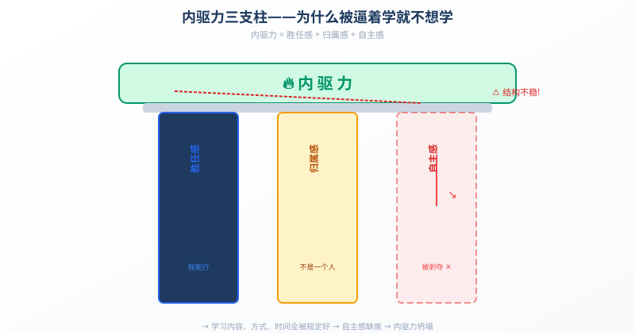
一、为什么一提学习就抵触
你身边一定有两种学生。一种每天早起背单词，没有人催，甚至求着老师给他批额外作业。另一种被家长吼着学、老师盯着学，一到放假书都不想摸一下。你是哪一种？ 如果是后一种，你可能已经给自己贴了标签：“我不自觉”“我没有内驱力”。但《内在动机》的作者爱德华·德西用四十年的研究告诉你：内驱力不是一种性格特质，而是一种心理需求的满足状态。 当三个基本心理需求被满足时，任何人的内驱力都会被激活。这三个需求是：胜任感（我能行）、归属感（我不是一个人）、自主感（我能为自己做选择）。 大多数人失去内驱力，是因为自主感被剥夺了。学习的内容、学习的方式、学习的时间安排，全是被规定好的。当一个人感觉自己的行为是被外部力量控制的，本能反应就是抵触和敷衍。这不是懒，是心理免疫系统在工作。 《内在动机》的核心洞见：在外界控制越来越强的环境里，内驱力的唯一出路，是重新找到你能够掌控的“自主空间”。 这个自主空间可能很小，但必须存在。它是一个火种。
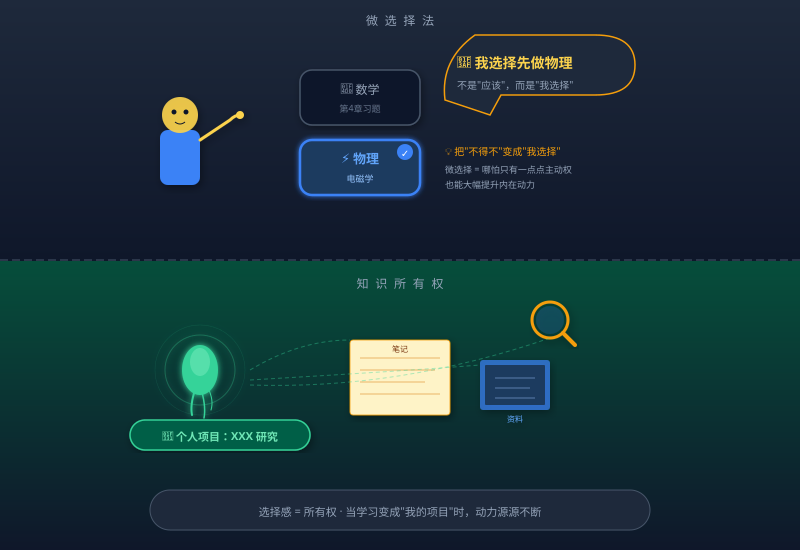
二、怎么拿回学习的“遥控器”
你不能改变学校的课程安排，不能改变考试制度，但你可以改变自己与学习内容之间的关系。自主感不来自“可以为所欲为”，而来自“可以在规定范围内做出属于自己的选择”。
【简单方法】微选择法——每天做一个小小的学习选择
原理： 《内在动机》指出，自主感不是要你推翻整个系统，而是要在系统内找到选择的空间。哪怕最微小的选择，只要是你自己做出的，就能显著提升内在动机。 操作步骤（3步）：
- 每天在开始学习前，给自己一个选择权，而不是被作业清单推着走。 例如：“今晚这两项必须完成的作业里，我想先做哪一项？”“我这个小时可以复习数学，也可以整理物理笔记，我选哪个开始？”
- 大声说出这个选择，哪怕只有你自己听到。 “我选择先做物理，因为我觉得它的笔记比较少，可以先给我一个完成的快感。” 说出“我选择”这三个字，大脑就会启动自主模式。
- 做完之后，回顾一下这个选择带来的感受。 如果是好的感受，记住它：“我今天自己选择先做难的，效果不错，我挺了解我自己的。” 如果不是好的感受，下次就调整选择，你始终拥有选择权。
关键原则： 每天至少做一次有意识的微选择。哪怕只是选择用黑笔还是蓝笔记笔记。 选择可以很小，但必须是你自己的决定，而不是随机的。 允许自己选错。选错了也是一种自主的体验，下次你会更清楚自己的偏好。 如果做不到： 感觉所有的任务都是强迫的，哪个都不想选 → 在两个最不想做的任务里做一个比较：“这两个里面，哪一个稍微没那么讨厌？”这就是一个选择。 做选择也感觉不到自主 → 关键不是选什么，而是你在选之前默念“这是我选的”。语言的暗示会给你自主感。
【进阶方法】自定目标挑战法——在必须完成的任务内嵌入个人目标
原理： 这比微选择更进一步。不只是在顺序上选择，而是在学习任务的内容里嵌入属于你自己的挑战。德西发现，当人们为了内在满足而非外部奖赏做一件事时，表现和坚持度都更高。嵌入个人目标，就是把一件外部要求的事，悄悄变成自己挑战自己的游戏。 操作步骤（3步）：
- 面对一个必须完成的学习任务（如“做完这份10道题的卷子”），问自己：除了完成它之外，我能不能加一个属于自己的小目标？ 比如：“我今天要尝试不看例题完整地做完前5道。”“我今天要把错题减少到2道以内。”“我要找出这道卷子里出题人最喜欢挖的坑是哪个。”
- 这个目标是隐藏的，不需要向任何人汇报。 它属于你。如果达成了，你的感觉是“我达成了自己的挑战”，而不是“我完成了老师的要求”。
- 每周回顾一次：这周我给自己设置了多少个隐藏挑战？完成了多少个？ 这个数字是你自主学习的证据。享受这个只属于你和自己的游戏。
关键原则： 挑战一定是自选的，并且基于对自己的兴趣和弱点的了解。 挑战不能太难，要让自己有大概七成把握能完成。太难了变成焦虑，太简单了没意思。 挑战和老师布置的任务必须同一个方向。你不能为了“挑战”去研究一道不在卷子上的超纲题而放弃做卷子。是在任务过程中完成个人挑战。 如果做不到： 不知道加什么挑战 → 从最简单的挑战开始：缩短时间。“这份作业我预计做40分钟，我想试试35分钟专注做完。” 挑战失败也不要有挫败感，这只是一个附加游戏。
【高阶方法】知识所有权项目——做一个完全由你驱动的深度学习项目
原理： 这是自主感的终极来源：完全由你发起、由你规划、由你执行的一个学习项目。《内在动机》中强调，内在动机的最高形式是“为自己而做”。当你拥有了一个完全属于自己的项目时，你会忘记外部压力，不由自主地投入大量时间精力。你会为了完成它，主动去学原本不想学的东西。 这个项目不需要很大。它只要是你真心想做的。 操作步骤（4步）：
- 找一个你好奇、和学科有关、但不是作业的话题。 比如：历史上某个小人物的一生的细节，某种植物为什么只能在南方生长，某个数学结论如果用在游戏上是什么样，一本你喜欢的英文小说原著。
- 把它定义为你的“个人种子项目”。 给自己一个项目名：“XXX研究”。不是任务，是探索。
- 每周为这个项目保留至少30分钟的时间。 不追求速度，每周推进一点点就好。可以查资料、做笔记、写一点小感想。项目期间你可能会发现需要用到某个学科知识——这时候你学习这个知识的动力是100%内在的。
- 不需要“完成”它。 有些项目会一直生长，那就是你终身的学习伙伴。有些项目你会失去兴趣，那也没关系——那是你自主探索的一部分。重点是，你拥有它。
关键原则： 项目必须是自己的好奇心驱动的，不为了交作业。 项目大小控制在“每周30分钟能推进一点”的范围内。 一个人做，或者和同样对这个话题感兴趣的朋友一起做，不要让大人介入指挥。 如果做不到： 找不到感兴趣的话题 → 翻一下家里的闲书、看一部纪录片、浏览百科网站一个随机词条。好奇心不是你“找”到的，是被你“碰到”的。你得给自己碰的机会。 感觉所有时间都被作业占满没时间 → 先用微选择法腾出一点自主时间的感受。30分钟一定可以找出来。把手机娱乐时间砍掉30分钟，就是项目的土壤。
三、实践指南
本章核心方法速查表
选方法指南 如果你每天的学习感受是“被人用鞭子赶着”：从微选择开始。今天先从这两个作业里选一个自己比较想做的先做。“我选择”这三个字会慢慢改变你和学习的关系。 如果你觉得每天是在完成别人的任务，很想做点自己的事但不知怎么下手：用自定目标挑战法。在自己必须做的事情里找属于自己的乐子。 如果你对某个领域有被压抑的好奇心，但从来没真正开始探索过：开始一个知识所有权项目。给它一个名字，下周就开始。 常见误用提醒 微选择不是拖延的理由。不是在选择“做”还是“不做”，而是在两个必须做的任务之间选择先后或方式。 隐藏游戏不能帮你逃避主业，是让你在主业里获得更多掌控感。 个人项目不需要变成另一个作业。如果不享受就停，不要背着另一种压力。
| 方法层级 | 方法名称 | 一句话 | 适合谁 | 需要多长时间 |
|---|---|---|---|---|
| 简单 | 微选择法 | 每天做一个小学习选择，宣示“我能决定” | 感觉所有学习都是被逼着的人 | 每天1次 |
| 进阶 | 自定目标挑战法 | 在必须完成的任务内嵌入隐藏的个人挑战 | 对任务毫无热情但必须完成的人 | 每次任务前1分钟 |
| 高阶 | 知识所有权项目 | 启动一个由好奇心驱动的个人学习项目 | 彻底失去学习乐趣、觉得学习与自己无关的人 | 每周30分钟 |
四、本章小结
- 抵触学习不是懒惰，而是自主感被长期剥夺后的心理反应。
- 内驱力来自三个基本心理需求的满足：胜任、归属、自主。
- 微选择法：每天有意识地做一个小选择，重获自主感。
- 自定目标挑战法：在外部任务中嵌入自我挑战，把被动变为主动。
- 知识所有权项目：启动一个属于你自己的好奇探索，让学习重新属于你。
- 你不是没有内驱力，只是需要找到能点燃它的自主空间。
- 有了内驱，还需要一个更持久的燃料——为什么而学。下一章：意义。
第15章 意义：学这些到底有什么用？
探索问题
Q15-1：今天学的知识中，有什么能解释一个你真正关心的事物——哪怕那个解释牵强一点？
Q15-2：你希望10年后的自己回头看今天学的某一个知识时，会说出哪句话？
Q15-3：你觉得"为了考试学"和"为了搞清楚一个现象学"——在学习过程中你的投入程度有什么区别？
Q15-4：如果用"园丁浇水"的角度来看你正在学的知识——它在浇灌你大脑的哪一片区域、将来可能会长出什么？
Q15-5：你身边有没有让你觉得"学这个确实有用"的瞬间——那个瞬间知识帮你解决了什么实际问题？
Q15-6：你理想中"有意义的学习"是什么感觉——是每天结束时脑子里多了什么、还是看世界的方式变了什么？
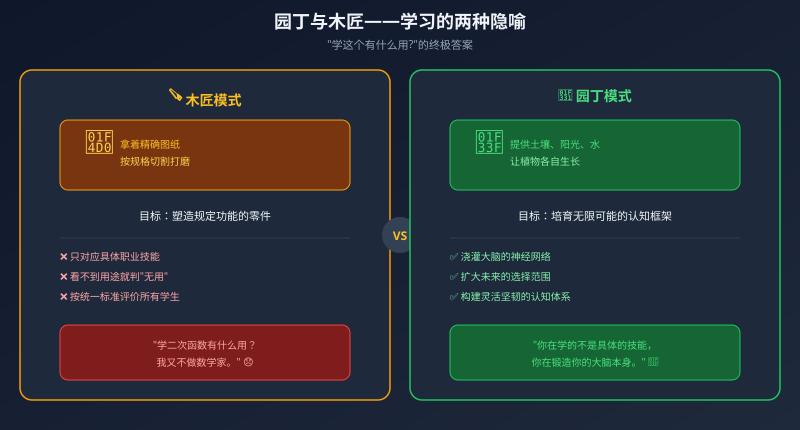
一、为什么“不知为啥学”是最大的动力杀手
“学二次函数能干什么？我以后又不做数学家。” “背古文有什么用？难道买菜要用到吗？” “学物理，我又不当爱因斯坦。” 这些追问，你一定问过。很多人问完没有得到让自己信服的答案，然后就默默把这些问题咽下去，继续被推着走。但咽下去不等于消失。它们一直在暗处消耗你的热情。 《园丁与木匠》这个名字本身就是隐喻：可以把孩子当成木匠活，按照精确的蓝图去切割打磨；也可以把孩子当成花园里的植物，提供土壤、阳光和水，让他们长成自己的样子。这本书指的不是“放任不管”，而是教育的本质不是塑造规定功能的木匠模式，而应该是培育无限可能的花园模式。 你因为看不到手中知识的具体用途，就用木匠思维下判断自己正被塑造成某个功能部件，自然觉得无意义。但如果视角换成园丁模式，每一点知识都是在浇灌你大脑的神经网络，扩大你未来选择的范围和解决问题的能力。 《园丁与木匠》的核心启示是：学习的意义不是去对应每一个具体职业的技能，而是去构建一个灵活、坚韧、有无限可能的认知框架。 你在学的不是具体的技能，你在锻造你大脑本身。
二、怎么重建学习的意义感
意义不是被说教出来的，是你自己联结起来的。下面三个方法，帮你把正在学的东西和更大的世界、更远的未来，以及你自己的内心连接起来。
【简单方法】两个世界的桥梁——每天一个“这个知识能解释什么”
原理： 很多时候你觉得学和用是分裂的，因为你没有在学和用之间建立观察的习惯。每天只需要找到一点点连接，就能慢慢修复这种断裂感。 操作步骤（3步）：
- 每天在结束学习时，选今天学的一个知识点。
- 用它解释一个你所关心的世界里的东西。 注意，是你关心的事，不是老师或家长关心的。范围极其宽：可以解释一个网络现象（“这个谣言为什么传播得这么快，可以用物理的链式反应解释吗？”），解释一个游戏机制（“这个装备的性价比可以用数学的优化模型来算吗？”），解释你身边人的行为（“她为什么那样说，跟历史课讲的群体心理有关吗？”）。
- 写一句话在纸上或者手机里： “今天我学了______，它让我想通了______。” 这句就是意义桥梁。
关键原则： 必须是你自己关心的世界，而不是大人觉得你该关心的。 解释不要求深入或者正确，只要求连上了。哪怕强行附会，也比放着两条平行线好。 一句话就够了，不要扩展成作业。 如果做不到： 完全想不出能解释什么 → 那就反过来：身边随便一件事，问“能用今天学的哪个知识来解释一点点？”先有目标再有知识匹配。 觉得都无关 → 想想今天学的东西发展的历史中，有什么人曾经和你一样疑惑？读他们的故事，会发现他们当时也看不到用途。连接上历史上的人，也是一种意义。
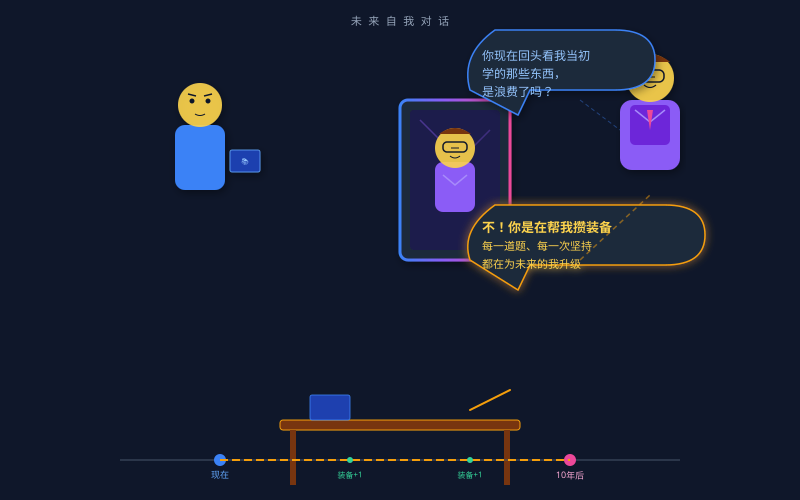
【进阶方法】未来自我对话——定期和未来的自己对话，校准方向
原理： “学这个有什么用”的潜台词是“对我未来有什么用”。但未来太抽象了。你需要把未来的自己变成一个具体可对话的对象。 心理学期刊中关于“未来自我连续性”的研究表明，与未来的自己建立更强的联结感，可以有效提升当下的自律和延迟满足能力。因为你不再为一个模糊的“未来”牺牲当下，而是在为一个你深切关心的朋友——未来的自己——做准备。 操作步骤（3步）：
- 找一个安静的时间，闭上眼睛，想象10年后的你。 想象得越具体越好：你在什么地方？穿着什么？周围什么声音？在做什么工作或事情？你脸上的神情是怎样的？
- 和这个未来的自己进行一个简短的“内心对话”。 问他/她：“你现在回头看，我当初学______的那些时间，你觉得是浪费了吗？还是暗中帮了你什么？” 听一听他/她可能怎么回答。
- 把听到的回答写下来。 比如：“我当初觉得没用的物理，后来在做影视特效的时候发现那些力学直觉很重要。你是在帮我攒装备。” 这个过程是向内挖掘你对未来的真实愿望，不是别人强加的答案。
关键原则： 不要站在现在的立场批评未来的自己幼稚，或未来的自己批评现在的自己不上进。这是一次平等的交流。 如果10年太远，先做3年后的对话。 对话结果不用每天做，重大的意义感重塑一年做两三次就够了。 如果做不到： 完全想不出10年后的自己 → 先想象1年后考上理想学校（或任何你渴望的下一阶段）的自己。问一年后的自己：“半年前物理课上学的东西，在入学后有帮助吗？” 觉得对话是假的，都是自己想出来的 → 本来就是你自己的内心投射。它的价值在于把你潜意识里的愿望外显出来，让你看清自己最在意什么。
🃏 配套工具卡：[未来自我对话](cards/card_对话引导卡.svg)
【高阶方法】知识传记——为一个知识点撰写一份个人传记
原理： 《园丁与木匠》强调，意义存在于故事中。对于某个你特别抗拒或特别热爱的核心知识（定理、公式、历史事件），把它看作是有一个生命历程的角色，为它写一份简单的传记。在做的过程中，你会自然地理解它是从哪里来的、解决了什么问题、为什么有人要发现它、它在历史中打开过哪些门。 这个做法把枯燥的符号还原成人类的奋斗和智慧故事，意义自然就浮现了。 操作步骤（4步）：
- 挑一个你“恨之入骨”或“充满好奇”的核心知识。 比如“二次函数”、“元素周期表”、“鸦片战争”。
- 用搜索或查书，回答关于它的五个“传记问题”：
它是什么时候、由谁、在什么背景下被发现的/发生的？ 它出现之前，人们在这个问题上遇到了什么困境？ 它的出现，最初解决了什么关键问题？ 后来它被用到过哪些意想不到的地方？（这是最有趣的部分） 如果这个知识从来没有被发现/发生，今天的某个领域会有什么不同？
- 把这个传记写在一张纸上，500字左右。 不是给老师交作业，是给你自己看的。用故事的口吻。
- 最后写一句结语： “了解了它的身世后，我觉得它对我而言意味着______。”
关键原则： 挑选一个你最纠结的知识来做。感情的投入会让传记写得更好。 不需要学术严谨，允许有想象和夸张。 只做一次，但可以为你打开一扇门。之后你可能偶尔会想给别的知识也写一份。 如果做不到： 五个问题查不到 → 查不到也是故事的一部分：为什么一个知识点会变得难以追溯？但你可以查它诞生的大时代背景，那个时代最关心什么？ 觉得写传记浪费时间 → 降级版本：只回答一个问题“它最初解决了什么具体问题？”知道这一点，足够让很多“无聊”知识重获生命。
【升阶诱饵】 意义让你的学习有了北极星。但所有的系统都需要驾驶者。学到的记忆、理解、应用、专注、动力，都需要一个更高的驾驶舱来监控和调整。你是否有过不知道自己哪里不会的时候？是否明明很努力方法却不对？ 下一环节，我们进入整个学习系统的顶层——调节。首先解决的是：不知道自己哪里不会怎么办？ 翻到第16章：元认知监控——不知道自己哪里不会怎么办？
三、实践指南
本章核心方法速查表
选方法指南 如果你最常问的问题是“学这个到底干什么”：从每天的桥梁开始。让一点一滴的联系累积成新的认知。 如果你觉得学习完全是被动的，对未来一片模糊：找时间做一次未来自我对话，让你真正在乎的未来愿景浮现。 如果你对某门课已经形成了“我就是学不会也不想学”的固执念头：给那个学科里一个核心知识写份传记。当你看到它也是有血有肉的，情感上的抵触会溶解。 常见误用提醒 桥梁练习不是作业，不需要论证。模糊的直觉就足够。 未来自我对话时，如果浮现出“躺平”的未来画面，也去对话，不要审判。躺着的人背后必然也有过挣扎。理解自己的渴望，哪怕那是休息的渴望。 知识传记不要写成百科词条，要有故事性。试着找到那个发现时刻的人的激动或失望。
| 方法层级 | 方法名称 | 一句话 | 适合谁 | 需要多长时间 |
|---|---|---|---|---|
| 简单 | 两个世界的桥梁 | 每天用一个知识点解释一件你关心的事 | 觉得学的东西和现实脱节的人 | 每天1分钟 |
| 进阶 | 未来自我对话 | 想象和未来的自己对话，找到当下的意义 | 找不到长远学习目标的人 | 每学期1-2次，每次15分钟 |
| 高阶 | 知识传记 | 为一个知识写份传记，看见它背后的故事 | 觉得某个学科特别枯燥无趣的人 | 每份传记1小时 |
四、本章小结
- “学这有什么用”的困惑是压垮动力的最后一根稻草。
- 学习的根本意义不在于一个个具体工具，而在于塑造可迁移的认知系统。
- 两个世界的桥梁：每天用一个知识点解释一件你关心的事，重建连接。
- 未来自我对话：和未来的自己对话，把模糊的未来变成值得为之奋斗的对象。
- 知识传记：为一个知识写传记，把它还原成人类奋斗的故事。
- 意义不是你等来的答案，是你自己构建起来的连接。
- 有了意义感，你需要一个系统来确保自己航行在正确的方向上。下一章：元认知监控。
调节篇：驾驭系统，学会学习
第16章 元认知监控：不知道自己哪里不会怎么办？
探索问题
Q16-1：你希望在学习前、中、后分别问自己哪三个问题来保持"第三只眼"的在线？
Q16-2：回顾一道你做错的题——当时你"以为自己对了"的依据是什么？那个依据现在看哪里站不住脚？
Q16-3：你觉得"感觉复习得全面了"和"真的复习得全面了"之间，可以用什么方式来检验？
Q16-4：你希望在每天的学习结束时，能够准确地说出哪件事——是"我今天学了什么"还是"我今天哪里还模糊"？
Q16-5：如果你能看见自己正在学习的样子（像看监控录像一样），你觉得自己会在哪一刻皱眉——哪一刻是你其实没懂但以为自己懂了的？
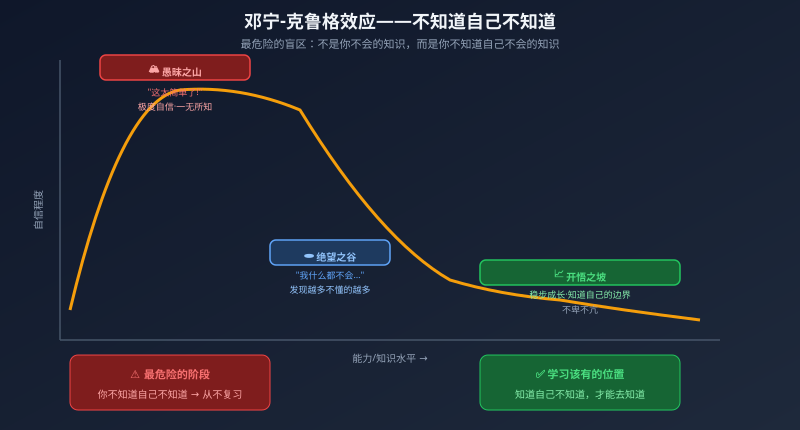
一、为什么最危险的不是“不会”，而是“不知道自己不会”
有一个经典的心理学实验：给一群学生做一套逻辑题，做完让他们估计自己的得分。结果，实际得分最差的那批学生，对自己得分的预估却最高。他们不仅做错了，还完全不知道自己错在哪里，甚至坚信自己答得很好。 这就是“邓宁-克鲁格效应”：能力越低的人，越难以识别自己的不足。 不是他们傲慢，而是他们缺乏“识别错误”所需要的元认知能力。 《认知觉醒》把元认知定义为“对自己认知的认知”，也就是你站在高处看自己学习过程的能力。上课听不懂时，差生和优生的反应截然不同：差生说“这课太难了”，优生说“我卡在了第二步和第三步之间，因为我对转化那个概念不清晰”。差生没有能力分解自己的不懂在哪里，只能归咎于笼统的“难”。 《这才是心理学》强调了批判性思维的重要性：要学会区分“我感觉”和“事实是”。你感觉复习得全面了，但事实可能是你一直在重复复习自己已经会了的部分，因为那些让你舒适。你感觉听懂了，但真做起来发现不对。 学习中最危险的盲区，不是你不会的知识，而是你不知道自己不会的知识。 那些你不知道自己不知道的部分，永远不会出现在你的复习计划里，然后在考场上给你致命一击。
二、怎么培养“看见自己”的能力
元认知就像自己的第三只眼。它是可以训练出来的。下面三个方法，帮你从不同角度打开这个观察窗。
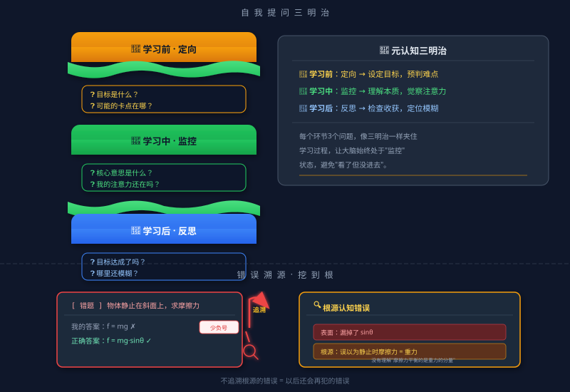
【简单方法】自我提问三明治——在学习的前中后问自己问题
原理： 《认知觉醒》中提出，元认知能力的主要体现是“自我觉察”和“自我提问”。在没有其他人给你反馈时，你可以通过一套标准化的提问框架来引导自己进行元认知加工。 操作步骤（3步）：
- 学习前问（计划阶段）： “关于这个主题，我已经知道了什么？我这次学习的目标是什么？最容易让我卡住的地方可能是哪里？” 用30秒在脑中过一遍。
- 学习中问（监控阶段）： 每隔一段时间，暂停一下，问自己：“我刚才读的/听的那段，核心意思是什么？我用自己的话能说出来吗？我现在注意力还在吗？我是不是又在反复读同一段？” 如果答案是否定的，立刻调整。
- 学习后问（评估阶段）： “我今天学习的目标达成了吗？哪个部分我还是觉得很模糊？如果让我明天给别人讲，我最讲不清楚的是哪里？”
关键原则： 这三个环节必须确实提问。开始时可以把问题写在纸条上贴在书桌前，直到成为自动思维。 监控阶段的问题是为了及时发现自己走神或陷入流畅性错觉。 评估阶段的问题要诚实回答，诚实是最重要的元认知品质。 如果做不到： 学的时候全忘了提问 → 先只做学习后评估。坚持下去，尝到甜头后自然会想在学习中做调整。 评估的时候发现都是模糊的 → 说明你刚刚的“学习”可能根本没在认知层面发生。去重新学，只聚焦在最模糊的那个小点上。
【进阶方法】错误溯源法——不是订正错误，是追溯错误的认知根源
原理： 大部分学生订正错题时只做表层修正：“哦，这里少了个负号，下次注意。”但负号为什么少？不是你粗心，而是你在某个概念理解上有了一个微小的偏差，这个偏差导致了后续所有提取的误差。《这才是心理学》强调辨别真相关注因果机制，错误溯源的目的是找出真正的病因。 操作步骤（4步）：
- 拿到一个错题，先不要急着抄到错题本上。 先问自己：“当时我为什么那么做？” 把当时自己的思路完整写下来，哪怕很可笑。
- 对比正解，找到分歧点。 是你的解题思路在第一步就和正解不同，还是在某一步出现了偏差？圈出这个分岔路口。
- 问更深一层的问题： “我当时那样想的依据是什么？这个依据在这个条件下为什么不对？是我记错了公式，还是误解了题里的一个限制条件？是我跳过了某步推导直接靠直觉猜的吗？”
- 在错题本上用一句话写下“根源认知错误”： 例如：“我误以为物体静止时摩擦力一定等于重力，忽略了斜面分力。” 而不是写“忘了分析斜面”。
关键原则： 每次追溯必须抵达一个具体的认知错误（概念误解、条件忽略、步骤跳跃等），不能停在“粗心”或“没看清”。 如果你追溯不到认知错误，那道题可能只是真的看错了数字的低级错误，不用深挖。 反复出现的同一认知错误，就是你的系统bug，专门记录在“盲点本”上。 如果做不到： 想不起自己当时怎么想的 → 从正确答案反向推导，猜测最可能的错误思路。常见错误路径就那么几条，你大概率中了其中之一。 追溯出来都是“我蠢” → 把“我蠢”替换成“我的哪个知识假设错了？” 知识假设是可以修正的，自我贬低只会关闭修正的开关。
【高阶方法】旁观者日志——用“旁观者”视角写学习日志
原理： 《认知觉醒》中有一个提升元认知的核武器：练习把自己当成一个旁观者来观察自己。你需要从“我”这个角色中走出来，像一位学习顾问一样审视“那个学生”的学习过程。 这个方法的高级之处在于，当你以第三人称去描写自己时，大脑的情绪中心会降低活跃度，分析中枢会更易触及。很多你自己看不清的问题，切换成第三人称后突然一目了然。 操作步骤（4步）：
- 每周挑一天，以旁观者的口吻写一篇学习观察日志。 不要用“我”。用“他/她”或者你的名字来代指自己。例如：“小明今天下午计划复习物理，但他先是花了20分钟找笔，然后又花30分钟看了会儿课外书，等到真正开始做题时已经4点了。”
- 记录下你观察到的三件事：
今天“那个人”在学习中做的一个有效动作。 今天“那个人”在学习中的一个低效或拖延模式。 今天“那个人”在遇到困难时的反应（放弃了？求助了？骗自己懂了？）。
- 观察之后，给“那个人”一个下周的小建议。 例如：“建议小明把找笔这件事放在前一天晚上完成。建议他在遇到卡点时设一个5分钟的思考上限，超时就看答案。”
- 下周开始执行旁观者给自己的建议。 你不是给自己下命令（容易抵触），而是在执行一个观察者给一位朋友的建议（容易接受）。
关键原则： 必须用第三人称。这是这个方法生效的关键心理机制。 观察要具体，不能泛泛而谈“他今天效率低”。要说“他在做选择题时因为手机震动看了三次屏幕”。 给建议时要友善，像给好朋友提建议那样。 如果做不到： 第三人称写起来很奇怪 → 坚持写三次，你会发现大脑开始进行一种奇妙的抽离和冷静。 觉得没什么好观察的 → 那就描写他今天学习时最真实的1分钟：那1分钟里他的手在哪，眼睛看哪里，脑中飘过什么念头。细节足够多就有观察材料。
三、实践指南
本章核心方法速查表
选方法指南 如果你面对错误或考试失利只会笼统地说“我没学好”：从自我提问三明治开始，训练自己把“不会”具体化为可描述的问题。 如果你有一个屡改屡错的老毛病：使用错误溯源法。找到那个认知根源bug，一次修正。 如果你觉得已经拼尽全力但成绩还是不上不下：你可能陷入了自我感动的低效模式，而没有旁观者视角看清自己。试试旁观者日志，可能会被第一周的观察惊到。 常见误用提醒 三明治提问法不要变成自我审判。监控是中性观察，不是骂自己。 错误溯源的目的不是追责而是追溯。找到认知源头后你会恍然大悟，而不是垂头丧气。 旁观者日志不是写给别人看的，是写给你自己看的。真诚第一。
| 方法层级 | 方法名称 | 一句话 | 适合谁 | 需要多长时间 |
|---|---|---|---|---|
| 简单 | 自我提问三明治 | 学前问目标、学中问注意、学后问收获 | 不知道自己哪里不会，学习像在混 | 每次学习前后各1分钟 |
| 进阶 | 错误溯源法 | 不订正题目，追溯错误背后的认知根源 | 同一错误反复犯、只会写“粗心”的人 | 每道典型错题5分钟 |
| 高阶 | 旁观者日志 | 用第三人称记录学习行为，给自己提建议 | 总是自我感动但又觉得没进步的人 | 每周一次，15分钟 |
如果方法用了两周还是没效果
原理：
你满怀期待地试了一个新方法——12121复习、合书拷问、费曼技巧——坚持了几天，翻开卷子一看：分数没变。你心里那个声音马上跳出来了："你看吧，我就说我不行。"
等等。先别给自己判死刑。
大多数时候，方法没效果，问题不出在"方法错了"，而出在"你还没真正用上它"。这不怪你——任何新方法都需要一段适应期，而你的大脑天生抗拒变化。它宁愿你回到老路上（无效但熟悉），也不愿意你走新路（有效但陌生）。
自检三问——在换方法之前，先问自己这三句话：
第一问："我真的每天都用了吗？"不是"用了三天然后因为作业太多断了"——是连续地、稳定地、把它嵌入日常节奏地用了14天。
第二问："我用的剂量对吗？"12121的复习间隔拉对了没？合书拷问是不是每次都只看不写？费曼讲解是不是说到一半就自己翻书了？很多人用了方法的"名"，没用方法的"实"。
第三问："我有没有跟着'如果做不到'的兜底方案降级过？"书里每个方法都配了降级版——简单方法太简单了你看不上，一上来就挑战高阶版，难度爆了，放弃了，然后说"这方法不适合我"。
🃏 配套工具卡：[错误溯源法](cards/card_错题追溯卡.svg) 换个角度说这件事：大多数时候不是你选错了方法，而是你选错了这个方法的"难度档位"。一个方法有三种档位——简单、进阶、高阶——不是让你三选一，是让你从简单开始，顺了再升档。你直接从高阶起步，摔了，这不是方法的问题，是起步档位的问题。
操作步骤（三步）：
- 先不急着换方法，先换"剂量"。同一个方法，频率调一调（每天变隔天？每次5分钟变15分钟？）、时长调一调、环境调一调。比如12121复习法，如果你每次都超时（说明你在"重新学"而不是"复习"），把每次时间砍到3分钟；如果你总是漏掉复习节点（说明节奏太密），把间隔拉长到2天/10天/20天/40天试一轮。
- 调完剂量后，给自己定一个硬规矩：试满14天再评判。大脑适应一个新策略需要时间，3天就换等于什么都没试。14天是最低实验周期。过了14天还不行，才算"这个方法对我确实不适用"。
- 如果真的不适合，别硬扛。这不是你的失败。是方法和你的认知风格不匹配——内向的人可能更适合"合书拷问"（自己跟自己对话），外向的人可能更适合"费曼技巧"（对着别人讲）。没有哪个方法是"需要的人格"才能用的。工具箱里有20个方法，你不需要全部用，找到3到5个真正顺手的，就已经很强了。
关键原则：
方法失败不是你的失败。是方法和你不匹配。换一个就行。
如果做不到：
如果你试了三个方法，每个都试了14天，都不行——那问题可能不在"方法选错了"，而在你对"有效"的标准设得太高了。学习方法不是药片——吃下去一天就退烧。学习方法更像锻炼——第一个月你甚至看不出变化，但三个月后回头看，你已经不在同一个地方了。降低对"见效速度"的期待，其实你已经比昨天的自己多记住了一些东西。
如果换个方法继续卡住——回到第18章。那里有一个"个人配置"的框架，专门帮你根据自己的五大学习特质，拼出一套专属于你的方法组合。不是"这本书告诉你该怎么做"，是"这本书帮你找到你该怎么做"。
四、本章小结
- 元认知是站在高处看自己学习的能力，是成绩分化的根源之一。
- 最危险的盲区不是你不会的知识，而是你不知道自己不会的知识。
- 自我提问三明治：用学前、学中、学后三组问题建立元认知框架。
- 错误溯源法：透过每道错题找到背后的认知错误，修正根源。
- 旁观者日志：用第三人称观察学习行为，打破自我感动和自我苛责。
- 看到自己的学习过程，才能改进这个过程。
- 看清问题之后，是执行问题——为什么计划总完不成？下一章：计划。
第17章 计划：为什么计划总完不成？
探索问题
Q17-1：你最不想做的那项任务，能不能被压缩到一个"只要两分钟就能宣布胜利"的启动动作？
Q17-2：如果你的计划从"我要复习数学一小时"变成"当吃完晚饭、我就坐到书桌前翻开数学书"——你觉得差距在哪里？
Q17-3：你觉得一个"能完成的计划"和一个"总被打脸的计划"之间，缺的到底是意志力还是设计方式？
Q17-4：你希望每天结束时，如何判断今天的计划算"完成了"——是看任务量还是看启动次数？
Q17-5：你能为下周最常导致你计划崩塌的"那个时刻"预设一句"如果______，我就______"吗？
Q17-6：你的计划表上，每一个任务旁边有没有写清楚"在什么时间、什么地点、用哪本书的第几页开始"？如果没有，你觉得补上之后会怎样？
一、为什么你的计划总是第一天就打脸
周日晚，你列了一份完美的下周计划。每天什么时间段做什么科目，甚至标好了多少分钟完成几道题。你信心满满。 周一，第一项按时完成了。第二项就晚了20分钟。第三项干脆被冲掉了。然后你安慰自己，明天补回来。但周二更糟。周三你连看都不太想再看那张计划表了。周末，你默默把那张纸揉掉，觉得自己无可救药。 如果你有过这种经历，问题大概率不在你身上，而在你的计划方式上。 《掌控习惯》的詹姆斯·克利尔把这种计划称为“目标型计划”：关注的是你想要达成的结果。而真正能完成的计划，是“系统型计划”：关注的是你将要在什么时间、什么地点、具体进行什么行动。前者的失败率极高，因为结果受到太多不可控因素影响；后者只需要你完成一个具体动作，动作完成了就是成功。 《福格行为模型》的BJ·福格博士更进一步：任何行为的发生，都需要三个要素同时出现——动机、能力、提示。计划失败，往往是因为你安排了在动机不足时、能力不够时、或者没有明确提示时去完成一个行为。 计划完不成，不是意志力缺陷，而是行为设计不科学。
二、怎么设计一个“能完成”的计划
下面三个方法，从微小习惯到周计划设计，帮你彻底摆脱计划焦虑。
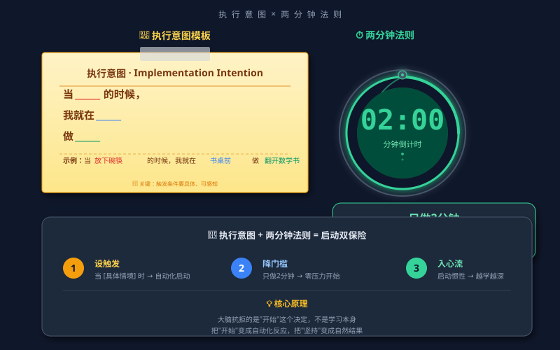
【简单方法】两分钟法则——用一个低到不可能失败的动作启动
原理： 《掌控习惯》中最简单的策略：当你计划养成一个习惯或开始一项任务时，把它压缩到只需两分钟甚至更短。不是“复习物理一小时”，而是“翻开物理课本翻到上次那一页”。不是“背50个单词”，而是“打开单词APP”。当这个两分钟的动作完成后，你自然有动力继续做下去——启动是最难的一步，一旦启动，动机会跟进。 操作步骤（3步）：
- 把今天清单上最不想做的那项任务，分解到“启动只需两分钟”的程度。 例如，不想写作文 → “打开文档，写下标题，写下第一个词。”
- 告诉自己：我只需要做这个两分钟的动作。 做完如果不想继续，可以停止。允许自己有退路，反而会减少开始的抗拒。
- 两分钟后，观察自己的状态。 通常你会发现，既然已经打开了，不如再多做五分钟。这个五分钟再往前走，也许就变成了一小时。你不是靠意志力完成的，而是靠物理学上的惯性。
关键原则： 动作必须确实只需两分钟甚至更短、极其容易。 允许自己做完两分钟就停。只有真正允许自己停，才能无负担地开始。 每天用两分钟法则启动最困难的那项任务。 如果做不到： 连两分钟都不想做 → 降到一分钟：穿上鞋坐到书桌前。一分钟后随你。 两分钟做完还是不想继续 → 那就停，但今天你已经成功完成了“翻开”的动作，把它划掉。明天再来。
【进阶方法】执行意图——为每一项计划绑定“当……我就……”
原理： 《福格行为模型》中提出，提示是行为发生最强的触发器。模糊的计划（“我下午复习数学”）失败的原因是没有具体的时间和情境触发器。使用“执行意图”的格式——“当X情况发生时，我就做Y行为”——可以为你的计划建立明确的触发条件，大脑对这样的指令响应得更好。 操作步骤（3步）：
- 把下周要做的每个学习任务，都套入格式： “当______的时候，我就在______做______。”
- 例子的对比：
模糊：“明天背英语” 执行意图：“当我明天早上下课回到宿舍的时候，我就在书桌前打开英语课本背10个单词。”
- 为可能出现的障碍也预设执行意图： “如果有人叫我打游戏，我就先背完5个单词再去。” “如果我觉得今晚太累了什么都做不了，我就只做一页练习题。”
关键原则： 时间和地点必须明确，明确到没有思考余地。 预设障碍的意图非常强大，能让你在意志力最低的时候依然被模式驱动。 一开始只为最重要的3件事设置执行意图，不要全部一起改。 如果做不到： “当……的时候”找不到具体情境 → 用现有的固定事件做锚点：“吃完午饭回到座位上时”“洗完澡走到房间时”“闹钟响第二遍时”。 预设障碍时想不出有什么障碍 → 问你最了解你的朋友：“你觉得我可能会在哪一步搞砸？”他们往往一针见血。
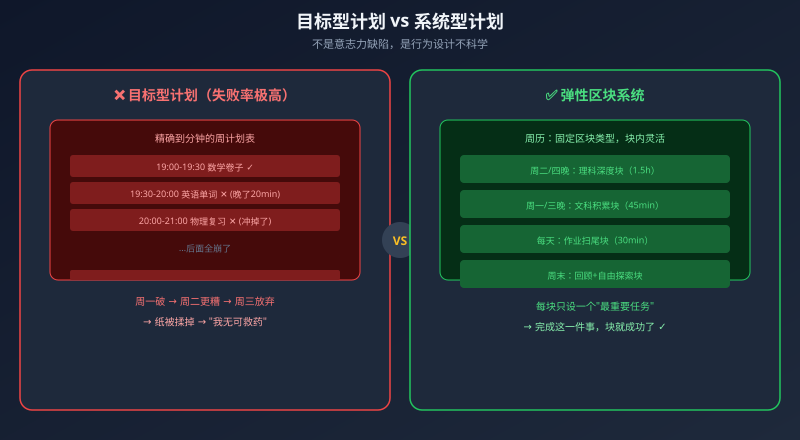
【高阶方法】弹性区块系统——用“块”代替“点”做计划
原理： 《掌控习惯》和《搞定》的共同点是：真正持久的是系统，不是一次性的计划。弹性区块系统是把每周划出几个固定区块用于某种类型的学习（比如：周二四晚是理科块，一三晚是文科块，周末早晨是回顾块），而不是给每个小时排满精确任务。区块内具体做什么，由当天的“能量地图”（第12章）和“本周优先级”来临时决定。 这个系统既保持了结构带来的方向感，又保留了应对变化和状态的弹性，极大减少计划被打乱后的挫败感。 操作步骤（4步）：
- 用一张纸画出你一周所有可利用的学习时段。 把固定的课和必须做的事情先圈掉。
- 把剩余时段划分成不超过4种“学习区块类型”。 例如：“理科深度思考块”（1.5小时）、“文科积累块”（45分钟）、“作业扫尾块”（30分钟）、“自由探索块”（留给你的个人项目或薄弱点）。
- 把每个类型块填入你的周历里固定的位置。 每周到这个时间，就做这类事。但这块具体做数学的哪一章、物理的哪部分题，取决于你周初对这个区块设定的“本周最优先”。
- 块内保持灵活性。 如果你状态极差，可以在“深度思考块”里做一些相对浅一点的该学科的整理工作。但块的性质大概不变，这是骨架。
关键原则： 区块类型不要超过4种，否则失去了组的简洁性。 每个区块的时长固定，养成节律。 每周回顾时调整区块的分配，如果发现某类区块总是完不成，就缩短它或把它放在精力更好的时段。 如果做不到： 我的学校把所有时间都排满了 → 你要找的是晚自习的分配、周末的分配。即使学校有排表，你依然可以在学校排定的自习课时内，用你自己的区块思维去主导那段时间，而不是被动地拿起什么做什么。 区块划分后还是不知道做什么 → 在周初的时候，给每个区块只写一个“最重要的任务”。它只需要完成这一个，这个块的使命就完成了。
🃏 配套工具卡：[弹性区块系统](cards/card_弹性区块表.svg)
三、实践指南
本章核心方法速查表
选方法指南 如果你每天最大的问题是“开了头”，计划死在第一步：用两分钟法则。别的不说，先骗自己翻开这一页。 如果你能开始但经常忘记，计划表贴在那但总不照做：用执行意图。把计划和上午起床、下午回家等确定的事件绑定。 如果你是完美计划型人格，容易因为一个环节打乱就全盘放弃：拥抱弹性区块系统。用一种更放松也更高级的方式管理自己。 常见误用提醒 两分钟法则的“两分钟”是真实的两分钟，不能暗自偷换成“至少半小时”。 执行意图要写下来，并贴在你每天能看到的地方，否则大脑还是会遗忘。 弹性区块有其最低底线：每个区块必须有一个最重要的任务。否则弹性会滑向散漫。
| 方法层级 | 方法名称 | 一句话 | 适合谁 | 需要多长时间 |
|---|---|---|---|---|
| 简单 | 两分钟法则 | 把任务压缩到2分钟启动，用惯性带动后续 | 畏难拖延、迟迟不能开始的人 | 每次启动时 |
| 进阶 | 执行意图 | 用“当……我就……”给计划绑定时空触发器 | 计划模糊、经常忘记或开始不了的人 | 计划时多花2分钟 |
| 高阶 | 弹性区块系统 | 用区块代替精确安排，有结构又有弹性 | 完美主义、计划被打乱就崩溃的人 | 每周规划时15分钟 |
四、本章小结
- 计划完不成不是意志力差，是计划设计没有符合行为发生的规律。
- 行为=动机+能力+提示。计划应聚焦于增加提示、降低行动门槛。
- 两分钟法则：将任务浓缩至2分钟可完成的启动动作。
- 执行意图：“当……的时候，我就……”为计划建立明确的触发机制。
- 弹性区块系统：用学习类型区块取代精密时间表，在稳定中保持灵活。
- 好的计划是把你引导到行为面前的通道，不是捆住你的锁链。
- 现在你已经有了自己的学习系统，最后一步是让它能跟着你一起成长。下一章：自我迭代。
第18章 自我迭代：学习方法千人千面，你的那款在哪？
探索问题
Q18-1：你希望两周后回头看今天试的这个方法时，能对自己说出哪句判断——"适合我""不适合我"还是"一半一半"？
Q18-2：你觉得自己上午的头脑和晚上的头脑在学同一内容时有什么不一样的感受？
Q18-3：你学习时需要的是绝对安静、背景白噪音，还是有人的咖啡馆环境——你注意到自己在哪种声音环境下最专注？
Q18-4：你能连续专注多久而不会感到脑袋发胀——这个时长在不同的学科上有差别吗？
Q18-5：你希望打造一套什么样的"个人学习配置表"——上面应该记录你的哪些特质、匹配哪些方法？
Q18-6：你试过但放弃的某个方法——它到底是在哪一点上和你的习惯或性格"打架"了？
Q18-7：如果你用做科学实验的心态来对待"尝试新学习方法"（假设、测试、记录、结论），你觉得会发生什么不同的结果？
Q18-8：你觉得一个方法在你的生活中能坚持两周以上的关键是什么——是效果、是省力、还是让你觉得有意思？
一、为什么别人好用的方法，在你这里不管用
网上流传着无数高效学习法。费曼学习法、番茄工作法、康奈尔笔记法、间隔重复……你都试过。有的试了一周，没有任何感觉；有的甚至让你比原来更难受。 然后你开始怀疑：是不是自己太笨了，连别人的方法都用不好？ 《性格修正》告诉我们一个被忽视的事实：没有一种学习方法是适合所有人的。 你的性格、你的注意力类型、你的敏感点、你的生活节奏，都是独一无二的。一个外向的人需要用讨论来内化知识，一个内向的人可能更需要独处和写作。一个高敏感人可能在嘈杂环境完全无法学习，另一个低敏感人反而需要一些背景音来集中注意力。 《分心不是我的错》对注意力缺损（ADD/ADHD）人群的研究更清楚地表明：对注意力特质不同的人来说，“标准的”学习方法可能完全适得其反。强迫自己用不适合的方法，就像穿着别人的鞋子跑步，跑得慢还磨脚。 你需要做的不是去追寻“最好的学习方法”，而是找到“最适合你的那款”。 而这需要你对自己进行持续的实验和迭代。这就是自我迭代：把你当成一个学习实验室里的研究对象，用好奇心而不是批判的眼光去看待自己的每一次尝试。
二、怎么迭代出专属于你的学习方法
下面三个方法，帮助你把本书前面讲过的所有策略，都变成可以为你自己量身定制的工具箱。
【简单方法】方法实验记录——每两周试一个新策略，并记录适配度
原理： 《性格修正》鼓励通过小型实验来认识自己。与其花大量时间纠结哪个方法最好，不如直接以“做实验”的心态，每两周挑选本书中的一个小方法，像科学家一样认真记录、评估。两周足够试出大部分方法的初步适配性。 操作步骤（4步）：
- 从本书中挑选一个你觉得好奇或需要的方法。 比如“合书拷问法”或“狮子记忆法”。
- 为这个方法设置一个极简的衡量标准。 例如：“试这个方法的一周，我每天结束时知识回忆量是否多了？”“我背同一篇文言文的时间是否缩短了？” 标准必须简单且可比较。
- 每天用之后记一句话： “今天的实验感觉：……” 可以是正面的，可以是负面的，可以是中性的。
- 两周后，写下实验结论： “这个方法对我有效/无效/一半有效”。 如果有效，它进入你的个人工具箱；如果无效，记录为什么无效（是太麻烦？不适合我的性格？和生活节奏冲突？）。这个“为什么”无比宝贵。
关键原则： 一次只试一个方法，别多个混着来。 试的时候严格按照原方法执行，别一开始就改动。 无效本身不是失败，排除一个错误选项也是迭代。 如果做不到： 不知道选哪个开始 → 从第一章的简单方法开始，按顺序来。 坚持不了两周记录 → 缩减记录到只写一个符号：生效画+，不适用画?，不确定画±。
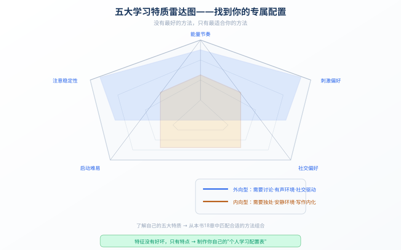
【进阶方法】个人学习特征反思——识别你的五大学习特质
原理： 《性格修正》和《分心不是我的错》都在阐述一个观点：你必须先了解自己的大脑特质，才能找到适配的大脑使用说明书。你需要对自己进行一次彻底的学习特征盘点。 操作步骤（4步）：
- 在安静的时间里，对照以下五个维度写下你对自己的观察：
能量节奏：你是早鸟还是夜猫子？上午几小时头脑最清楚？下午几点最困？ 刺激偏好：你学习时需要绝对安静，还是需要有白噪音或咖啡馆环境？完全无声会让你焦虑吗？ 社交偏好：你需要伙伴一起互相讲题才学得进，还是一有人就分心？学会一个东西后第一个冲动是想讲给谁听还是自己写下来？ 启动难易：你是那种坐下来马上能开始的人，还是需要很长时间预热？预热时你通常做什么（整理桌面、发呆、刷手机）？ 注意稳定性：你能连续集中大概多久不会觉得累？什么情况下最容易分心（手机通知、窗外声音、内心思绪）？
- 写完之后，为每个特征匹配一个前文最适合你的策略。 例如：夜猫子 → 把最重要任务放在晚上；需要有声音 → 尝试用固定白噪音作为心流触发仪式；注意力不稳定 → 用番茄工作法把时间切碎。
- 制作你自己的“个人学习配置表”。 一页纸，左边是特征，右边是匹配方法。
- 把这张配置表作为今后所有方法调整的底层参考。 每当你觉得某个方法别扭时，回到配置表：是这个方法和我的哪个特质冲突了吗？
关键原则： 观察要基于事实而不是自我标签。不是“我是惰性气体”，而是“在过去一周中，我有四次开始学习时花了超过20分钟刷手机”。 特征没有好坏，只有特点。 匹配方法时，一个特征可以对应本书多个相关方法。 如果做不到： 觉得自己不了解自己 → 做一周的时间日志，每天每小时记录自己在做什么、精力如何、是否专注。一周后回来看，你自己会从数据里浮现出来。 不知道某种偏好该如何匹配方法 → 查本书相关章节。本书方法已经覆盖大部分情况。
【高阶方法】年度学习系统复盘——让学习系统和你一起成长
原理： 你是一个不断在变化的人。高一时最适合的方法，到高三可能已经不再适合。学习的阶段变了，你的心智模式成熟了，环境也变了。《性格修正》一再强调人的可塑性和持续成长。你需要一个年度性的复盘，来迭代你自己的整个学习系统。 操作步骤（4步）：
- 每年找一个大块时间（例如除夕或生日那天），拿出这一年来你所有的实验记录、成绩波动、进步日志。
- 回答三个大问题：
“今年，什么学习方法对我最有效？是什么让它有效的？我为什么一开始觉得它不会有用？” “今年，什么认知错误或不良习惯反复出现？我做过什么去解决它？结果怎样？” “对于学习这件事，今年我对自己最大的一个认知是什么？”
- 基于以上回答，更新你的“个人学习配置表”。 可能你的能量节奏变了（比如开始早睡早起），或者你的刺激偏好变了（开始喜欢安静）。配置表也必须修订。
- 为下一年设定一个“学习实验主题”。 比如：“今年我要重点优化我的写作反馈系统”或“今年我要实验社交学习”。主题让下一年你的个人迭代有一个焦点。
关键原则： 年度复盘是仪式感极强的一次自我对话。认真对待它。 不必推翻过去。大部分有效的东西保留，只调优局部。 欣赏你的成长。你在学习这件事上已经从一个被动承受者变成了主动的驾驭者。 如果做不到： 觉得年度复盘太久远 → 先从学期复盘开始。每个学期末做一次小型的。 前面积累的记录很少 → 今年开始慢慢积累，为下一次复盘准备材料。现在开始不晚。
🃏 配套工具卡：[方法实验记录](cards/card_方法实验卡.svg)
三、实践指南
本章核心方法速查表
选方法指南 如果你现在感到方法太多无所适从：从方法实验记录开始。只留一个当下最想试的，科学地测试它到底适不适合你。 如果你常感到“我知道很多方法，但我不知道怎么组合给自己用”：立刻去做个人学习特征反思。你会有一张属于自己的地图。 如果你已经是能主动管理自己学习的人，但想更上一层楼：保留年度系统复盘的习惯。这是你从学习者升级为学习架构师的关键一步。 常见误用提醒 实验一个方法前，不要先否定它。有些方法需要两周适应期才会显效。 特质反思不是给自己贴标签然后摆烂。“我就是注意力差所以我学不好”是禁止的。应该是“我的注意力大约维持在15分钟，所以我用番茄钟定15分钟，并且把手机放到另一个房间”。 年度复盘不是自我检讨大会。大部分时间应该花在庆祝和发现上。
| 方法层级 | 方法名称 | 一句话 | 适合谁 | 需要多长时间 |
|---|---|---|---|---|
| 简单 | 方法实验记录 | 每两周试一个新方法，记录适配度 | 到处学方法但不知道哪个有用的人 | 每天1分钟记录 |
| 进阶 | 个人学习特征反思 | 识别自己的五大学习特质并匹配策略 | 总觉得好方法是别人的，不适合自己 | 一次性1-2小时，定期微调 |
| 高阶 | 年度学习系统复盘 | 每年迭代一次整个学习系统 | 想让学习系统动态成长的人 | 每年1次，2小时 |
四、本章小结
- 没有万能的学习方法，只有最适合你的学习方法。
- 你的性格、注意力类型、能量节律，决定了你需要的独特策略组合。
- 方法实验记录：用实验心态检验每一个方法的适配度。
- 个人学习特征反思：识别你的能量、刺激、社交、启动、注意五大特质。
- 年度学习系统复盘：让整个学习系统随着你的成长而动态升级。
- 最终的学习方法，是你自己为自己亲手打造的那一套。
- 恭喜你完成了这18章的完整学习系统构建。从记忆到迭代，现在你拥有了一个能伴随你终身的自主学习工具箱。去用，去试，去成为你自己的学习专家。
数字化学习篇：管理屏幕，驯化工具
第19章 屏幕管理：为什么拿起手机就放不下？
一、为什么会“说好5分钟，结果1小时”
你本来只是想查个单词。 拿起手机，解锁屏幕。微信有一条未读，你点进去回了一句。朋友圈有个红点，你刷了一下。看到一个搞笑的视频，你又看了第二个、第三个。等你回过神来，半小时过去了。你要查的那个单词，还没打开词典。 你骂自己：怎么又管不住手？明天一定把手机放远点。 但明天，后天，大后天。同样的剧本，反复上演。 你不是一个人。几乎所有中小学生都在和屏幕进行一场不对等的战争。你以为对手是你自己的意志力，其实对手是成千上万个工程师、心理学家、算法专家精心设计的“注意力捕获系统”。 《屏幕时代，重塑孩子的自控力》一书的作者希米·康博士用神经科学的视角揭示了这场战争的真实面貌：这不是意志力的较量，这是一场大脑化学物质的不对称战争。 你在用前额叶皮层——大脑中最晚成熟、最耗能、最容易疲劳的部分——去对抗一个被多巴胺精密设计过的反馈系统。你的对手不累、不困、不烦躁，而你的前额叶每做一次“我不看”的决定，就消耗一点能量。 输，不是你的错。但不理解这个机制，你永远不知道该怎么赢。 短视频和社交媒体到底对大脑做了什么 要理解为什么屏幕这么难管，你得先理解手机里的应用到底在对你做什么。 《屏幕时代》的核心模型是：多巴胺-预期-反应循环。 多巴胺不是“快乐的物质”，而是“期待的物质”。它在你期待某个奖励时分泌，驱动你去寻找那个奖励。每一次你刷到一个新视频，你不知道接下来会看到什么——好笑？感动？震惊？无聊？这种不确定性，恰恰是多巴胺分泌最强的触发条件。 这就是为什么短视频比电视剧更“上头”。电视剧有固定的叙事节奏，你可以预料接下来会发生什么。短视频没有。每一个划屏，都是一次盲盒开奖。你在等那个不确定的奖励。这个期待本身，让你停不下来。 更可怕的是，社交媒体（朋友圈、QQ空间、聊天消息）加上了另一个层面的多巴胺触发器：社会反馈。别人的点赞、评论、@你，是不可预测的社会奖励。远古时代，被群体关注意味着生存优势。你的大脑到现在还没进化过来——它把每一个点赞解读为你正处于社交群体的中心位置，这是关乎生存的高价值信息。 《屏幕时代》把这种反馈机制称为“大脑的劫持”：这些应用的设计不是为了给你价值，是为了最大化你在屏幕上的停留时间。你停留的时间就是他们的产品，他们卖给广告商。你在用你的注意力为他们创造利润，而你得到的，是一个被训练得越来越不耐心的前额叶。 短视频和社交媒体的真正伤害，不是占用了你的时间，而是降低了你对“低刺激任务”的耐受度。 学习——尤其是记忆、理解、做难题——是多巴胺释放极其缓慢的过程。它需要你投入长时间的努力，才能获得一点点的成就感。和每15秒一次的快乐盲盒相比，学习显得无比枯燥。不是学习变难了，是你的大脑被训练得只习惯高频奖励了。你坐下来看书觉得烦躁，不是你不爱学习，是你的多巴胺阈值被抬高了。
二、怎么管理屏幕，而不是被屏幕管理
“戒手机”不是一个可行的目标。数字设备已经成为学习和生活的必要工具。真正的目标不是戒掉屏幕，而是驯化屏幕：让屏幕成为你的工具，而不是让你成为屏幕的奴隶。 下面三个层次的方法，从即刻可用的物理阻断，到需要长期培养的数字素养，帮你一步一步拿回对屏幕的控制权。
【简单方法】物理隔离法——让手机从“触手可及”变成“必须起身”
原理： 《屏幕时代》最简洁的建议：能见度决定使用率。 手机在你的视线范围内，你大脑的前额叶每分每秒都在消耗能量去抑制“看一眼”的冲动。这个消耗是无意识的，等你感到疲劳时，意志力已经被榨干了。 把手机放在另一个房间，大脑的警戒系统就解除了。你看不到它，就不会去想它。不需要意志力。 操作步骤（3步）：
- 学习前，把手机放到另一个房间。 不是抽屉里，不是翻过去。是另一个房间。如果你在书房，手机放卧室。如果你在卧室，手机放客厅。
- 如果需要用手机查资料，先在纸上写下来要查什么。 列一个“待查清单”。学习45分钟后，集中用5分钟去那个房间，站着用手机快速查完。查完立刻放回去。
- 如果担心漏接紧急电话，把手机设成“仅允许通讯录来电”模式。 所有APP通知全部关闭。如果有重要的事，在乎你的人会打电话，不会发消息。消息可以晚回复，学习状态打断了就很难回来。
关键原则： 距离是关键。手机在另一个房间和手机在手边的区别，不是“不方便一点”，是从“持续消耗意志力”变成“零消耗”。 不要把手机放抽屉里考验自己。看不见不等于不消耗。大脑知道它在抽屉里。另一个房间是唯一真正有效的物理隔离。 查资料必须批量处理。不能每5分钟跑一趟。 如果做不到： 没有另一个房间（宿舍、共享空间） → 买一个手机定时锁盒，锁上半小时。钥匙可以放在公共区域或者给室友保管。迫不得已也可以让自我约束可视化。 学习时必须用平板/电脑 → 用APP屏蔽工具（如Forest、番茄ToDo）把娱乐类应用和网站锁住。在设备上建一个“学习专用模式”。
【简单方法】“作弊码”呼吸法——在打开APP之前插入10秒延迟
原理： 《屏幕时代》提到一个关键的数据：大多数“无意识刷手机”的行为，从冲动出现到付诸行动之间，只有不到3秒的时间窗口。你甚至没意识到自己做了决定，手已经打开APP了。 如果在冲动和行动之间插入一段极短的延迟，前额叶就有机会上线。10秒钟，足够理性大脑从边缘系统手里抢回方向盘。 操作步骤（3步）：
- 当你感觉到想拿手机的冲动时，先不要拿。 如果你已经拿起来了，在解锁屏幕之前暂停。
- 做一次深呼吸：吸气4秒，憋气2秒，呼气4秒。 总共10秒。这个过程不需要说服自己“不要看”，只需要完成一次呼吸。呼吸本身就是对神经系统的安抚信号。
- 10秒之后，如果还想看，就看。 关键是重新掌握选择权。很多时候，10秒之后那股冲动就过去了。如果没过，至少这次打开是一个有意识的选择，而不是无意识的反射。
关键原则： 不要用这10秒来和自己辩论“该不该看”。辩论消耗意志力。只做呼吸。 允许自己看完呼吸后真的去看。你的目标是打断无意识循环，不是惩罚自己。 每次成功插入呼吸，都是对前额叶的一次训练。 如果做不到： 10秒呼吸对你没用，做完了还是看 → 在呼吸时加一个动作：问自己“我现在为什么想拿手机？”这个问题不限答案，只是在刺激前额叶上线。一旦你开始思考，自动行为就被打断了。 经常意识不到自己拿手机了 → 在手机背面贴一个东西（贴纸、橡皮筋），手指碰到的一瞬间，触感会唤醒你的意识。
【进阶方法】应用程序“工具化”——把手机从游乐场变成工具箱
原理： 《屏幕时代》不主张完全禁止数字设备。它提倡的是“有意使用”：每一次打开手机，你都知道自己为什么打开，要用多久，用完就关。 你可以通过系统的整理和设置，把手机从“可以玩的玩具”变成“只能用的工具”。关键操作是：删除、隐藏、重组、降级。 操作步骤（4步）：
- 删除所有“无限滚动”的应用。 判定标准：这个应用有没有一个“没有尽头的瀑布流”？短视频、信息流APP，如果可以用电脑替代，手机上就删掉。不是因为它们没有价值，是因为它们的反馈机制你目前还管不住。
- 把必须保留但容易沉迷的应用（微信、QQ、B站），全部关闭通知。 通知权限全关。不要静音——直接关闭推送。你不主动打开就看不到，而不是被动被拉进去。
- 重组手机桌面。 第一屏（主屏）：只放纯粹的工具——相机、地图、日历、备忘录、计算器、背单词、学习工具。第二屏：放在文件夹里的社交和娱乐APP。每个文件夹用动词命名：“要查时再说”、“周末玩”。把图标藏到文件夹第二页，增加一层打开的成本。
- 开启手机的“灰度模式”（辅助功能→显示→色彩滤镜→灰度）。 把屏幕变成黑白色。鲜艳的颜色是精心设计的视觉奖励信号——红色通知气泡、蓝色应用图标——都在刺激多巴胺。黑白屏幕让大脑对这个设备失去兴趣，但对学习工具的阅读和查资料没有任何影响。
关键原则： 删除不等于永远不用。你可以用电脑版、或者周末重新下载。关键是日常状态下，你的手机不是一个游乐场。 文件夹命名要对自己的需求诚实。“要查时再说”的意思是，这个应用有功能价值，但你不允许它成为日常消遣入口。 灰度模式是最被低估的屏幕管理手段。如果你只做一个改变，试试这个。 如果做不到： 有些应用删了又装 → 不是你的错。它们在设计时就有“成瘾循环”。如果反复安装，证明你需要物理隔离那个应用，而不是靠意志力。把那个特定应用交给家长设置屏幕使用时间密码，只能由他们输入密码安装。 朋友都在一个社交APP上，删了会失去社交 → 只在固定时间（比如晚饭后30分钟）用电脑登录。社交不需要随时随地发生。
【进阶方法】替代脚本——用高密度快乐替代低密度刺激
原理： 《屏幕时代》的一个重要洞见是：不要只想着“戒断坏习惯”，要同时建立“替代的好习惯”。大脑的多巴胺需求是刚性的。你不给它提供有营养的来源，它就会自己去找垃圾食品。 如果你在学习累了的时候不知道该做什么，大脑的默认选项就是拿起手机。你需要提前为这个时刻准备好一个“替代脚本”——一个同样能带来快乐但不会劫持你注意力的活动菜单。 操作步骤（3步）：
- 列出至少5个你喜欢的、不需要屏幕的、可以随时做几分钟的替代活动。 例如：听音乐不碰手机、站起来做伸展、去阳台看看远处、逗宠物玩、翻一本你喜欢的小说或杂志、画一个简单的手绘。
- 把这张菜单贴在书桌旁。 每次你学习累了想“放松一下”时，先看一眼菜单，从里面选一个。不是“不能看手机”，是“我可以先做这件事再说”。
- 练习之后记录感受。 替代活动之后，你是感到更清醒了，还是更累了？手机刷半小时之后，你是更想学了还是更不想学了？大脑需要真实的体验数据来做选择，而不是靠抽象的道理。记录一次手机后的感受和替代活动后的感受，对比几次之后，你的大脑会自然倾向那个真正恢复精力的选项。
关键原则： 替代活动必须是真正让你开心的事，不能是“应该做的事”（比如整理书桌）。 菜单要多样化。有时候你需要身体运动，有时候你需要放松眼睛，有时候你只是需要切换一下大脑。 不要期望替代活动能立刻带来和手机一样强烈的快感。手机的快感是“强但不持久”的，替代活动的满足感是“温和但真实”的。你的大脑需要时间来重新校准。 如果做不到： 想不到无屏幕的快乐活动 → 回到你10岁之前喜欢做的事。那时候没有手机，你是怎么度过一个无所事事的下午的？答案通常就在那里。 替代了但总觉得“没劲儿” → 这不是替代活动不好，是你的多巴胺阈值被手机调得太高了，其他活动的自然反馈暂时无法满足。给自己2-4周的“戒断期”，期间主动减少手机使用，大脑的偏好会慢慢修复。
【高阶方法】欲望冲浪法——学会和“想刷手机”的冲动共存
原理： 这是《屏幕时代》中最高级的一项技能，来自临床心理学中的“接纳与承诺疗法”。其核心思想是：你不需要打败冲动，你只需要学会“冲浪”——骑在欲望的波浪上，让它过去。 一个想刷手机的冲动，就像海面上的一个浪。浪会来，但也会走。如果你站起来和它硬抗，你会被拍倒。如果你冲上去，跟着它走过全程，它就自然消散。所有冲动都有自然的生命周期：升起→峰值→衰减→消失。通常是5到10分钟。 大多数人在冲动刚升起时就投降了。但如果你能等一等——只是观察，不做行动——你会亲眼看到它自己消退。经历几次，你对冲动的态度就从恐惧变成熟悉。下次它再来的时候，你能说：“哦，你又来了。来了就待一会儿吧。” 操作步骤（4步）：
- 当“想看手机”的冲动出现时，不下达任何行动指令。 不要拿手机，也不要对自己说“不许拿”。两个都是行动。
- 命名这个冲动。 比如：“我的大脑现在想要一个多巴胺小奖励。”或者更亲切一点：“那个想看搞笑视频的小人又出现了。”
- 感受身体。 冲动在你的身体里是什么感觉？是心痒？是手想动？是坐立不安？找到这个冲动的身体位置，像一个好奇的科学家一样观察它。它会怎么变化？
- 等5分钟。 不需要比5分钟更久。通常5分钟之内，浪的最高点已经过去了。你只是坐着呼吸、感受、观察。你会发现冲动自己变轻了。这时候你想看手机的决定，就是自由的决定，而不是被驱动的决定。
关键原则： 欲望冲浪不是在“压抑欲望”，是允许欲望存在，但不一定跟随它行动。 前几次可能还是会拿起手机。没关系，这也是训练的一部分。下一次早一点觉察到冲动，试着多冲一会儿，哪怕只是多待10秒。 在情绪强烈时不要尝试欲望冲浪，先用替代脚本转化情绪。欲望冲浪适合对付中等强度及以下的冲动。 如果做不到： 完全觉察不到冲动，回过神已经在刷了 → 这是元认知训练的前置。先练习第16章的自我提问三明治，等你能“看见自己做了一个决定”时再练习欲望冲浪。 观察的时候很难受，坐不住 → 站起来走一走。欲望冲浪不是“必须坐着不动”，是“不朝手机方向移动”。
【高阶方法】每周数字体检——把屏幕时间变成可管理的数据
原理： 你不能管理你没测量的东西。大多数学生对每天花在屏幕上的时间毫不知情。他们凭感觉估计“今天没怎么玩”，但手机记录的是真实数据。 《屏幕时代》建议建立定期“数字体检”的习惯。不是用来责备自己，而是用来看清自己的行为模式，然后做出针对性的调整。当一个行为被数据可视化之后，大脑会自动产生调整的动机——不需要别人说你，数据自己会说话。 操作步骤（4步）：
- 每周日晚上，查看手机自带的“屏幕使用时间”报告。 记下三个数据：本周日均屏幕使用时间、最常用的三个应用及其时长、拿起手机的次数。
- 把这三个数据填进一个简单的表格里，连成一条趋势线。 只需要4周，你就能看到自己的屏幕使用模式。
- 问自己三个问题：
哪个数字最让我意外？（通常是你根本不知道自己在某个应用上花了那么多时间） 这周有没有哪一天屏幕使用明显偏低？那天我做了什么事让它变低了？ 下周我只调整一个指标，我想调哪个？（比如：“我下周想把日均下降30分钟”，或“我想把拿起次数减少20%”）
- 只做一个小调整。 基于上面的回答，选择本周唯一一个核心小行动。比如：“下周只用电脑看视频，手机上删掉视频APP。”下周检测这个调整有没有对数据产生影响。
关键原则： 这个体检不是用来羞辱自己的。数字没有道德。它只是帮助你看到模式。 只调整一个变量。数字化习惯的改变和其他习惯一样，只能一个一个来。 坚持下去。前两周的数字可能波动很大，一个月后趋势线会告诉你真相。 如果做不到： 没有屏幕使用时间功能（或用的是非智能手机） → 用人工记录。从每天结束时回忆三个时间块（上午下午晚上）手机用在哪。粗略记录也比不记录好。 看了数据之后更焦虑了 → 记住你的目标不是变成零，而是变成“有意识的使用”。日均3小时降到2.5小时是进步，不是失败。
【高阶方法】以屏幕为镜的对话——找到“我为什么一直想逃进屏幕”
原理： 这是《屏幕时代》中最深层的方法，也是它和其他时间管理书最大的不同。希米·康博士反复强调：屏幕行为通常不是问题本身，而是问题的症状。 一个孩子疯狂打游戏，可能是现实中没有成就感。一个学生一直刷社交媒体，可能是现实中缺少连接感。一个学生拼命看短视频，可能是想逃避某种压力——作业太难、考试焦虑、和家长的冲突。 你不能只治疗症状。你必须问：我到底在逃避什么？屏幕满足了我什么没有被满足的真实需求？ 这一层不适合用“操作步骤”来写。它是一个邀请。当你已经通过前面各种方法，把屏幕使用降到一个可控程度，你可能会有片刻的安静。那一刻，你可以试着问自己一个温柔的问题： “我拿起手机的那一刻，想被满足的是什么？” 是无聊想被填满？是累了想被安慰？是烦躁想被转移？是孤独想找人说句话？ 这些需求都是正常的需求。屏幕只是给了你一个快速的、廉价的替代品。但替代品不能让你真正吃饱。 也许你需要的是更深的友谊，而不是更多的点赞。也许你需要的是攻克一道难题的成就感，而不是游戏里的虚拟升级。也许你需要的只是一次真正放松的休息，而不是用碎片娱乐把疲惫掩盖过去。 当你查明了真实需求，就可以用真正能满足那个需求的东西来替换屏幕。这件事没有固定的方法。你只需要对自己诚实。
四、实践指南
本章核心方法速查表
选方法指南 如果你每天学习的第一个动作就是把手机摆桌上：从物理隔离法开始。今晚就把手机放另一个房间。 如果你总是“查个资料就出不来了”：用APP工具化+替代脚本组合。手机查资料前写下“待查清单”，查完立刻放下。 如果你知道自己不该刷但就是停不下来：欲望冲浪法是需要练习的核心技能。它不追求立刻成功，追求慢慢建立对冲动的熟悉感。 如果你觉得屏幕已经严重影响了学习、成绩和情绪，而且反复尝试都失败了：主动寻求家长的帮助。让家长帮你设置屏幕使用时间密码，或者把手机交给家长保管。这不是软弱，是对自己负责。同时试着做“以屏幕为镜的对话”，找到屏幕背后的真实需求。 常见误用提醒 物理隔离和APP整理是基本功。基本功没做好，高阶方法很难生效。 屏幕管理不是为了“变成一个不玩手机的人”，是为了“有选择权”。你想看的时候可以看，想停的时候可以停。自由是不被强迫。 欲望冲浪不是折磨自己。如果冲动让你非常痛苦，先退回到环境隔离。不必一步到位。 不要把家长管你当成和你对立。如果你主动要求家长帮忙管理屏幕，这不是示弱，这是一个最成熟的决定。 一周屏幕管理挑战
| 方法层级 | 方法名称 | 一句话 | 适合谁 | 需要多长时间 |
|---|---|---|---|---|
| 简单 | 物理隔离法 | 手机放另一个房间，切断视觉接触 | 所有学习时手机在手边的人 | 一次性设置 |
| 简单 | “作弊码”呼吸法 | 拿手机之前插入10秒深呼吸 | 无意识拿起手机的人 | 每次10秒 |
| 进阶 | APP工具化 | 删除、重组、灰度化，手机变成工具 | 手机里娱乐APP超过3个的人 | 一次设置，长期维护 |
| 进阶 | 替代脚本 | 准备一份无屏幕快乐活动菜单 | 学习累了不知道做什么的人 | 5分钟准备菜单 |
| 高阶 | 欲望冲浪法 | 学会和“想看手机”的冲动共存 | 明知不该刷但还是刷的人 | 每次训练5-10分钟 |
| 高阶 | 每周数字体检 | 每周看屏幕报告，数据驱动调整 | 对自己的屏幕使用时间完全没概念的人 | 每周10分钟 |
| 高阶 | 以屏幕为镜的对话 | 追问自己为什么一直想逃进屏幕 | 觉得屏幕已经影响了生活和情绪的人 | 需要独处的安静时刻 |
| 天数 | 挑战任务 | 方法层级 | ||
| 第1天 | 学习时把手机放另一个房间 | 简单 | ||
| 第2天 | 在解锁屏幕前做10秒呼吸 | 简单 | ||
| 第3天 | 删除手机上所有“无限滚动”类APP | 进阶 | ||
| 第4天 | 把手机换成灰度模式 | 进阶 | ||
| 第5天 | 制作一张替代活动菜单并使用 | 进阶 | ||
| 第6天 | 查看屏幕使用时间报告，写下意外发现 | 高阶 | ||
| 第7天 | 尝试一次欲望冲浪，记录冲动的升起和消散 | 高阶 |
五、本章小结
- 屏幕管理不是意志力问题，是你一个人的前额叶对抗上千工程师设计的多巴胺系统。
- 多巴胺是“期待”的物质，不确定性是它最强的触发器。短视频和信息流的“无限滚动”正是精准利用了这一点。
- 屏幕的真正伤害不是占用了时间，而是拉高了多巴胺阈值，让学习的慢反馈变得无法忍受。
- 物理隔离法：手机放另一个房间，消除持续的意志力消耗。
- “作弊码”呼吸法：10秒深呼吸打断无意识的拿手机习惯。
- APP工具化：删除无限滚动应用、关闭通知、开启灰度模式，把手机变回工具。
- 替代脚本：准备无屏幕快乐活动菜单，给大脑提供健康的满足渠道。
- 欲望冲浪法：观察冲动的升起和消退，学会与它共存而不盲从。
- 每周数字体检：基于真实数据调整屏幕习惯，每次只改一个变量。
- 以屏幕为镜：屏幕沉迷往往是未被满足的心理需求的信号。找到根源，才能真正自由。
- 你不是在和手机作战，你是在和自己大脑的古老设定作战——同时也在和这个时代最强大的注意力捕获系统作战。理解规则，你才能赢。
第20章 考试策略：会的东西别再丢在考场上
一、为什么考试策略比你以为的更重要
你有没有过这种经历——走出考场那一刻，突然拍大腿："那道题我会啊！怎么当时就没想出来？"或者卷子发下来，你看着那个鲜红的叉，心里堵得慌：不是看不懂，不是没学过，是审题的时候漏掉了一个"不"字。更扎心的是对答案的时候，你和同桌都会同一道题，你丢了5分，他说"我就是多看了一眼题目要求"。
你不是不会，你是不会考。
我们都以为考试只是"把平时学的写出来"。但你想想：同样的知识点，你晚上在家安安静静地做题和上午九点坐在考场里做题，能一样吗？限时压力、题目顺序的陌生感、填空题突然夹了道证明题、监考老师在你背后站了三分钟——这一大堆变量，平常练习时你一个都没练过。你练的是"在舒适状态下的知识输出"，而考试考的是"在高压限制条件下的知识提取"。这根本就不是同一个技能。
这就是为什么有些人平常作业全对、考试永远差一口气。他们把所有的准备时间都花在了"学懂"上，却从来没有专门练过"怎么考"这件事。考试本身，是一项需要刻意练习的独立技能。这个技能一旦练出来，你每场考试凭空就能多捡回来10到20分——不是因为你学会了新知识，而是你终于不再把原本会的东西丢在考场上了。
二、怎么才能把会的都拿到分
【简单方法】审题三件套
原理：
你知道最亏的丢分方式是什么吗？不是没看懂，是"看懂了一层就开始做"。大脑有个偷懒的毛病——它喜欢用第一印象代替完整信息。你扫了一眼题目，觉得"哦，这个类型我做过"，然后带着熟悉感一路冲下去，结果题目里有个"除了"、有个"不正确的是"、或者数据的单位悄悄从米换成了厘米，你全没看见。等你做完发现不对再返工，三分钟已经没了。
审题三件套就是在强迫你的大脑慢下来。多花这20秒，相当于给整道题装了一个防错的保险丝。你仔细想：做完一道题发现审错了，返工要多久？至少三分钟。审题多花20秒，假设能避免一半审题错误——这笔账怎么算都血赚。
操作步骤（三步）：
- 圈关键词。笔拿起来，一边读题一边圈。重点是三类词：数字（尤其是带了单位的）、否定词（"不""错误""除了""不是"）、以及"最""至少""一定"这种绝对化限定词。圈不是为了好看，是让你读完题回头扫一眼就能锁定关键信息。
- 画已知条件。在读题的同时，用短横线或者小箭头把题目给你的每一个条件标注出来。尤其是大题——题干很长，条件散落在三四行里，你不标出来，读到后面已经忘了前面给过什么。
- 标陷阱位置。题目里最容易让你栽跟头的地方，专门画一个五角星或者感叹号。比如"下列说法错误的是"，那个"错误"就是陷阱位。比如单位突然从小时变成分钟，那个变换就是陷阱位。标完之后你会下意识警觉，做题的时候在这里刹车核实。
关键原则：
- 笔不能停。审题的时候手上有笔和没笔，大脑的认真程度差两个数量级。拿着笔圈画，是物理性地激活专注状态。
- 圈完再审一遍问题。很多人圈完条件就直接开始算了，算完才发现问题问的根本不是自己算的那个东西。圈完条件后，把题目最后一句话再读一遍，确认"它问的到底是什么"。
- 绝不在没圈完的时候开始做题。这是一个硬规矩：圈完一遍才开始，哪怕你觉得这个题"超级简单一眼就会"。简单题因为不审题丢分，比难题不会做更让人难受。
如果做不到：
如果你时间实在太紧了——比如只剩五分钟还要赶三道选择题——那就只做第一步：圈否定词和数字。哪怕只多花5秒，也能帮你筛掉至少一半的粗心错。
【进阶方法】时间沙盘
原理：
你有没有遇到过这种情况——选择题做得好好的，突然第三道就是一道拦路虎，你越做越上头，跟它耗了十分钟，最后做出来了，抬头一看，后面还有三道大题，时间只剩二十分钟。那个做出来的得意，瞬间被剩下的恐慌吞没了。
考试最大的坑，不是题难，是题序骗你。试卷的出题顺序不等于你的解题效率顺序。你按照题号一题一题硬推，大概率会在一两道"你明明不擅长但碰巧排在前面的题"上浪费过多时间，反而那些你擅长的、能稳拿分的题，因为放在后面，最后被时间逼着仓促做甚至直接空着。这太亏了。
时间沙盘的核心逻辑就一条：你不是来跟卷子杠的，你是来在有限时间内最大化分数的。谁先谁后，由你说了算，不由题号说了算。
操作步骤（四步）：
- 开考后花1分钟快速翻一遍整张卷子。不是细看，是扫题型和题量。你要感觉一下：选择题多不多？大题有几道？有没有那种"一看就知道自己擅长"的题？有没有那种"扫一眼就头皮发麻"的题？做到心里有数。
- 先做"一眼就会的"。那些你扫一眼就确定思路的题，先全部拿下。这一步有两个巨大好处：第一，你快速攒了一堆到手分，心态稳了；第二，这些简单题不用在紧张的最后五分钟做，不会被自己吓自己搞出低级错误。
- 每道题设一个时间上限，超时就果断跳过。你可以粗略地按分值配时间——比如满分100分考120分钟，那5分的题大概给6分钟。到了上限还没思路，画个记号，直接跳。这不是放弃，这是调度。你后面的题可能更好拿分。
- 留出10分钟检查窗口。不是做完再想"还有几分钟"，而是从一开始就告诉自己：这场考试我只有110分钟做题，最后10分钟是属于检查的。这样你的时间配速才不会越到后面越慌乱。
关键原则：
- 跳过不等于放弃。你只是暂时把它放一放，做完会做的再回来，往往思路反而打开了——因为你的大脑在后台一直在处理。
- 先拿稳分、再攻难分。这个顺序不能反。先做难题，做不出来心态崩了，连容易题也做不下去了；先做容易题，心态稳了，回头攻难题时反而更冷静。
- 时间到了就跳。哪怕你觉得"再给两分钟我就做出来了"。考场上最贵的两分钟，就是"马上要做出来了但就是差一口气"的那两分钟。你不是在跟你面前的题赛跑，你是在跟整张卷子的所有题赛跑。
如果做不到：
🃏 配套工具卡：[审题三件套](cards/card_审题清单.svg) 如果你觉得翻全卷1分钟都焦虑——那就先看后三道大题，只看题目问什么，不是审题，是给自己一个"后面有这些"的心理准备。哪怕就知道后三道大题是什么类型，你的时间分配也会不自觉变得更合理。
【高阶方法】检查三遍法
原理：
绝大多数人检查试卷的方式是"把做过的题再看一遍"。问题是——你带着刚才做题的同一套思路再看一遍，大概率会沿着同一个坑再踩一遍。你的大脑已经形成了一条固定的推理路径，你再走一遍，只会强化它，不会质疑它。
所以真正有效的检查，不是"重新读一遍"，而是"换一条路重新验证一遍"。
检查三遍法的精髓就是"每次只看一件事"。你把检查拆成三个完全不同的任务，每一遍戴一副不同的眼镜，专注力不打散，错误才抓得住。
操作步骤（三步）：
- 第一遍：补漏。眼里只看两件事——有没有空题，答题卡有没有串行。从第一题开始快速扫到最后一题，不对答案，不验算，只看"写了没有"和"写对位置没有"。答题卡串行是考场上最冤的死法——你每一题都做对了，但是从第7题开始答案整体偏移了一格，后面全部白做。这一遍通常只需要3分钟，但能救回来的分可能是二三十分。
- 第二遍：验算。这一遍的核心就一条——不要用你刚才算的方法再算一次。换条路走。如果是数学计算，用结果反推条件：你算出来x=5，那就把5带回原方程看看等号成不成立。如果反推不了，就用估值估算：3.14×97大概是多少？97接近100，3.14×100=314，再减掉3.14×3≈9.4，结果应该接近304左右，你的答案如果离这个数太远，大概率错了。换一种思路验证同一样东西，这才是有效检查。
- 第三遍：格式。这一遍，大脑切换到校对模式，眼里只看"外在形式"——单位写了没有？负号还在不在？小数点有没有点错位置？物理题的结果带单位了吗？作文的标点符号有没有漏？这一遍你不关心答案对不对，你只关心"它长得对不对"。格式错误在考试中太冤了：你明明算对了，结果因为漏写单位被扣了半分，这半分丢得比不会做更让人生气。
关键原则：
- 每一遍只看一件事。这是检查三遍法最核心的纪律。如果你在第一遍补漏时忍不住去验算某道题，你就掉进坑里了——你的注意力带宽是有限的，东看一眼西看一题，三遍下来该漏的还在漏。
- 第二遍从后往前检查。验算的时候，如果时间允许，从最后一道题往前验。因为你做最后一题时大脑最疲劳，错误率最高。把最高风险的题放在注意力的最新鲜阶段检查。
- 如果时间不够，优先执行第一遍。空题和答题卡串行，是唯一可以"零分收场"的错误。验算错了至少你还写了点什么，串行是直接全盘输。
如果做不到：
🃏 配套工具卡：[检查三遍法](cards/card_检查三遍.svg) 如果只剩三分钟，只做第一遍：扫空题、扫答题卡位置。哪怕你只抓出一个串行，这一整套考试策略在你身上的回报率就已经超过你过去所有考试了。
延伸阅读
🔗 本章讲到的"时间沙盘"策略，和第18章讲的目标拆解思维一脉相承——把一张卷子拆成若干可执行的单元，逐个击破，而不是被一整张卷子的压迫感吞掉。如果你对"如何在压力下保持清晰的执行节奏"感兴趣，第16章的精力管理也有更深的展开。
本章小结
考试不只是在考知识，它同时是一场"在高压限制下高效提取信息"的竞赛。平时会的东西之所以在考场上丢分，不是因为你不努力，而是因为你从来没有把"考试"本身当成一项需要训练的技能。审题三件套帮你堵住输入端的漏洞，时间沙盘帮你把有限的注意力分配到最高回报的题目上，检查三遍法让你用三副不同的眼镜把残存的错误筛干净。记住一句话：考试不是把你会的东西展示出来，是在限制条件下把你会的东西拿出来。限制在那里，但你可以练。
方法速查表
| 方法 | 一句话要点 | 适合谁 |
|---|---|---|
| 简单：审题三件套 | 圈关键词、画已知条件、标陷阱，多花20秒避免返工 | 经常因"没看清题""看漏条件"丢分的人 |
| 进阶：时间沙盘 | 先扫全卷、先做稳拿分的、超时就跳、留10分钟检查 | 总是被某道题卡住导致后面来不及做的人 |
| 高阶：检查三遍法 | 一遍补漏、二遍换路验算、三遍查格式，每遍只看一件事 | 做完总有"本可以拿到的分"却丢了的人 |
第21章 AI时代的学习：如何让AI成为你的学习伙伴
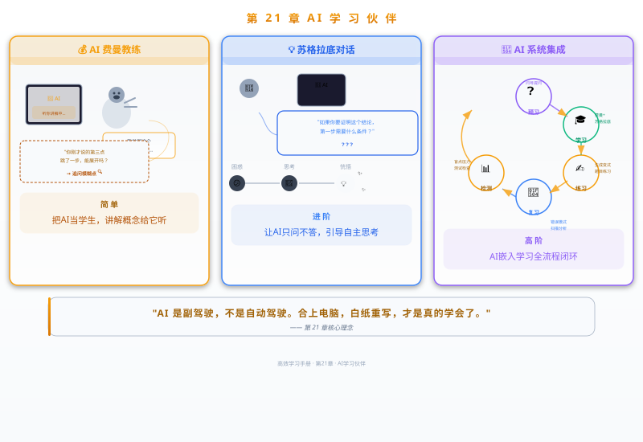
探索问题
Q21-1：你希望AI在你的学习里扮演什么角色——是替你省时间的工具，还是逼你想得更深的教练？
Q21-2：上一次用AI解决学习问题时，最后一步是"AI给了我答案"还是"我自己想通了"？你更想要哪一种？
Q21-3：如果你必须把今天刚学的一个概念讲给不懂的人听——讲完之后，你最怕对方问什么？那个问题暴露了你哪块没真正理解？
Q21-4：你理想中的人机协作学习，应该是什么样的对话节奏——是它问你一句你答一句，还是你讲一段它追问一段？
Q21-5：当你用AI查完一个知识点、合上电脑之后，你希望自己在白纸上能独立写出多少？
Q21-6：你觉得"AI帮你学会了"和"AI帮你交差了"之间，最本质的区别是什么？
一、为什么AI时代更需要会学习的人
你可能已经遇到这个场景了。
身边同学打开ChatGPT，把题目贴进去，三秒钟拿到答案，直接抄到作业本上。你看着，心里有点不是滋味——但你又隐隐觉得，这样做不对。可到底哪里不对？
还有另一种场景。你让AI给你讲一个概念，它讲得头头是道，但听完你还是没懂。或者AI给了完美答案，你心里犯嘀咕："这个结论对吗？"
这三种纠结，是AI时代每个学习者都会撞上的。
先给结论：AI不是用来替你思考的，是用来提升你思考质量的。
你想想看——如果AI替你思考，考试怎么办？面试怎么办？工作中遇到没有标准答案的问题怎么办？AI能替你做的事越来越多，但你独立思考的能力，永远是你最后的安全网。
换个比方。AI像一台超级跑车。不会开车的人坐上去，只会被速度吓到。会开车的人坐上去，能去到以前到不了的地方。
会用AI的人学得更快，不会用的永远被替代。
这不是贩卖焦虑。AI不会淘汰人类，但会用AI的人会淘汰不会用的。好消息是这并不难——你只需要三种方法。
二、简单方法：AI费曼教练——把概念讲给AI听
原理
你可能在第五章用过"讲课式复习"——把一个概念用最通俗的话讲出来。讲不清的地方，就是你没懂的地方。
现在，AI可以扮演那个"听课的人"。你讲完，它告诉你："你第三步跳了一步"或者"你从A突然到了B，中间逻辑我没看到"。
注意，这不是让AI教你。是让AI帮你发现自己哪里没懂。
操作步骤
①选一个刚学完的概念——别太熟也别完全陌生，有点模糊的刚好。
②打开AI，输入提示词：
请扮演一个完全不懂这个概念的学生。我会向你解释[概念]。听完后请指出我没说清楚的地方、跳过的步骤、逻辑断裂的部分。但不要把答案直接告诉我——只指出问题在哪里。
③开始讲。用你自己的话，像在教一个朋友。别念书上的定义。甚至可以录音转文字再发过去。
④看AI的反馈。它可能说："你说了公式但没说为什么"——推导链断了；"你举的例子没对应概念"——理解和举例脱节了；"第三四步之间跳了一个环节"——你以为是理所应当，其实需要补。
⑤把问题标出来，合上电脑，回课本里重新学那几个点。学完再讲一遍。
关键原则
AI的反馈是一面镜子，不是答案。它说你没讲清楚≠它替你讲。
如果你在等AI帮你补缺口——停。自己回去补。
学科指向
- 理科：刚学完"动量守恒"，讲给AI听，它发现你跳过了"系统选择"——这就是你的薄弱点。也可说："请检验我这段推导，指出跳跃或矛盾。"
- 文科：你概括一段历史因果分析，AI发现你忽略了"经济因素传导路径"——逻辑链暴露了一个洞。可说："请指出我论证中的跳跃和未证明的预设。"
- 英语：讲一个语法点给AI，看它能不能从你的解释里找到例外。
如果做不到
别想"每个概念都要检验一遍"。从每天做一次开始。 就一次。挑一个今天学的概念，花五分钟讲给AI听，看完反馈就收工。一周之后你会发现哪些地方总是讲不清——那就是你真正该下功夫的地方。
三、进阶方法：苏格拉底对话——让AI用提问引导你
原理
最深刻的学习体验是什么？不是被人告诉答案，是有人问了你一个对的问题——你被问到的那一刻，突然就明白了。
这就是苏格拉底对话。两千多年前，苏格拉底在雅典街头不断问问题。被问的人一开始很自信，问到第三个问题动摇，第五个问题发现自己其实不懂——然后，在试图回答的过程中，自己想通了。
AI可以扮演这个角色，而且比真人有耐心得多。它不会觉得你笨，不会不耐烦，不会忍不住直接告诉你答案（前提是你设好了提示词）。
操作步骤
①确定要搞懂的问题。最好有"推导空间"，不是纯事实问题。比如"为什么液体压强只和深度有关"就比"液体压强的公式是什么"更适合。
②输入提示词：
我想理解的问题是：[问题]。请用苏格拉底式提问法引导我自己找到答案。每次只问一个问题，不要直接给我答案。当我的回答有逻辑问题时，用下一个问题引导我修正。
③认真答AI的每一个问题。你可能会觉得AI问的问题很"傻"——但那些"傻问题"往往直指盲区。比如你问"为什么天空是蓝色的"，AI不是问"你知道瑞利散射吗"，而是问"你觉得颜色是什么？"——你一下子愣住了。这个愣住的瞬间，就是认知突破的开始。
④整个过程不需要"完成"——你只需要被问到。真正的工作发生在你的大脑里，不在对话框里。
关键原则
忍住，别问AI要答案。 你中途可能会不耐烦——"别绕了，直接告诉我吧"。这个冲动，正是最有价值的时刻。直接要答案，你得到一个知识点。自己推导出来，你得到一种思维方式。差别是"背下来"和"长在身上"。
🃏 配套工具卡：[AI提示词模板](cards/card_AI提示词卡.svg)
学科指向
- 数学/物理：最适用。公式不是背的，是推出来的。让AI用提问引你走一遍推导路径。
- 哲学/思辨：天然适合。一个伦理问题，AI问你几步，你自己就发现了立场背后的预设。
- 英语写作：把论点发给AI，让它用提问检查论证——"有什么证据？""有没有反例？"——相当于一个不批分的写作教练。
如果做不到
完整对话要十五到二十分钟。没时间的话，先让AI随便问三个问题。不用追求"完成推导"。你会发现：光是被问到三个对的问题，就够想半天的。
四、高阶方法：AI学习系统集成——把AI嵌入整个学习流程
前面两个方法是单点使用。高手的做法是：把AI嵌入学习闭环——预习→学习→练习→复习→检测——每个环节用AI加速，但不替代。
预习阶段：知识挂钩
预习不是提前学会，是给大脑装几个"挂钩"，正式学习时有地方挂。
让AI生成"预习三问"：
我马上要学习[概念]。请提出3个问题让我预习时思考，尽量关联我可能已知的知识。
比如学"导数"，AI问："如果速度在变，怎样知道某一瞬间的精确速度？"——不给答案，但给了你一个思考入口。
学习阶段：费曼+苏格拉底
就是前面两个方法。这里不重复了。注意顺序：先用费曼教练检验"我能不能讲清楚"，讲不清楚的地方，再用苏格拉底对话深挖"我卡在哪个思维盲区"。
练习阶段：AI定制题
大多数人的练习是统一的，但你的薄弱点独一无二。
让AI这样帮你：
根据我刚才费曼讲解中没说清的地方[贴上AI反馈]，请生成3道针对性练习题，精确到那个薄弱点。不要通用题库的题。
如果费曼反馈是"受力分析总忘记虚拟力"，AI就生成3道专门考虚拟力的题。效率是一般刷题的五倍。
复习阶段：错误模式识别
一堆错题一题题看，效率低。让AI找"错误模式"：
以下是我过去两个月的错题[贴上错题]。请分析我的错误模式：是不是总在同一类逻辑上卡住？有没有共通特征？
AI可能告诉你："你的错误集中在'省略关键步骤的跳跃式推理'——你不是不会，是太急了。"这个洞察，自己翻两个月错题本都不一定能发现。
检测阶段：盲点压力测试
你以为懂了，但真懂了吗？让AI做"边缘案例测试"：
请针对我对[概念]的理解，设计一个corner case来检验我是否真懂。不要标准题，给我非典型场景。
比如你以为懂了"光合作用"，AI问："火星大气CO₂充足但气压极低，植物能光合作用吗？"——你发现你缺的不是光合作用知识，而是没理解光合作用对气压的要求。
关键原则
AI是你的副驾驶，不是自动驾驶。方向盘永远在你手里。检验方法：用AI的每一步，之后你能否独立再做一遍？ 不能→AI在替你开。能→AI在帮你开得更好。
学科指向
- 数学/物理：AI生成变式题和分析错误模式最强。一道题改三个条件变三道新题，一秒搞定。
- 英语：AI批改作文、分析句式问题、生成词汇替换建议。
- 文科：AI模拟辩论对手——发你的论点，AI扮演反方找漏洞。辩论完理解完全不一样。
五、核心警告：三条红线
前面说了AI的好处，但有三条红线不能踩。
第一条：AI会犯错。永远用你的知识交叉验证。
AI会"自信地胡说"——术语叫"幻觉"。它看起来极其确定，逻辑通顺，结论却可能是错的。尤其数学推导和大段论证，AI会把看似合理的逻辑拼一起，其中可能有隐性错误。
怎么办？用你已有的知识检验。检验不了→说明知识储备还不够，先别用AI"验证"，先让它"解释"。
第二条：如果你感觉"不用想就能得到答案"，你正在被AI削弱。
这是危险信号。
当你粘贴题目、等AI出答案、连题都没读就去看回复——停下来。你不是在学，你在让自己变笨。AI让思考变轻松是好事，如果让思考"消失"了，就是坏事。快速答案是廉价的，消化过的知识才是你的。
第三条：黄金法则——AI用完，合上电脑，找一张白纸，自己再写一遍。
这是整章最重要的一句话。
你不是在对话框里学会的，是在自己的大脑里学会的。AI帮你找到问题、帮你走捷径——但最后一步必须你自己跨过去。
合上电脑。一张白纸。把刚才AI帮你看清的概念，用自己的话写一遍。不是默写AI的回答，是写你自己的理解。写到觉得"这就是我的理解了"——那一刻，知识才真正是你的。
六、延伸阅读
- 本章的"费曼教练"方法与[第五章]的"讲课式复习"一脉相承。第五章教你怎么讲给自己听，本章教你怎么用AI做讲台下的那个"学生"。
- 本章的"苏格拉底对话"与[第十六章]的"元认知监控"深度呼应。苏格拉底提问本质上就是在训练你的元认知——让你看见自己在想什么，怎么想的，哪里想岔了。
- 如果你对AI的使用有伦理困惑（"用了AI还算我学的吗？"），回到[第一章]重新思考"学习的本质"——学习的目的是你变强，不是完成作业。
本章小结
AI时代来了。不需要害怕，也不需要崇拜。只需要学会正确地使用它。
- AI不是替你思考，是帮你把思考推到更高层次。
- 费曼教练→"我哪里没懂"——AI是镜子。
- 苏格拉底对话→"我自己能推导出来"——AI是提问者。
- 学习系统集成→AI渗透预习、学习、练习、复习、检测——AI是加速器。
但不管AI多厉害，最后一道工序永远是你自己：合上电脑，一张白纸，自己来。
有人问："既然AI什么都能答，为什么还要学？"
答案：AI能回答的是已知的问题。你自己能回答的，才是属于你的未来。
方法速查表
| 角色 | 方法 | 核心动作 | 一句话提示词 | 适用场景 |
|---|---|---|---|---|
| AI做你的学生 | 费曼教练 | 你讲，AI指出漏洞 | 「扮演完全不懂的学生，听完指出我哪里没说清楚」 | 刚学完一个概念想检验理解 |
| AI做你的提问者 | 苏格拉底对话 | AI问，你想，你答 | 「用苏格拉底式提问引导我，每次只问一个问题」 | 想自己推导出某条规律/结论 |
| AI做你的教练 | 定制练习 | AI针对你的薄弱点出题 | 「根据我的错误模式生成3道针对性练习题」 | 刷题效率低，想精准训练 |
| AI做你的分析员 | 错误模式识别 | AI扫描错题找规律 | 「分析我的错题，找出我的错误模式」 | 错题很多但看不出规律 |
| AI做你的考官 | 盲点压力测试 | AI用边缘案例检验真懂 | 「设计一个corner case来测试我是否真懂」 | 以为自己懂了，想验证 |
| AI做你的对手 | 模拟辩论 | AI扮演反方找漏洞 | 「扮演反方，找出我论证中的漏洞」 | 文科论述题/写议论文 |
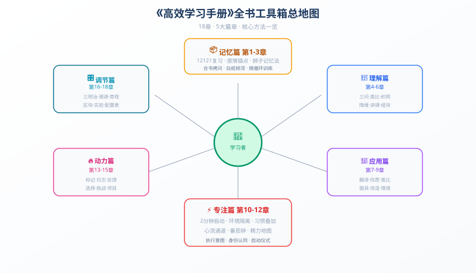
后记
你合上书的时候，手边应该已经多了几页笔记。
也可能没有。没关系。
翻回到序言那页看看——还记得吗？"我不行。"三个字，你大概在某个深夜对自己说过。不是不够聪明，不是不够努力，是方法不对路的时候，努力本身都像在跟自己较劲。
然后你翻过了二十章。
第一章，你重新认识了自己的大脑。原来它不是硬盘，不是海绵，它是一张网——新知识必须挂在旧知识上，才挂得住。第二章到第五章，你摆弄了一堆工具：费曼技巧、间隔重复、主动回忆、番茄钟。有些你试了，有些你跳过去了。第六章到第十章，你开始跟自己的注意力谈判，跟拖延症打架，跟"看完就忘"这个老朋友告别。第十一章到第十五章，你把学习从"输入"扭成了"输出"——笔记不再是抄写，是对话；复习不再是重读，是提取。第十六章到第二十章，你碰了更硬的东西：知识体系怎么搭，跨领域怎么迁移，怎么在信息洪流里不被淹死，怎么让学习变成一件能持续一辈子的事。
二十章走完，你可能觉得手里攥了一大把方法，攥都攥不住。
六十个。这本书里大概列了六十个方法。
我要跟你坦白一件事：这些方法摆在你面前，不是为了让你全用上。没有人用六十种方法学习，就像没有人用六十把扳手修一辆自行车。它们摆在这里，是让你挑的。
你只需要找到三到五个。三到五个真正顺手的，拿到一个具体的学习场景里一用，发现"诶，这个好用"——那就够了。剩下的五十五个，就让它们留在书里。它们不是你的负担，是你的后备。哪天你遇到新的问题，哪天你的老方法不好使了，你随时可以回来翻一翻，从架子上再拿一把下来。
工具箱的意义不是让你焦虑，是让你有选择。
说到这里，我该跟你讲学习的真相了。这个真相不太浪漫，但它很扎实——
没有终极方法。
你找不到一个公式，往里一套，什么问题都解决了。你找不到一个"最好的学习方法"，因为"最好"这件事，跟你是什么样的人、你在学什么、你处在人生的哪个阶段，全部绑在一起。别人说好用的，你可能用着别扭；去年好用的，今年可能就不灵了。你唯一能做的，是持续地试，持续地调，持续地把自己当成一个实验对象去观察。
最好的学习方法，是你自己试出来的那一种。
不是书上写的，不是我告诉你的，是你拿着一个方法跑到真实的学习场景里去磕了碰了改了之后，留下来的那个版本。那个沾着你的手感、你的作息、你的脾气的方法，才是真正属于你的。
所以，别等"准备好"。
这三个字是最狡猾的拖延。等我有整块时间了，等我把这本书再读一遍，等我列完所有行动计划——别等。从今天开始。从这一秒开始。从书里第一个让你心动的方法开始。
你可能在翻某一页的时候，心里动了一下——"这个好像我可以试试。"就是那个。就是那个"好像可以试试"的念头。抓住它。明天就可以试。今天就可以试。现在就可以试。
你什么都没有损失。试了不好用，就换下一个。工具箱里还有五十九把。
最后，回到序言里那句话——
"从'我不行'到'我还没找到对的方法'——这九个字的距离。"
你现在站在哪一头？
如果你还在"我不行"那头，没关系。合上书，挑一个方法，先试一轮。如果你已经在"我还没找到"这头了——恭喜你，你已经在这场游戏里了。而这场游戏的终点，不是"我找到了终极方法"，是"我在找，我在试，我在变好"。
那个"还没"不是一个缺陷。它是一扇开着的门。
推开它就是了。
高效学习手册·家长指南
不是"家长怎么教"——是"家长怎么不挡路"。 >
配合《高效学习手册》主书 6 环节 + 3 专题使用。每篇 3 分钟可读完，帮你避开最常见的坑。
目录
- [记忆篇：你孩子的脑子不是硬盘](#记忆篇你孩子的脑子不是硬盘)
- [理解篇：孩子的脑子里没有挂钩](#理解篇孩子的脑子里没有挂钩)
- [应用篇：会做的题为什么考不出来](#应用篇会做的题为什么考不出来)
- [专注篇：动不了不是懒](#专注篇动不了不是懒)
- [动力篇：不是你孩子没上进心](#动力篇不是你孩子没上进心)
- [调节篇：孩子不是不想好，是不知道怎么好](#调节篇孩子不是不想好是不知道怎么好)
- [屏幕专题：这不是你跟孩子的战争](#屏幕专题这不是你跟孩子的战争)
- [考试专题：考不好不一定是没学会](#考试专题考不好不一定是没学会)
- [AI专题：当孩子用AI写作业](#ai专题当孩子用ai写作业)
- [附录：家长自测清单](#附录家长自测清单)
记忆篇：你孩子的脑子不是硬盘
对应主书：第 1-3 章（海马体 / 提取 / 自动化）
核心原理一句话
孩子的脑子不是硬盘，是一个有安检门的储存室——只有被判定为"重要 / 有情绪"的信息才能通过。
家长三个错误
- 反复催"多背几遍"
海马体不认次数，认情绪和频率。机械重复 20 遍不如带着情绪理解 2 遍。你越催，情绪越负面，海马体越关门。
- 孩子算错基础题说"你就是粗心"
粗心不是态度问题，是自动化不够。基础运算没练到"不假思索"的程度，注意力一被占用，错误就冒出来。不是孩子不认真，是那条神经通路还没铺柏油。
- 睡前的复习时间用来刷题
睡觉是记忆的最后一道工序。海马体在睡眠中把白天临时存储的信息进行分类、归档、强化。挤占睡眠 = 清零白天的努力。
家长可以做的
- 帮知识贴情绪标签
"这个历史人物要是在今天，他会上哪个热搜？""这个化学方程式像不像在做菜，两个原料搅在一起冒出了一种新东西？"
- 用"合书拷问"代替"作业检查"
不是"作业写完了没"，而是"今天学的什么？能不看笔记给我讲一个吗？"——提取一次，记忆强化一次。
- 保护睡眠
睡前 30 分钟不批评不施压，让海马体安心值夜班。睡前翻翻轻松的内容，让大脑带着"未完成"的好问题入睡。
你可以对孩子说的一句话
"今天有什么是你看一眼就觉得'这有什么好学的'——后来发现其实挺有意思？"
理解篇：孩子的脑子里没有挂钩
对应主书：第 4-6 章（联结 / 建构 / 组块）
核心原理一句话
新知识必须挂在旧知识上才留得住——孩子说"听不懂"，不是笨，是脑子里没有对应的挂钩。
家长三个错误
- 孩子不懂就从头讲一遍
讲得越细，孩子越不用自己建构。大脑是"用进废退"的——你替他思考，他就学会了"等答案"。
- 要求"把笔记抄整齐"
抄写是输入，不是理解。笔记的价值在整理思路的过程，不在最后那页纸好不好看。漂亮的笔记可能只是手在工作，脑子在睡觉。
- 一次性塞太多内容
工作记忆只能同时处理约 4 个信息单元。超出这个量，前面的就被挤掉了。不是孩子记性差，是你一次给得太多了。
家长可以做的
- 用类比帮孩子搭挂钩
"电流就像水流，电压就是水压差。""细胞膜就像小区门禁——有的让进，有的不让进。"
- 让孩子当老师
"你现在是物理老师，给我讲一下什么是惯性。"如果讲不出来，说明有地方没真懂——回去再看一遍。
- 每学完一个单元要求用三句话总结
不是全面，是抓骨架。三句话说不清楚，说明还没找到骨架。
你可以对孩子说的一句话
"如果让你用一句话给完全不懂的人讲明白——你会怎么说？"
应用篇：会做的题为什么考不出来
对应主书：第 7-9 章（迁移 / 变式 / 情境）
核心原理一句话
平时练习是"这一章做什么题你都预判了"，考试是"打乱的、你要自己判断题型"——两种能力，必须分开练。
家长三个错误
- 买一堆同类型练习册
集中练习制造虚假熟练。一口气做 30 道同类题，做到第 10 道条件反射就行了，后面 20 道在练手速，不在练脑子。
- 只让在书桌前学
知识被锁在了一个环境里。大脑会把环境线索和知识绑定——换一个环境，提取通道就堵了。
- 看到孩子换题型就做错，说"题目稍微一变就不会，白学了"
这不是白学，是还没练"迁移"这道工序。换角度、换条件的练习本来就是学习的一部分，不是"额外的事"。
家长可以做的
- 鼓励"变着花样练"
同一道题做完问问"如果条件反过来怎么解""把数字换成字母试试""出题人还能怎么考这个知识点"。
- 在生活场景中无意提一句
超市打折是百分数，切披萨是分数，看新闻是阅读理解。不是刻意考，是自然地让知识在不同场景被"碰"到。
- 针对粗心：帮孩子建一个"陷阱地图"
把他常掉的坑画出来，贴墙上。"这里是负号区，你 5 次里有 3 次栽在这"——让粗心从"偶然事件"变成"已知陷阱"。
你可以对孩子说的一句话
"这道题要是换个问法，出题人想让你掉进哪个坑里？"
专注篇：动不了不是懒
对应主书：第 10-12 章（启动 / 心流 / 节奏）
核心原理一句话
大脑的节能机制让"开始"成为最难的步骤——这层阻力是生理性的，不是态度性的。
家长三个错误
- 吼"快去学习"
增加压力激素，反而让前额叶（负责计划启动的区域）更难工作。吼声越大，越动不了——这是一个生理循环，不是对抗。
- 学得好就加码"再来一张卷子"
消灭了心流奖励。孩子很快就学会了——做完了也不能休息，快做完等于更多任务。于是学会了"慢"。
- 要求一坐 3 小时
认知高峰只有约 90 分钟。超过这个时间，效率断崖式下降。坐得久不等于学得多。
家长可以做的
- 说"只做 2 分钟，可以停"
2 分钟后，大脑已经进入了状态，大概率会继续。但"可以随时停"这个承诺必须是真的——如果孩子停了，不要指责。
- 帮孩子切任务
不是"复习数学"——太大了，无从下手。是"做完课本第 32 页第 3-5 题"——具体到能一口气完成。
- 学习后给 15 分钟完全自主时间
这是心流系统的自然奖励。不是"奖励你玩手机"，是"这段时间完全属于你自己"。
你可以对孩子说的一句话
"先翻开课本第一页。如果 2 分钟后你不想继续，可以停。"
动力篇：不是你孩子没上进心
对应主书：第 13-15 章（反馈 / 自主 / 意义）
核心原理一句话
大脑动力系统 = 即时反馈 + 自主感 + 意义感。三个缺两个，动力就熄火。
家长三个错误
- 只盯分数不盯进步
"你这次又退步了"消灭了唯一的反馈来源。如果每次考试带来的只有挫败，大脑会学会一件事——别在乎。那不是没上进心，是自我保护。
- 所有安排都替孩子做了
零自主感，动力系统不启动。就算是"今晚先做数学"，让孩子自己说出来，效果完全不同。
- 孩子问"学这个有什么用"，回答"考试要考"
这不是意义，这是任务。大脑的动力系统不认"别人要求我做的事"，认的是"我觉得有意义的事"。
家长可以做的
- 帮孩子建"每日小赢"记录
不是"今天学了 3 小时"，是"今天弄懂了一个昨天不懂的概念"。进步感是最强的内在燃料。
- 给孩子微选择权
"先做数学还是先做英语？""这个知识点想先看视频讲解还是先看课本？"——选择权不在大小，在于孩子感觉到"是我决定的"。
- 把知识和生活连接
"你学的百分数，昨天我们在超市算折扣时就用到了。""你知道你打游戏时算伤害值，其实就是百分比和期望值吗？"
你可以对孩子说的一句话
"你今天做的哪件事，让自己觉得比昨天厉害了一点点？"
调节篇：孩子不是不想好，是不知道怎么好
对应主书：第 16-18 章（元认知 / 计划 / 自我迭代）
核心原理一句话
不知道自己哪里不会，是最危险的不会；计划完不成不是懒，是计划本身没有给"人性"留白。
家长三个错误
- 孩子说"我都懂了"就信了
"懂了"的感觉和"真会了"之间隔着一层窗户纸。帮孩子做一次盲点检测——让他独立做一道变式题，看看是不是真懂。
- 替孩子列精确到分钟的计划表
第一项超时，全线崩溃。精确到分钟的计划 = 精确到分钟的焦虑。计划需要弹性，不是军事命令。
- 拿别人家孩子的方法硬套
每个孩子的大脑配置不同。有人早晨清醒，有人晚上高效；有人需要安静，有人需要背景音。最好的方法是孩子自己试出来的。
家长可以做的
- 每周末花 10 分钟陪孩子做"错误溯源"
不是问"这题错在哪"，是追到"你当时以为这道题在考什么"。追到那个错误的判断，才真正堵住了漏洞。
- 帮孩子从"目标型计划"改成"系统型计划"
不是"7 点做数学，8 点做英语"，而是"周二周四晚是数学块，周一周三晚是英语块"。系统型计划允许波动，不怕某一项超时。
- 接受方法需要测试
一个新方法试满 14 天后才判断适不适合。第 3 天觉得不行就换，这辈子都试不出什么适合自己。
你可以对孩子说的一句话
"你有没有试过一个方法，一开始觉得不行，后来发现其实挺有用的？"
屏幕专题：这不是你跟孩子的战争
对应主书：第 19 章（屏幕管理）
核心原理一句话
孩子的对手不是家长，是一个由上千工程师设计的注意力捕获系统——你们的敌人是同一个。
家长三个错误
- 单方面没收手机
孩子没有参与制定规则，就不会执行规则。下命令只能换来表面的服从和暗地的对抗。
- 自己刷手机却要求孩子放下
孩子学习的是你的行为，不是你的指令。镜像神经元会让他模仿你做的事，而不是你说的话。
- 把屏幕时间当奖励 / 惩罚
屏幕变成了稀缺货币，只会更想要。"禁果效应"让被限制的东西变得更有吸引力。
家长可以做的
- 全家签"屏幕停火协议"
家长和孩子一起遵守。比如晚饭 1 小时全家无屏幕，周末半天无屏幕。你不是监督者，你是战友。
- 物理隔离
学习时段手机放在家庭公共充电站，所有人一样。不是"把你的手机交出来"，是"全家的手机都在这里充电"。
- 带孩子看一次他的屏幕使用时间报告
让他自己看见时间去哪了。不需要你点评。数据自己会说话。
你可以对孩子说的一句话
"我们一起试一天——晚上 8 点到早上 8 点手机放在客厅。我们谁也不碰。行不行？"
考试专题：考不好不一定是没学会
对应主书：第 20 章（考试策略）
核心原理一句话
考试是一项独立技能——在时间压力 + 陌生环境 + 题型打乱条件下提取知识，需要专门练习。
家长三个错误
- 考前加量刷题
疲劳战降低提取效率。考前 48 小时的大脑状态比多做几道题重要得多。休息不足直接拖累工作记忆和提取速度。
- 考完问"多少分"不问"哪个地方你本来会的但丢了分"
前者是审判，后者是诊断。审判让孩子防御，诊断让孩子思考。
- 考砸了立刻分析卷子
孩子刚被打击，大脑不在理性模式。这时候分析，等于把挫败感和知识绑定——下次碰到相关题目，触发的是情绪，不是思路。
家长可以做的
- 考前帮孩子做一次"考试沙盘"
几点到考场、先做哪类题、卡住了多久跳、剩多长时间涂卡——把考试流程在脑子里完整预演一遍。沙盘演练降低临场焦虑。
- 考后延迟 24 小时再分析
先恢复情绪，再复盘策略。24 小时后问："这次哪些环节做得比上次好？哪些地方需要换个方法？"
- 教审题三件套
圈关键词 → 画已知条件 → 标陷阱位。这不是"小心一点"能做到的，是一项需要刻意练习的技能。
你可以对孩子说的一句话
"这次考试，有没有一道题是你一出考场就知道自己本来会做、但在考场上没想到的？"
AI专题：当孩子用AI写作业
对应主书：第 21 章（AI 学习伙伴）
核心原理一句话
AI 不是作弊工具——当它替你想的时候是作弊，当它逼你想得更深的时候是学习伙伴。
家长三个错误
- 一律禁止
孩子会转向更隐蔽的使用，失去引导机会。你关掉一扇门，他会找到一扇你找不到的窗——而且没人告诉他怎么正确使用。
- 放任不管
孩子很快学会复制粘贴，思考能力在不知不觉中退化。AI 用着用着就从"助手"变成了"替身"。
- 自己不会用就默认"这东西不好"
你不需要会用 AI，但需要理解它能做什么。不了解就否定，会让孩子觉得你不懂他的世界。
家长可以做的
- 和孩子做一次"费曼教练"示范
让孩子把刚学的概念讲给 AI，看 AI 指出哪里没说清。AI 当听众，孩子当老师——讲清楚才算真会。
- 定一个家庭 AI 使用规则
AI 是工具不是答案源——任何 AI 生成的回答，必须能用自己的话复述一遍。这条规则不是限制，是保护思考能力不被外包。
- 每周一次"白纸挑战"
关掉所有设备，一张白纸，独立写出这周学的核心内容。白纸不骗人——写不出来就是没记住，和 AI 用得好不好没关系。
你可以对孩子说的一句话
"你用 AI 做完之后，能不能合上电脑，用一张白纸重新写一遍？那个才说明你真的会了。"
附录：家长自测清单
不确定从哪篇开始读？用这 9 个问题快速定位——
| 问题 | 优先阅读 |
|---|---|
| 孩子总说"背了就忘"，你除了让 ta 多背几遍不知道还能做什么 | → [记忆篇](#记忆篇你孩子的脑子不是硬盘) |
| 孩子说"听不懂"，你讲了还是不懂 | → [理解篇](#理解篇孩子的脑子里没有挂钩) |
| 平时作业对、考试就错 | → [应用篇](#应用篇会做的题为什么考不出来) |
| 坐到桌前磨蹭半天不动 | → [专注篇](#专注篇动不了不是懒) |
| 对学习完全没热情，"不知道学了干嘛" | → [动力篇](#动力篇不是你孩子没上进心) |
| 计划列了从来不做，方法换了一个又一个 | → [调节篇](#调节篇孩子不是不想好是不知道怎么好) |
| 和手机的关系比和你亲 | → [屏幕专题](#屏幕专题这不是你跟孩子的战争) |
| 平时都会一到考场就发挥失常 | → [考试专题](#考试专题考不好不一定是没学会) |
| 发现孩子用 AI 写作业不知道怎么管 | → [AI专题](#ai专题当孩子用ai写作业) |
记住最重要的一件事：你不需要变成学习专家，你只需要不挡路。 >
孩子的脑子自带学习算法——你的角色不是重装系统，是清理后台不要弹窗。